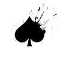
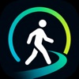
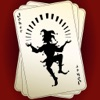
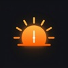

Lucario · dono da aba LAB
Lucario · dono da aba LABQuadro de tarefas Empoleon anota: fazer, decidir, esperar
Empoleon anota: fazer, decidir, esperar
Toque num card pra concluir, mover ou apagar.
Backlog (1)
Fazer (4)
Decidir (1)
Esperando (0)
Feito recentemente
Testes A/B abertos (15) detalhes Starmie puxa da loja
Starmie puxa da loja Entei cria os testes
Entei cria os testes Quilava lê o resultado
Quilava lê o resultado
ASC lida às 22:33 · parcial da web de 27/10 22:19 · sessão web expirada (ppo_web_results.py login)
| App | Experimento | Estado | Tráfego | Parcial (ASC web) |
|---|---|---|---|---|
| Bible Pills | Bible Pills — teste A/B/C de prints (validação 1, mais variada) | esperando seu OK desde 2026-10-28 20:38 | — | — |
| BLW | BLW — teste A/B/C de prints | esperando aprovação da Apple em análise na Apple desde 28/10 00:20 · Start automático quando aprovar | — | — |
| Philos | Philos — teste A/B/C de prints (validação 2) | esperando aprovação da Apple em análise na Apple desde 27/10 22:13 · Start automático quando aprovar | — | — |
 Truco Marcador | Truco Marcador — teste A/B/C de prints (validação 2) | esperando aprovação da Apple em análise na Apple desde 27/10 22:48 · Start automático quando aprovar | — | — |
| iPhotos | iPhotos — teste A/B/C de prints | esperando aprovação da Apple rodando desde 28/10 14:45 · próxima leitura D7 em 04/11 | — | — |
| Calc+ | Calc+ — teste A/B/C de prints | esperando aprovação da Apple em análise na Apple desde 27/10 16:12 · Start automático quando aprovar | — | — |
 Walk | Walk — teste A/B/C de prints | esperando aprovação da Apple em análise na Apple desde 27/10 18:06 · Start automático quando aprovar | — | — |
| Cloak: Hide & Lock Apps Vault | Cloak Prints A-B 2026-10-25 | rodando desde 27/10 até 25/01 | 66% | sem dados ainda |
| Hair Schedule: Care Routine | Hair Prints A-B-C 2026-10-18 | rodando desde 19/10 até 17/01 | 75% | A +7,0% · conf 0,0% n 249 · 27/10 leitura D7 27/10 |
| My Expenses: Personal Finances | Estilo visual 2026-10-14 | rodando desde 14/10 até 12/01 | 50% | escuro cidade +99,5% · conf 9,9% n 93 · 27/10 leitura D14 28/10 |
| Neon Glow Draw: Light Painting | Neon Prints A-B-F 2026-10-19 | rodando desde 20/10 até 18/01 | 75% | A +67,7% · conf 0,0% n 143 · 27/10 leitura D7 27/10 |
 Sueca Games • Never Have | Sueca panorama A-B-C 2026-10-20 | rodando desde 21/10 até 19/01 | 75% | A -10,4% · conf 0,0% n 97 · 27/10 leitura D7 28/10 |
 Sunrise Alarm Clock: Wake Up | Sunrise Prints A-B-C 2026-10-19 | rodando desde 20/10 até 18/01 | 75% | C -28,6% · conf 0,0% n 93 · 27/10 leitura D7 27/10 |
| Who Touched My Phone: WTMP | WTMP panorama A-B-C 2026-10-25 | rodando desde 26/10 até 24/01 | 75% | sem dados ainda |
| iPhotos • Photo Collage editor | iPhotos Prints A-B-C 2026-10-27 | rodando desde 28/10 até 26/01 | 75% | — |
ASO no ar, por app iterações dos últimos 30 dias Lugia mudanças de ASO no ar
Lugia mudanças de ASO no ar Turtwig antes × depois desde que foi ao ar
Turtwig antes × depois desde que foi ao ar
ASO: posições das keywords — painel de decisão
| App | Loja | Próximo passo | Aval. | Top 10 Δ7d / Δ28d | Top 50 | Mexeu 7d | Quase lá | Saiu do top 10 | Lacunas | Iteração |
|---|---|---|---|---|---|---|---|---|---|---|
| Hair Schedule | br | ratings primeiro (4 aval.); depois: lacuna 'meu cronograma capilar' (pop 57, fora): checar fit antes de apostar | 4 | 82 -1 / +0 | 92 | ↑14 ↓21 | 1 · cabelo #15 p51 | 0 | 2 · meu cronograma capilar p57 | live · 5/7 |
| es | nada a fazer: 56 termo(s) no top 10 estáveis | 0 | 56 -1 / +10 | 65 | ↑5 ↓26 | 0 | 1 · frizz cabello #3→fora | 0 | — | |
| mx | ratings primeiro (0 aval.); depois: lacuna 'corte de cabello' (pop 47, fora): checar fit antes de apostar | 0 | 21 -1 / +1 | 26 | ↑2 ↓21 | 0 | 0 | 1 · corte de cabello p47 | — | |
| us | ratings primeiro (0 aval.); depois: lacuna 'hair salon' (pop 60, fora): checar fit antes de apostar | 0 | 7 -3 / -31 | 37 | ↑19 ↓43 | 0 | 32 · coily hair routine #8→#17 | 5 · hair salon p60 | — | |
| My Expenses | br | iter-04-text-de-DE-name-subtitle-keywords staged há 27 d sem ir ao ar → subir numa versão ou descartar | 19 | 37 -2 / +7 | 50 | ↑13 ↓35 | 0 | 0 | 45 · caixa p84 | staged running |
| my | iter-04-text-de-DE-name-subtitle-keywords staged há 27 d sem ir ao ar → subir numa versão ou descartar | — | 7 +0 / — | 11 | ↑6 ↓9 | 0 | 0 | 13 · excel p74 | staged | |
| no | iter-04-text-de-DE-name-subtitle-keywords staged há 27 d sem ir ao ar → subir numa versão ou descartar | — | 7 +0 / — | 10 | ↑11 ↓1 | 0 | 0 | 9 · excel p67 | staged | |
| de | iter-04-text-de-DE-name-subtitle-keywords staged há 27 d sem ir ao ar → subir numa versão ou descartar | — | 6 +0 / +0 | 24 | ↑18 ↓43 | 0 | 1 · fixkosten verwalten #8→#19 | 19 · haushaltsbuch p61 | staged running | |
| + 25 loja(s), top 10 entre parênteses — termos em "Termos por app": fi (6), se (6), cz (5), gr (5), hu (5), nl (5), dk (4), il (4), pl (4), in (3), ua (3), fr (2), it (2), jp (2), sa (2), tr (2), vn (2), cn (1), id (1), us (1), es (0), kr (0), mx (0), ru (0), th (0) | ||||||||||
| Sueca Games | br | lacuna 'roleta' (pop 60, fora): checar fit antes de apostar | 159 | 11 +0 / -2 | 22 | ↑13 ↓29 | 0 | 2 · brincadeira festa #10→#17 | 24 · jogo p74 | deployed |
| Walk | br | ratings primeiro (1 aval.); depois: lacuna 'saude' (pop 63, fora): checar fit antes de apostar | 1 | 13 +0 / +0 | 33 | ↑22 ↓27 | 0 | 0 | 18 · saude p63 | live |
| es | ratings primeiro (2 aval.); depois: lacuna 'fitness' (pop 63, fora): checar fit antes de apostar | 2 | 6 +0 / +0 | 14 | ↑16 ↓15 | 1 · pasos y calorias #17 p31 | 0 | 9 · fitness p63 | — | |
| mx | ratings primeiro (1 aval.); depois: lacuna 'fitness' (pop 61, fora): checar fit antes de apostar | 1 | 8 +0 / +0 | 13 | ↑17 ↓9 | 0 | 0 | 14 · apple watch p68 | — | |
| de | lacuna 'kalorienzähler' (pop 48, fora): checar fit antes de apostar | — | 5 +0 / +1 | 10 | ↑0 ↓15 | 0 | 0 | 7 · fitness p69 | — | |
| + 1 loja(s), top 10 entre parênteses — termos em "Termos por app": us (3) | ||||||||||
| Truco Marcador | br | recuperar 'marca tento' (#9→#52, pop 23): saiu da metadata → voltar com o token | 451 | 7 -3 / -4 | 16 | ↑15 ↓22 | 0 | 4 · marca tento #9→#52 | 6 · truco p71 | live · 0/2 |
| mx | iter-02-text staged há 52 d sem ir ao ar → subir numa versão ou descartar | 1 | 4 +0 / -1 | 9 | ↑9 ↓7 | 0 | 1 · marcador de truco #10→#11 | 2 · contador p42 | staged · 0/2 | |
| es | nada a fazer: 4 termo(s) no top 10 estáveis · 4 cabeça(s) pop ≥ 40 já na metadata e fora do top 50 (difíceis) | 3 | 4 +1 / +0 | 9 | ↑6 ↓17 | 0 | 0 | 4 · contador p57 | — | |
| ar | nada a fazer: 1 termo(s) no top 10 estáveis · 3 cabeça(s) pop ≥ 40 já na metadata e fora do top 50 (difíceis) | — | 1 +0 / -1 | 13 | ↑8 ↓12 | 0 | 1 · tantos truco #9→#14 | 3 · truco p80 | — | |
| iPhotos | pt | iter-02-text-keywords staged há 28 d sem ir ao ar → subir numa versão ou descartar | — | 22 +0 / — | 43 | ↑8 ↓44 | 1 · carrossel instagram #20 p28 | 0 | 16 · instagram p100 | staged · 0/4 |
| br | iter-02-text-keywords staged há 28 d sem ir ao ar → subir numa versão ou descartar | 23 | 13 +0 / +10 | 30 | ↑23 ↓14 | 0 | 0 | 43 · instagram p100 | staged · 0/3 | |
| es | iter-02-text-keywords staged há 28 d sem ir ao ar → subir numa versão ou descartar | 13 | 4 +0 / +1 | 17 | ↑27 ↓12 | 0 | 0 | 35 · instagram p100 | staged · 0/4 | |
| fr | iter-02-text-keywords staged há 28 d sem ir ao ar → subir numa versão ou descartar | — | 4 +0 / — | 14 | ↑18 ↓12 | 0 | 0 | 15 · montage photo p65 | staged · 0/4 | |
| + 9 loja(s), top 10 entre parênteses — termos em "Termos por app": it (3), mx (3), us (3), tr (2), jp (1), cn (0), de (0), kr (0), ru (0) | ||||||||||
| Neon Glow Draw | mx | ratings primeiro (1 aval.); depois: lacuna 'pintar' (pop 65, fora): checar fit antes de apostar | 1 | 42 +4 / +2 | 58 | ↑38 ↓18 | 0 | 1 · dibujar neon #7→#11 | 11 · dibujar p68 | live · 0/1 |
| us | ratings primeiro (15 aval.); depois: lacuna 'ar drawing' (pop 65, fora): checar fit antes de apostar | 15 | 36 -3 / +6 | 73 | ↑21 ↓69 | 0 | 2 · glow draw #9→#21 | 39 · camera p69 | live live · 0/4 | |
| es | ratings primeiro (1 aval.); depois: lacuna 'dibujar' (pop 64, fora): checar fit antes de apostar | 1 | 32 -1 / +0 | 54 | ↑8 ↓37 | 0 | 0 | 6 · pintar p67 | live · 0/1 | |
| br | ratings primeiro (6 aval.); depois: lacuna 'pintar' (pop 60, fora): checar fit antes de apostar | 6 | 30 -2 / +0 | 50 | ↑21 ↓31 | 0 | 1 · glow draw #10→#13 | 13 · neon p78 | live · 1/4 | |
| Bible Pills | br | ratings primeiro (3 aval.); depois: empurrar 'glorify' (#13, pop 58): já no keywords → reforçar no subtítulo | 3 | 2 -1 / +1 | 11 | ↑17 ↓15 | 2 · glorify #13 p58 | 0 | 11 · biblia p70 | — |
| BLW Baby Led Weaning Tracker | br | ratings primeiro (2 aval.); depois: lacuna 'led' (pop 57, fora): checar fit antes de apostar | 2 | 46 +1 / -3 | 82 | ↑26 ↓39 | 1 · blw #18 p44 | 6 · alergia alimentar bebê #9→#13 | 11 · led p57 | live |
| es | ratings primeiro (1 aval.); depois: empurrar 'baby weaning' (#15, pop 25): já no keywords → reforçar no subtítulo | 1 | 16 -5 / -13 | 44 | ↑3 ↓44 | 2 · blw ideas #11 p54 | 13 · blw ideas #9→#11 | 2 · baby tracker p47 | — | |
| us | ratings primeiro (6 aval.); depois: lacuna 'food tracker' (pop 63, fora): checar fit antes de apostar | 6 | 5 -2 / -9 | 26 | ↑7 ↓65 | 0 | 9 · baby led weaning family meals #6→#61 | 10 · food p67 | — | |
| Sunrise Alarm Clock | fr | medindo iter-02-text-fr-FR-keywords (D26, D28 em 30/10): não mexer · alvos 2/5 no alvo | — | 22 +0 / +6 | 50 | ↑48 ↓28 | 1 · sunrise alarm #17 p23 | 0 | 15 · horloge p70 | medindo · 2/5 |
| es | medindo iter-01-text-en-US-keywords (D26, D28 em 30/10): não mexer | 0 | 15 -3 / -1 | 35 | ↑22 ↓29 | 1 · despertador amanecer #11 p30 | 4 · alarma de luz #10→#13 | 5 · alarma p62 | medindo | |
| br | medindo iter-01-text-en-US-keywords (D26, D28 em 30/10): não mexer | 2 | 10 +2 / +2 | 34 | ↑44 ↓10 | 0 | 0 | 3 · alarme p66 | medindo | |
| de | medindo iter-02-text-fr-FR-keywords (D26, D28 em 30/10): não mexer | — | 9 -2 / -4 | 37 | ↑24 ↓67 | 1 · lichtwecker #11 p31 | 5 · sunrise alarm clock #5→#23 | 16 · wecker p66 | medindo | |
| + 2 loja(s), top 10 entre parênteses — termos em "Termos por app": mx (2), us (1) | ||||||||||
| Philos | us | ratings primeiro (7 aval.); depois: lacuna 'life' (pop 63, fora): checar fit antes de apostar | 7 | 8 +0 / +0 | 21 | ↑15 ↓29 | 0 | 0 | 6 · plato p70 | live |
| br | ratings primeiro (0 aval.); depois: lacuna 'vida' (pop 45, fora): checar fit antes de apostar | 0 | 7 +0 / -2 | 15 | ↑7 ↓16 | 1 · stoicism #13 p22 | 2 · frases filosoficas #10→#18 | 1 · vida p45 | live | |
| mx | ratings primeiro (0 aval.); depois: lacuna 'vida' (pop 53, fora): checar fit antes de apostar | 0 | 3 +0 / -1 | 12 | ↑3 ↓18 | 0 | 1 · epicteto #10→#14 | 3 · citas p64 | live | |
| Controle de faltas e presença | br | iter-02-name-pt-BR-en-US staged há 47 d sem ir ao ar → subir numa versão ou descartar | 52 | 58 -1 / -20 | 67 | ↑19 ↓16 | 0 | 20 · caderno faculdade #10→#18 | 28 · controle p69 | staged |
| pt | nada a fazer: 4 termo(s) no top 10 estáveis | — | 4 +0 / +0 | 4 | ↑0 ↓0 | 0 | 0 | 0 | — | |
| us | nada a fazer: 2 termo(s) no top 10 estáveis | 0 | 2 +0 / +0 | 2 | ↑3 ↓1 | 0 | 0 | 0 | — | |
| Cronos | ru | recuperar 'матрица эйзенхауэра' (#10→#17, pop 25): ainda no subt. | — | 3 +1 / +0 | 7 | ↑8 ↓0 | 1 · матрица эйзенхауэра #17 p25 | 1 · матрица эйзенхауэра #10→#17 | 6 · напоминания p57 | — |
| br | ratings primeiro (15 aval.); depois: lacuna 'planner' (pop 63, fora): checar fit antes de apostar | 15 | 5 +1 / +1 | 7 | ↑5 ↓5 | 0 | 0 | 7 · agenda p68 | — | |
| es | ratings primeiro (4 aval.); depois: lacuna 'recordatorios' (pop 63, fora): checar fit antes de apostar | 4 | 4 +0 / +0 | 6 | ↑4 ↓3 | 0 | 0 | 7 · tiempo p67 | — | |
| de | lacuna 'erinnerungen' (pop 62, fora): checar fit antes de apostar | — | 2 +0 / +0 | 3 | ↑1 ↓3 | 0 | 0 | 9 · erinnerungen p62 | — | |
| + 6 loja(s), top 10 entre parênteses — termos em "Termos por app": cn (1), fr (1), jp (1), it (0), kr (0), us (0) | ||||||||||
| English for Devs | br | ratings primeiro (2 aval.); depois: lacuna 'english' (pop 46, fora): checar fit antes de apostar | 2 | 26 +1 / +0 | 28 | ↑11 ↓1 | 0 | 0 | 1 · english p46 | — |
| it | lacuna 'imparare l'inglese' (pop 54, fora): checar fit antes de apostar | — | 12 +0 / +0 | 13 | ↑4 ↓0 | 0 | 0 | 2 · inglese p57 | — | |
| de | lacuna 'englisch lernen' (pop 59, fora): checar fit antes de apostar | — | 10 +0 / +0 | 12 | ↑2 ↓2 | 0 | 0 | 2 · englisch lernen p59 | — | |
| fr | nada a fazer: 9 termo(s) no top 10 estáveis · 1 cabeça(s) pop ≥ 40 já na metadata e fora do top 50 (difíceis) | — | 9 +0 / +0 | 9 | ↑0 ↓1 | 0 | 0 | 1 · anglais p59 | — | |
| + 3 loja(s), top 10 entre parênteses — termos em "Termos por app": es (8), mx (8), us (3) | ||||||||||
| SafeDoc | br | ratings primeiro (0 aval.); depois: lacuna 'calculadora secreta' (pop 63, fora): checar fit antes de apostar | 0 | 0 +0 / +0 | 0 | ↑1 ↓2 | 0 | 0 | 1 · calculadora secreta p63 | — |
| + 2 loja(s), top 10 entre parênteses — termos em "Termos por app": es (0), us (0) | ||||||||||
| Who Touched My Phone | sem dadoapp não monitorado no Astro | |||||||||
| My Way | sem dadoapp não monitorado no Astro | |||||||||
| Cloak | br | congelado — sem recomendação | 17 | 49 -1 / -2 | 83 | ↑25 ↓68 | 1 · tempo de uso #20 p35 | 4 · app lock: #10→#21 | 23 · face p67 | — |
| mx | congelado — sem recomendação | 6 | 16 +3 / +2 | 38 | ↑41 ↓2 | 2 · tiempo en pantalla #17 p35 | 0 | 13 · casino p71 | — | |
| us | congelado — sem recomendação | 17 | 12 +2 / +1 | 22 | ↑25 ↓12 | 0 | 3 · hiding apps #10→#12 | 12 · private browser p69 | — | |
| Secret Calculator Vault Photo | mx | congelado — sem recomendação | 978 | 0 +0 / +0 | 2 | ↑2 ↓4 | 1 · ocultar fotos #20 p49 | 0 | 8 · calculadora p71 | — |
| br | congelado — sem recomendação | 2886 | 22 +2 / +1 | 29 | ↑34 ↓23 | 0 | 0 | 22 · fotos p78 | — | |
| us | congelado — sem recomendação | 950 | 0 -1 / +0 | 2 | ↑6 ↓2 | 0 | 0 | 7 · keepsafe p67 | — | |
Termos por app
Hair Schedule · ratings primeiro (máx 4 aval. por loja); depois: us: lacuna 'hair salon' (pop 60, fora): checar fit antes de apostar
- impressões sem. 12/10: 2046 (+13% vs 3 sem. antes)
- metadata ao vivo v1.2.0 lida 28/10 19:42
Iteração 2026-08-25_iter-01-text-en-US-keywords · live · no ar desde 31/08 (D58) · medição: medida
- alvo agregado: keyword_positions_top_5: +9 vs Day 0, com 'cuidados com o cabelo' <= #5 e >=3 comps BR novas em top 3
| Termo | Loja | Pop | D0 | Alvo | Agora | Estado |
|---|---|---|---|---|---|---|
| cuidados com o cabelo | br | 5 | #6 | ≤ #5 | #6 | abaixo |
| cuidados com cabelo cacheado | br | 5 | fora | ≤ #5 | #2 | no alvo |
| cuidados com cabelo crespo | br | 5 | fora | ≤ #5 | #2 | no alvo |
| cuidados com cabelo liso | br | 5 | fora | ≤ #5 | #1 | no alvo |
| cabelo ondulado cuidados | br | 5 | fora | ≤ #5 | #1 | no alvo |
| rotina de cuidados com o cabelo | br | 5 | fora | ≤ #5 | fora | abaixo |
| cronograma capilar | br | 60 | #4 | ≤ #4 | #4 | no alvo |
| dry hair routine | us | 5 | #7 | ≤ #6 | #13 | abaixo |
| dry hair treatment | us | 5 | #15 | ≤ #12 | #152 | abaixo |
| cronograma capilar rizos | es | 5 | fora | ≤ #5 | #1 | no alvo |
| cuidado de rizos | es | 5 | fora | ≤ #5 | #4 | no alvo |
| rutina para rizos | es | 5 | fora | ≤ #5 | fora | abaixo |
| cronograma capilar rizos | mx | 5 | fora | ≤ #5 | #2 | no alvo |
| cuidado de rizos | mx | 5 | fora | ≤ #5 | fora | abaixo |
| rutina para rizos | mx | 5 | fora | ≤ #5 | fora | abaixo |
| cronograma capilar | mx | 5 | #4 | ≤ #4 | #4 | no alvo |
Brasil (br) · 332 monitorados · 98 no ranking · 82 no top 10 (1 com pop ≥ 39) · leitura 28/10 · metadata: pt-BR (locale da loja) · kw 100/100
Passo: ratings primeiro (4 aval.); depois: lacuna 'meu cronograma capilar' (pop 57, fora): checar fit antes de apostar
Subiram 7d
| Termo | Pop | 7d atrás | Agora | Mov. |
|---|---|---|---|---|
| rotina | 56 | #28 | #26 | ▲2 |
| cronograma capilar | 60 | #5 | #4 | ▲1 |
| hidratação | 5 | #125 | #31 | ▲94 |
| frizz | 5 | #26 | #11 | ▲15 |
| cabelo cacheado | 5 | #26 | #19 | ▲7 |
Caíram 7d
| Termo | Pop | 7d atrás | Agora | Mov. |
|---|---|---|---|---|
| mudar cabelo | 44 | #55 | #180 | ▼125 |
| cabelo | 51 | #13 | #15 | ▼2 |
| organizar rotina | 15 | #43 | #124 | ▼81 |
| tratamento | 5 | #45 | #70 | ▼25 |
| pintar cabelo | 17 | #28 | #42 | ▼14 |
Subiram 28d
| Termo | Pop | 28d atrás | Agora | Mov. |
|---|---|---|---|---|
| rotina | 56 | #31 | #26 | ▲5 |
| cronograma capilar | 60 | #5 | #4 | ▲1 |
| hidratação | 5 | #119 | #31 | ▲88 |
| pintar cabelo | 17 | #99 | #42 | ▲57 |
| cabelo cacheado | 5 | #47 | #19 | ▲28 |
Caíram 28d
| Termo | Pop | 28d atrás | Agora | Mov. |
|---|---|---|---|---|
| cabelo | 51 | #11 | #15 | ▼4 |
| tratamento | 5 | #36 | #70 | ▼34 |
| cacheado | 5 | #82 | #96 | ▼14 |
| capilar | 5 | #6 | #10 | ▼4 |
| cronogramas capilares | 5 | #3 | #5 | ▼2 |
Quase lá (#11-#20, pop ≥ 20)
| Termo | Pop | Agora | Na metadata ao vivo | Vol. oficial |
|---|---|---|---|---|
| cabelo | 51 | #15 | subt. | — |
Saíram do top 10 em 28d
nenhum
Lacunas (pop ≥ 40, fora do top 50)
| Termo | Pop | Agora | Na metadata ao vivo | Vol. oficial |
|---|---|---|---|---|
| meu cronograma capilar | 57 | fora | falta: meu | — |
| mudar cabelo | 44 | #180 | falta: mudar | — |
Espanha (es) · 218 monitorados · 71 no ranking · 56 no top 10 (0 com pop ≥ 39) · leitura 28/10 · metadata: es-ES (locale da loja) · kw 98/100
Passo: nada a fazer: 56 termo(s) no top 10 estáveis
Subiram 7d
| Termo | Pop | 7d atrás | Agora | Mov. |
|---|---|---|---|---|
| cronograma | 5 | #30 | #14 | ▲16 |
| cronograma capilar | 6 | #7 | #3 | ▲4 |
| cabello rizado | 5 | #14 | #12 | ▲2 |
| cronograma capilar gratis | 5 | #4 | #3 | ▲1 |
| mi cronograma capilar | 5 | #7 | #6 | ▲1 |
Caíram 7d
| Termo | Pop | 7d atrás | Agora | Mov. |
|---|---|---|---|---|
| frizz cabello | 5 | #1 | fora | saiu |
| pelo rizado | 5 | #14 | fora | saiu |
| frizz | 5 | #21 | #116 | ▼95 |
| pelo liso | 5 | #21 | #39 | ▼18 |
| hidratación | 5 | #56 | #63 | ▼7 |
Subiram 28d
| Termo | Pop | 28d atrás | Agora | Mov. |
|---|---|---|---|---|
| cronograma | 5 | #184 | #14 | ▲170 |
| hidratación del pelo | 5 | #116 | #27 | ▲89 |
| pelo liso | 5 | #106 | #39 | ▲67 |
| hair care guide | 5 | fora | #44 | entrou |
| cronograma pelo | 5 | #51 | #2 | ▲49 |
Caíram 28d
| Termo | Pop | 28d atrás | Agora | Mov. |
|---|---|---|---|---|
| frizz cabello | 5 | #3 | fora | saiu |
| pelo rizado | 5 | #29 | fora | saiu |
| frizz | 5 | #45 | #116 | ▼71 |
| cuidado de rizos | 5 | #3 | #4 | ▼1 |
| calendario de cabello | 5 | #4 | #5 | ▼1 |
Quase lá (#11-#20, pop ≥ 20)
nenhum
Saíram do top 10 em 28d
| Termo | Pop | 28d | Agora | Na metadata ao vivo | Vol. oficial |
|---|---|---|---|---|---|
| frizz cabello | 5 | #3 | fora | kw | — |
Lacunas (pop ≥ 40, fora do top 50)
nenhum
EUA (us) · 299 monitorados · 70 no ranking · 7 no top 10 (0 com pop ≥ 39) · leitura 28/10 · metadata: en-US (locale da loja) · kw 100/100
Passo: ratings primeiro (0 aval.); depois: lacuna 'hair salon' (pop 60, fora): checar fit antes de apostar
Subiram 7d
| Termo | Pop | 7d atrás | Agora | Mov. |
|---|---|---|---|---|
| curly hair routine | 5 | #96 | #51 | ▲45 |
| reconstruction treatment | 5 | #76 | #64 | ▲12 |
| porosity | 5 | #36 | #25 | ▲11 |
| hair schedule app | 5 | #11 | #1 | ▲10 |
| dry scalp treatment | 5 | #50 | #40 | ▲10 |
Caíram 7d
| Termo | Pop | 7d atrás | Agora | Mov. |
|---|---|---|---|---|
| wavy | 21 | #64 | #85 | ▼21 |
| coily | 5 | #23 | fora | saiu |
| hair nutrition routine | 5 | #3 | #56 | ▼53 |
| hair nutrition | 5 | #25 | #37 | ▼12 |
| haircare routine | 5 | #28 | #40 | ▼12 |
Subiram 28d
| Termo | Pop | 28d atrás | Agora | Mov. |
|---|---|---|---|---|
| hair schedule app | 5 | #108 | #1 | ▲107 |
| porosity | 5 | #64 | #25 | ▲39 |
| protein treatment routine | 5 | #44 | #26 | ▲18 |
| dryness | 5 | #27 | #18 | ▲9 |
| hair schedule | 5 | #3 | #1 | ▲2 |
Caíram 28d
| Termo | Pop | 28d atrás | Agora | Mov. |
|---|---|---|---|---|
| wavy | 21 | #39 | #85 | ▼46 |
| frizz | 22 | #65 | #125 | ▼60 |
| home remedies for hair care | 31 | #99 | fora | saiu |
| hair treatment schedule | 5 | #1 | #132 | ▼131 |
| weekly hair schedule | 5 | #2 | fora | saiu |
Quase lá (#11-#20, pop ≥ 20)
nenhum
Saíram do top 10 em 28d
| Termo | Pop | 28d | Agora | Na metadata ao vivo | Vol. oficial |
|---|---|---|---|---|---|
| coily hair routine | 5 | #8 | #17 | nome+kw | — |
| curly hair care routine | 5 | #7 | #51 | nome+kw | — |
| curly hair schedule | 5 | #3 | #26 | nome+kw | — |
| daily hair schedule | 5 | #3 | fora | falta: daily | — |
| damaged hair routine | 5 | #9 | fora | falta: damaged | — |
| dry hair | 5 | #8 | fora | nome+kw | — |
| dry hair routine | 5 | #3 | #13 | nome+kw | — |
| dry hair treatment | 5 | #10 | #152 | nome+kw | — |
| hair care day | 5 | #7 | #87 | nome+kw | — |
| hair care schedule | 5 | #2 | #34 | nome | — |
| hair dryness | 5 | #3 | #34 | nome+kw | — |
| hair hydration | 5 | #2 | #18 | nome+subt. | — |
| hair hydration routine | 5 | #3 | #13 | nome+subt. | — |
| hair hydration treatment | 5 | #2 | #14 | nome+subt.+kw | — |
| hair moisture routine | 5 | #3 | #32 | nome+kw | — |
| hair moisture treatment | 5 | #10 | #30 | nome+kw | — |
| hair nutrition | 5 | #2 | #37 | nome+subt. | — |
| hair nutrition routine | 5 | #2 | #56 | nome+subt. | — |
| hair porosity routine | 5 | #7 | #31 | nome+kw | — |
| hair protein | 5 | #9 | #65 | nome+kw | — |
| hair repair | 5 | #7 | #37 | nome+subt. | — |
| hair repair routine | 5 | #1 | #11 | nome+subt. | — |
| hair routine | 5 | #9 | #11 | nome | — |
| hair treatment schedule | 5 | #1 | #132 | nome+kw | — |
| hair wash schedule | 5 | #7 | #12 | nome+kw | — |
| healthy hair routine | 5 | #7 | fora | falta: healthy | — |
| low porosity routine | 5 | #7 | fora | falta: low | — |
| protein treatment schedule | 5 | #1 | #81 | nome+kw | — |
| scalp care routine | 5 | #5 | #29 | nome+kw | — |
| scalp routine | 5 | #9 | #17 | nome+kw | — |
| wavy hair routine | 5 | #5 | #25 | nome+kw | — |
| weekly hair schedule | 5 | #2 | fora | falta: weekly | — |
Lacunas (pop ≥ 40, fora do top 50)
| Termo | Pop | Agora | Na metadata ao vivo | Vol. oficial |
|---|---|---|---|---|
| hair salon | 60 | fora | falta: salon | — |
| protein tracker | 58 | fora | falta: tracker | — |
| hair | 55 | fora | nome | — |
| schedule | 48 | fora | nome | — |
| routine | 42 | fora | nome | — |
México (mx) · 242 monitorados · 29 no ranking · 21 no top 10 (0 com pop ≥ 39) · leitura 28/10 · metadata: es-MX (locale da loja) · kw 83/100
Passo: ratings primeiro (0 aval.); depois: lacuna 'corte de cabello' (pop 47, fora): checar fit antes de apostar
Subiram 7d
| Termo | Pop | 7d atrás | Agora | Mov. |
|---|---|---|---|---|
| cronograma | 5 | #58 | #30 | ▲28 |
| cronograma capilar gratis | 5 | #6 | #5 | ▲1 |
Caíram 7d
| Termo | Pop | 7d atrás | Agora | Mov. |
|---|---|---|---|---|
| caspa | 5 | #59 | #82 | ▼23 |
| cronograma pelo | 5 | #19 | #32 | ▼13 |
| capilar | 5 | #6 | #17 | ▼11 |
| salud capilar | 5 | #12 | #22 | ▼10 |
| frizz | 5 | #63 | #71 | ▼8 |
Subiram 28d
| Termo | Pop | 28d atrás | Agora | Mov. |
|---|---|---|---|---|
| cronograma pelo | 5 | #52 | #32 | ▲20 |
| cronograma y diario capilar | 5 | #8 | #4 | ▲4 |
| cronograma capilar gratis | 5 | #8 | #5 | ▲3 |
| app cronograma capilar | 5 | #8 | #6 | ▲2 |
| mi cronograma capilar | 5 | #11 | #10 | ▲1 |
Caíram 28d
| Termo | Pop | 28d atrás | Agora | Mov. |
|---|---|---|---|---|
| cronograma | 5 | #11 | #30 | ▼19 |
| capilar | 5 | #12 | #17 | ▼5 |
| salud capilar | 5 | #18 | #22 | ▼4 |
| rutina capilar | 5 | #2 | #4 | ▼2 |
| rutina de lavado | 5 | #3 | #5 | ▼2 |
Quase lá (#11-#20, pop ≥ 20)
nenhum
Saíram do top 10 em 28d
nenhum
Lacunas (pop ≥ 40, fora do top 50)
| Termo | Pop | Agora | Na metadata ao vivo | Vol. oficial |
|---|---|---|---|---|
| corte de cabello | 47 | fora | fora | — |
My Expenses · br: iter-04-text-de-DE-name-subtitle-keywords staged há 27 d sem ir ao ar → subir numa versão ou descartar
- impressões sem. 12/10: 1817 (+6% vs 3 sem. antes)
- metadata ao vivo v45.3.1 lida 28/10 19:42
Iteração 2026-09-30_iter-04-text-de-DE-name-subtitle-keywords · staged · staged desde 01/10 · medição: não medida
meta.json sem alvo de posição por termo
Iteração 2026-08-24_iter-03-text-pt-BR-keywords · running · no ar desde 28/08 (D61) · medição: medida
meta.json sem alvo de posição por termo
Brasil (br) · 398 monitorados · 68 no ranking · 37 no top 10 (0 com pop ≥ 39) · leitura 28/10 · metadata: pt-BR (locale da loja) · kw 97/100
Passo: iter-04-text-de-DE-name-subtitle-keywords staged há 27 d sem ir ao ar → subir numa versão ou descartar
Subiram 7d
| Termo | Pop | 7d atrás | Agora | Mov. |
|---|---|---|---|---|
| extrato | 21 | #82 | #80 | ▲2 |
| gestor de orcamento e despesas | 5 | #96 | #77 | ▲19 |
| categorias | 5 | #99 | #86 | ▲13 |
| diário gastos | 5 | #26 | #14 | ▲12 |
| financas do casal | 5 | #24 | #16 | ▲8 |
Caíram 7d
| Termo | Pop | 7d atrás | Agora | Mov. |
|---|---|---|---|---|
| despesas casal | 5 | #41 | #115 | ▼74 |
| financas casal | 5 | #75 | #178 | ▼103 |
| gastos diários | 5 | #83 | #235 | ▼152 |
| orçamento despesas | 5 | #93 | #102 | ▼9 |
| orcamento casal | 5 | #18 | #25 | ▼7 |
Subiram 28d
| Termo | Pop | 28d atrás | Agora | Mov. |
|---|---|---|---|---|
| contas despesas | 5 | fora | #3 | entrou |
| app de despesas casal | 5 | #84 | #50 | ▲34 |
| despesas gastos | 5 | #36 | #12 | ▲24 |
| gestor de orcamento e despesas | 5 | #142 | #77 | ▲65 |
| financas pessoais e familiares | 5 | #58 | #39 | ▲19 |
Caíram 28d
| Termo | Pop | 28d atrás | Agora | Mov. |
|---|---|---|---|---|
| extrato | 21 | #73 | #80 | ▼7 |
| despesas do casal | 5 | #82 | #114 | ▼32 |
| despesas casal | 5 | #90 | #115 | ▼25 |
| contas fixas | 5 | #26 | #36 | ▼10 |
| gastos compartilhados | 5 | #2 | #9 | ▼7 |
Quase lá (#11-#20, pop ≥ 20)
nenhum
Saíram do top 10 em 28d
nenhum
Lacunas (pop ≥ 40, fora do top 50)
| Termo | Pop | Agora | Na metadata ao vivo | Vol. oficial |
|---|---|---|---|---|
| caixa | 84 | fora | fora | — |
| calculadora | 73 | fora | fora | — |
| cartao de credito | 69 | fora | fora | — |
| controle | 69 | fora | fora | — |
| icloud | 67 | fora | fora | — |
| mercado | 66 | fora | fora | — |
| pix | 64 | fora | fora | — |
| offline | 62 | fora | fora | — |
| mobills | 60 | fora | fora | — |
| wallet | 60 | fora | fora | — |
| minhas economias | 59 | fora | falta: minhas | — |
| planilha | 59 | #144 | kw | — |
| planilha financeira | 59 | fora | falta: financeira | — |
| casa | 58 | fora | fora | — |
| senha | 58 | fora | fora | — |
| widget | 58 | fora | fora | — |
| finanças pessoais | 57 | fora | subt. | — |
| cartão | 56 | fora | fora | — |
| conta | 56 | fora | fora | — |
| minhas financas | 56 | #219 | falta: minhas | — |
| controle financeiro | 54 | fora | fora | — |
| minhas despesas | 54 | fora | falta: minhas | — |
| organizador financeiro | 54 | fora | fora | — |
| casal | 53 | fora | subt. | — |
| dinheiro | 53 | fora | fora | — |
| financas | 53 | fora | subt. | — |
| cartão de crédito | 52 | fora | fora | — |
| controle financeiro pessoal | 52 | fora | fora | — |
| despesas | 52 | fora | nome | — |
| finanças | 52 | fora | subt. | — |
| contas | 51 | fora | nome | — |
| controle de gastos | 51 | fora | falta: controle, de | — |
| jogo casal | 49 | fora | falta: jogo | — |
| simples | 49 | fora | fora | — |
| personal | 48 | fora | fora | — |
| cofrinho | 47 | fora | fora | — |
| receitas | 47 | fora | fora | — |
| gerenciador | 46 | fora | fora | — |
| fácil | 45 | fora | fora | — |
| organizar | 45 | fora | fora | — |
| face id | 43 | fora | fora | — |
| financeiro | 43 | fora | fora | — |
| contas a pagar | 41 | fora | falta: a, pagar | — |
| gastos mensais | 40 | fora | nome+kw | — |
| metas | 40 | fora | fora | — |
Alemanha (de) · 211 monitorados · 67 no ranking · 6 no top 10 (0 com pop ≥ 39) · leitura 28/10 · metadata: de-DE (locale da loja) · kw 97/100
Passo: iter-04-text-de-DE-name-subtitle-keywords staged há 27 d sem ir ao ar → subir numa versão ou descartar
Subiram 7d
| Termo | Pop | 7d atrás | Agora | Mov. |
|---|---|---|---|---|
| haushalt | 24 | #49 | #30 | ▲19 |
| flores | 32 | #153 | #95 | ▲58 |
| haushaltsbuch kostenlos | 61 | #65 | #64 | ▲1 |
| ausgaben | 48 | #84 | #83 | ▲1 |
| haushaltsbuch kosten | 5 | #62 | #49 | ▲13 |
Caíram 7d
| Termo | Pop | 7d atrás | Agora | Mov. |
|---|---|---|---|---|
| haushaltsplaner | 34 | #69 | #84 | ▼15 |
| haushaltsbuch | 61 | #51 | #52 | ▼1 |
| budget kategorien | 5 | #12 | #19 | ▼7 |
| kontobuch | 5 | #46 | #53 | ▼7 |
| monatsbudget | 9 | #22 | #28 | ▼6 |
Subiram 28d
| Termo | Pop | 28d atrás | Agora | Mov. |
|---|---|---|---|---|
| haushalt | 24 | #63 | #30 | ▲33 |
| ausgaben | 48 | #207 | #83 | ▲124 |
| haushaltsbuch budget ausgaben | 5 | #101 | #85 | ▲16 |
| haushalt ausgaben | 5 | #35 | #22 | ▲13 |
| haushaltskonto | 5 | #41 | #29 | ▲12 |
Caíram 28d
| Termo | Pop | 28d atrás | Agora | Mov. |
|---|---|---|---|---|
| haushaltsplaner | 34 | #50 | #84 | ▼34 |
| haushaltsbuch kostenlos | 61 | #54 | #64 | ▼10 |
| haushaltsbuch | 61 | #51 | #52 | ▼1 |
| kosten verwalten | 5 | #42 | #62 | ▼20 |
| monatsbudget planer | 5 | #47 | #66 | ▼19 |
Quase lá (#11-#20, pop ≥ 20)
nenhum
Saíram do top 10 em 28d
| Termo | Pop | 28d | Agora | Na metadata ao vivo | Vol. oficial |
|---|---|---|---|---|---|
| fixkosten verwalten | 5 | #8 | #19 | subt.+kw | — |
Lacunas (pop ≥ 40, fora do top 50)
| Termo | Pop | Agora | Na metadata ao vivo | Vol. oficial |
|---|---|---|---|---|
| haushaltsbuch | 61 | #52 | nome | — |
| haushaltsbuch kostenlos | 61 | #64 | falta: kostenlos | — |
| budget planner | 59 | fora | falta: planner | — |
| money manager | 59 | fora | fora | — |
| finanzen | 58 | fora | subt. | — |
| planer | 58 | fora | kw | — |
| planner | 57 | fora | fora | — |
| ausgaben tracker | 55 | fora | falta: tracker | — |
| budget | 52 | fora | subt. | — |
| geld | 52 | fora | fora | — |
| geld sparen | 52 | fora | fora | — |
| budget planer | 51 | fora | subt.+kw | — |
| finanzplaner | 51 | #155 | fora | — |
| sparen | 50 | fora | fora | — |
| buchhaltung | 49 | fora | fora | — |
| manager | 49 | fora | fora | — |
| ausgaben | 48 | #83 | nome | — |
| kassenbuch | 48 | fora | fora | — |
| tracker | 47 | fora | fora | — |
GR (gr) · 52 monitorados · 20 no ranking · 5 no top 10 (0 com pop ≥ 39) · leitura 28/10 · metadata: el (locale da loja) · kw 88/100
Passo: iter-04-text-de-DE-name-subtitle-keywords staged há 27 d sem ir ao ar → subir numa versão ou descartar
Subiram 7d
| Termo | Pop | 7d atrás | Agora | Mov. |
|---|---|---|---|---|
| personal finance | 5 | #86 | #43 | ▲43 |
| αποταμίευση | 5 | #71 | #42 | ▲29 |
| εξαγωγή | 5 | #117 | #87 | ▲30 |
| ταμείο | 5 | #60 | #47 | ▲13 |
| στόχοι | 5 | #107 | #88 | ▲19 |
Caíram 7d
| Termo | Pop | 7d atrás | Agora | Mov. |
|---|---|---|---|---|
| κατηγορίες | 5 | #8 | #10 | ▼2 |
| personal | 5 | #99 | #108 | ▼9 |
Subiram 28d
nenhum
Caíram 28d
nenhum
Quase lá (#11-#20, pop ≥ 20)
nenhum
Saíram do top 10 em 28d
nenhum
Lacunas (pop ≥ 40, fora do top 50)
| Termo | Pop | Agora | Na metadata ao vivo | Vol. oficial |
|---|---|---|---|---|
| 69 | fora | kw | — | |
| excel | 68 | fora | kw | — |
| home | 58 | fora | fora | — |
| widget | 58 | fora | kw | — |
| manager | 53 | fora | fora | — |
| planner | 53 | fora | fora | — |
| money | 42 | fora | fora | — |
MY (my) · 50 monitorados · 18 no ranking · 7 no top 10 (0 com pop ≥ 39) · leitura 28/10 · metadata: ms (locale da loja) · kw 89/100
Passo: iter-04-text-de-DE-name-subtitle-keywords staged há 27 d sem ir ao ar → subir numa versão ou descartar
Subiram 7d
| Termo | Pop | 7d atrás | Agora | Mov. |
|---|---|---|---|---|
| catat | 5 | #78 | #72 | ▲6 |
| belanja offline | 5 | #7 | #5 | ▲2 |
| laporan belanja | 5 | #10 | #9 | ▲1 |
| jimat | 5 | #101 | #100 | ▲1 |
Caíram 7d
| Termo | Pop | 7d atrás | Agora | Mov. |
|---|---|---|---|---|
| belanja | 63 | #49 | #85 | ▼36 |
| duit | 40 | #70 | #73 | ▼3 |
| urus | 5 | #40 | #47 | ▼7 |
| kewangan | 5 | #53 | #60 | ▼7 |
| penyata | 5 | #19 | #21 | ▼2 |
Subiram 28d
nenhum
Caíram 28d
nenhum
Quase lá (#11-#20, pop ≥ 20)
nenhum
Saíram do top 10 em 28d
nenhum
Lacunas (pop ≥ 40, fora do top 50)
| Termo | Pop | Agora | Na metadata ao vivo | Vol. oficial |
|---|---|---|---|---|
| excel | 74 | fora | kw | — |
| 73 | fora | kw | — | |
| belanja | 63 | #85 | nome | — |
| money manager | 63 | fora | fora | — |
| offline | 61 | fora | kw | — |
| money | 57 | fora | fora | — |
| money tracker | 56 | fora | fora | — |
| budget | 52 | fora | fora | — |
| budget tracker | 51 | fora | fora | — |
| finance | 51 | fora | fora | — |
| tracker | 51 | fora | fora | — |
| manager | 43 | fora | fora | — |
| duit | 40 | #73 | kw | — |
CZ (cz) · 50 monitorados · 20 no ranking · 5 no top 10 (0 com pop ≥ 39) · leitura 28/10 · metadata: cs (locale da loja) · kw 88/100
Passo: iter-04-text-de-DE-name-subtitle-keywords staged há 27 d sem ir ao ar → subir numa versão ou descartar
Subiram 7d
| Termo | Pop | 7d atrás | Agora | Mov. |
|---|---|---|---|---|
| úspory | 5 | #74 | #67 | ▲7 |
| platby | 5 | #92 | #88 | ▲4 |
| výdaje | 5 | #46 | #43 | ▲3 |
| přehled | 5 | #96 | #94 | ▲2 |
| financí | 5 | #22 | #21 | ▲1 |
Caíram 7d
| Termo | Pop | 7d atrás | Agora | Mov. |
|---|---|---|---|---|
| vydaje offline | 5 | #1 | #2 | ▼1 |
| kategorie | 5 | #18 | #19 | ▼1 |
Subiram 28d
nenhum
Caíram 28d
nenhum
Quase lá (#11-#20, pop ≥ 20)
nenhum
Saíram do top 10 em 28d
nenhum
Lacunas (pop ≥ 40, fora do top 50)
| Termo | Pop | Agora | Na metadata ao vivo | Vol. oficial |
|---|---|---|---|---|
| widget | 58 | fora | kw | — |
| deník | 56 | fora | kw | — |
| offline | 56 | fora | kw | — |
| rozpočet | 56 | #232 | subt. | — |
| finance | 55 | #155 | fora | — |
| planner | 54 | fora | fora | — |
| money | 53 | fora | fora | — |
| tracker | 52 | fora | fora | — |
| manager | 42 | fora | fora | — |
NO (no) · 45 monitorados · 15 no ranking · 7 no top 10 (0 com pop ≥ 39) · leitura 28/10 · metadata: no (locale da loja) · kw 90/100
Passo: iter-04-text-de-DE-name-subtitle-keywords staged há 27 d sem ir ao ar → subir numa versão ou descartar
Subiram 7d
| Termo | Pop | 7d atrás | Agora | Mov. |
|---|---|---|---|---|
| regnskap | 30 | #101 | #68 | ▲33 |
| utgifter | 28 | #70 | #58 | ▲12 |
| budsjett | 59 | #49 | #48 | ▲1 |
| kategori | 5 | #24 | #18 | ▲6 |
| faste utgifter | 5 | #4 | #2 | ▲2 |
Caíram 7d
| Termo | Pop | 7d atrás | Agora | Mov. |
|---|---|---|---|---|
| privatokonomi app | 5 | #20 | #21 | ▼1 |
Subiram 28d
nenhum
Caíram 28d
nenhum
Quase lá (#11-#20, pop ≥ 20)
nenhum
Saíram do top 10 em 28d
nenhum
Lacunas (pop ≥ 40, fora do top 50)
| Termo | Pop | Agora | Na metadata ao vivo | Vol. oficial |
|---|---|---|---|---|
| excel | 67 | fora | kw | — |
| 59 | fora | kw | — | |
| tracker | 59 | fora | fora | — |
| widget | 59 | fora | kw | — |
| budget | 54 | fora | fora | — |
| planner | 54 | fora | fora | — |
| dagbok | 53 | fora | kw | — |
| kontroll | 40 | fora | kw | — |
| money | 40 | fora | fora | — |
UA (ua) · 50 monitorados · 21 no ranking · 3 no top 10 (0 com pop ≥ 39) · leitura 28/10 · metadata: uk (locale da loja) · kw 92/100
Passo: iter-04-text-de-DE-name-subtitle-keywords staged há 27 d sem ir ao ar → subir numa versão ou descartar
Subiram 7d
| Termo | Pop | 7d atrás | Agora | Mov. |
|---|---|---|---|---|
| облік витрат | 48 | #63 | #59 | ▲4 |
| категорії | 5 | #32 | #28 | ▲4 |
| експорт | 5 | #74 | #71 | ▲3 |
| витрати офлайн | 5 | #14 | #13 | ▲1 |
Caíram 7d
| Termo | Pop | 7d atrás | Agora | Mov. |
|---|---|---|---|---|
| витрати | 49 | #61 | fora | saiu |
| планування | 25 | #55 | #79 | ▼24 |
| мої витрати | 50 | #13 | #14 | ▼1 |
| звіт | 5 | #42 | #86 | ▼44 |
| облік | 5 | #42 | #81 | ▼39 |
Subiram 28d
nenhum
Caíram 28d
nenhum
Quase lá (#11-#20, pop ≥ 20)
| Termo | Pop | Agora | Na metadata ao vivo | Vol. oficial |
|---|---|---|---|---|
| мої витрати | 50 | #14 | nome | — |
Saíram do top 10 em 28d
nenhum
Lacunas (pop ≥ 40, fora do top 50)
| Termo | Pop | Agora | Na metadata ao vivo | Vol. oficial |
|---|---|---|---|---|
| гаманець | 71 | #221 | kw | — |
| wallet | 67 | fora | fora | — |
| календар | 65 | fora | kw | — |
| flow | 60 | fora | fora | — |
| money manager | 57 | fora | fora | — |
| віджет | 52 | fora | kw | — |
| бюджет | 51 | fora | subt. | — |
| гроші | 51 | #229 | kw | — |
| budget | 50 | fora | fora | — |
| money | 50 | fora | fora | — |
| money flow | 50 | fora | fora | — |
| expense | 49 | fora | fora | — |
| витрати | 49 | fora | nome | — |
| облік витрат | 48 | #59 | falta: витрат | — |
| manager | 40 | fora | fora | — |
FI (fi) · 42 monitorados · 13 no ranking · 6 no top 10 (0 com pop ≥ 39) · leitura 28/10 · metadata: fi (locale da loja) · kw 82/100
Passo: iter-04-text-de-DE-name-subtitle-keywords staged há 27 d sem ir ao ar → subir numa versão ou descartar
Subiram 7d
| Termo | Pop | 7d atrás | Agora | Mov. |
|---|---|---|---|---|
| kuluseuranta | 5 | #60 | #46 | ▲14 |
| menojen seuranta | 5 | #96 | #94 | ▲2 |
| menot kaavio | 5 | #2 | #1 | ▲1 |
| menot widget | 5 | #8 | #7 | ▲1 |
| menot offline | 5 | #9 | #8 | ▲1 |
Caíram 7d
| Termo | Pop | 7d atrás | Agora | Mov. |
|---|---|---|---|---|
| omat menot | 5 | #1 | #2 | ▼1 |
Subiram 28d
nenhum
Caíram 28d
nenhum
Quase lá (#11-#20, pop ≥ 20)
nenhum
Saíram do top 10 em 28d
nenhum
Lacunas (pop ≥ 40, fora do top 50)
| Termo | Pop | Agora | Na metadata ao vivo | Vol. oficial |
|---|---|---|---|---|
| kalenteri | 64 | fora | kw | — |
| excel | 63 | fora | kw | — |
| tracker | 61 | fora | fora | — |
| 59 | fora | kw | — | |
| budjetti | 57 | fora | nome | — |
| budget | 53 | fora | fora | — |
| planner | 53 | fora | fora | — |
| widget | 53 | fora | kw | — |
| offline | 50 | fora | kw | — |
NL (nl) · 40 monitorados · 20 no ranking · 5 no top 10 (0 com pop ≥ 39) · leitura 28/10 · metadata: nl-NL (locale da loja) · kw 99/100
Passo: iter-04-text-de-DE-name-subtitle-keywords staged há 27 d sem ir ao ar → subir numa versão ou descartar
Subiram 7d
| Termo | Pop | 7d atrás | Agora | Mov. |
|---|---|---|---|---|
| kasboek | 21 | #136 | #63 | ▲73 |
| geld beheer | 5 | #149 | #17 | ▲132 |
| budgetbeheer | 5 | #80 | #10 | ▲70 |
| kosten bijhouden | 5 | #78 | #34 | ▲44 |
| uitgaven bijhouden | 5 | fora | #65 | entrou |
Caíram 7d
nenhum
Subiram 28d
nenhum
Caíram 28d
nenhum
Quase lá (#11-#20, pop ≥ 20)
nenhum
Saíram do top 10 em 28d
nenhum
Lacunas (pop ≥ 40, fora do top 50)
| Termo | Pop | Agora | Na metadata ao vivo | Vol. oficial |
|---|---|---|---|---|
| excel | 71 | fora | kw | — |
| 64 | fora | kw | — | |
| budget | 57 | fora | subt. | — |
| offline | 56 | fora | kw | — |
| money | 52 | fora | fora | — |
| geld | 49 | fora | subt. | — |
| huishoudboekje | 49 | fora | fora | — |
SE (se) · 40 monitorados · 15 no ranking · 6 no top 10 (0 com pop ≥ 39) · leitura 28/10 · metadata: sv (locale da loja) · kw 88/100
Passo: iter-04-text-de-DE-name-subtitle-keywords staged há 27 d sem ir ao ar → subir numa versão ou descartar
Subiram 7d
| Termo | Pop | 7d atrás | Agora | Mov. |
|---|---|---|---|---|
| utgifter | 5 | #57 | #34 | ▲23 |
| kostnad | 5 | #110 | #87 | ▲23 |
| koll på | 5 | #93 | #80 | ▲13 |
| kostnader | 5 | #101 | #98 | ▲3 |
| mina utgifter | 5 | #3 | #1 | ▲2 |
Caíram 7d
nenhum
Subiram 28d
nenhum
Caíram 28d
nenhum
Quase lá (#11-#20, pop ≥ 20)
nenhum
Saíram do top 10 em 28d
nenhum
Lacunas (pop ≥ 40, fora do top 50)
| Termo | Pop | Agora | Na metadata ao vivo | Vol. oficial |
|---|---|---|---|---|
| excel | 67 | fora | kw | — |
| 66 | fora | kw | — | |
| budget | 64 | fora | subt. | — |
| dagbok | 61 | fora | kw | — |
| tracker | 58 | fora | fora | — |
| offline | 56 | fora | kw | — |
HU (hu) · 40 monitorados · 14 no ranking · 5 no top 10 (0 com pop ≥ 39) · leitura 28/10 · metadata: hu (locale da loja) · kw 93/100
Passo: iter-04-text-de-DE-name-subtitle-keywords staged há 27 d sem ir ao ar → subir numa versão ou descartar
Subiram 7d
nenhum
Caíram 7d
| Termo | Pop | 7d atrás | Agora | Mov. |
|---|---|---|---|---|
| statisztika | 5 | #78 | #89 | ▼11 |
| célok | 5 | #87 | #92 | ▼5 |
| pénzügy | 5 | #73 | #75 | ▼2 |
| kiadáskövető | 5 | #4 | #5 | ▼1 |
| spórolás | 5 | #28 | #29 | ▼1 |
Subiram 28d
nenhum
Caíram 28d
nenhum
Quase lá (#11-#20, pop ≥ 20)
nenhum
Saíram do top 10 em 28d
nenhum
Lacunas (pop ≥ 40, fora do top 50)
| Termo | Pop | Agora | Na metadata ao vivo | Vol. oficial |
|---|---|---|---|---|
| widget | 64 | fora | kw | — |
| költségvetés | 60 | #157 | subt. | — |
| napló | 58 | fora | kw | — |
| planner | 57 | fora | fora | — |
| offline | 56 | fora | kw | — |
| money | 41 | fora | fora | — |
PL (pl) · 48 monitorados · 19 no ranking · 4 no top 10 (0 com pop ≥ 39) · leitura 28/10 · metadata: pl (locale da loja) · kw 90/100
Passo: iter-04-text-de-DE-name-subtitle-keywords staged há 27 d sem ir ao ar → subir numa versão ou descartar
Subiram 7d
| Termo | Pop | 7d atrás | Agora | Mov. |
|---|---|---|---|---|
| wydatki | 49 | fora | #58 | entrou |
| moje wydatki | 47 | #103 | #70 | ▲33 |
| domowe | 5 | #188 | #26 | ▲162 |
| kategorie | 5 | #101 | #38 | ▲63 |
| wykresy | 5 | #119 | #65 | ▲54 |
Caíram 7d
nenhum
Subiram 28d
nenhum
Caíram 28d
nenhum
Quase lá (#11-#20, pop ≥ 20)
nenhum
Saíram do top 10 em 28d
nenhum
Lacunas (pop ≥ 40, fora do top 50)
| Termo | Pop | Agora | Na metadata ao vivo | Vol. oficial |
|---|---|---|---|---|
| excel | 70 | fora | kw | — |
| 66 | fora | kw | — | |
| offline | 59 | fora | kw | — |
| finanse | 57 | #114 | nome | — |
| money | 52 | fora | fora | — |
| budget | 50 | fora | fora | — |
| money manager | 50 | fora | fora | — |
| wydatki | 49 | #58 | nome | — |
| moje wydatki | 47 | #70 | nome | — |
| manager | 43 | fora | fora | — |
| tracker | 43 | fora | fora | — |
DK (dk) · 48 monitorados · 7 no ranking · 4 no top 10 (0 com pop ≥ 39) · leitura 28/10 · metadata: da (locale da loja) · kw 94/100
Passo: iter-04-text-de-DE-name-subtitle-keywords staged há 27 d sem ir ao ar → subir numa versão ou descartar
Subiram 7d
nenhum
Caíram 7d
| Termo | Pop | 7d atrás | Agora | Mov. |
|---|---|---|---|---|
| udgifter excel | 5 | #6 | #7 | ▼1 |
Subiram 28d
nenhum
Caíram 28d
nenhum
Quase lá (#11-#20, pop ≥ 20)
nenhum
Saíram do top 10 em 28d
nenhum
Lacunas (pop ≥ 40, fora do top 50)
| Termo | Pop | Agora | Na metadata ao vivo | Vol. oficial |
|---|---|---|---|---|
| kalender | 74 | fora | kw | — |
| excel | 68 | fora | kw | — |
| budget | 62 | fora | subt. | — |
| dagbog | 61 | fora | kw | — |
| 61 | fora | kw | — | |
| planner | 58 | fora | fora | — |
| tracker | 52 | fora | fora | — |
| expense | 44 | fora | fora | — |
| manager | 42 | fora | fora | — |
| mine | 42 | fora | nome | — |
| money | 40 | fora | fora | — |
ID (id) · 35 monitorados · 13 no ranking · 1 no top 10 (0 com pop ≥ 39) · leitura 28/10 · metadata: id (locale da loja) · kw 92/100
Passo: iter-04-text-de-DE-name-subtitle-keywords staged há 27 d sem ir ao ar → subir numa versão ou descartar
Subiram 7d
| Termo | Pop | 7d atrás | Agora | Mov. |
|---|---|---|---|---|
| catatan pengeluaran | 5 | #211 | #18 | ▲193 |
| atur uang bulanan | 5 | #8 | #7 | ▲1 |
Caíram 7d
| Termo | Pop | 7d atrás | Agora | Mov. |
|---|---|---|---|---|
| buku kas | 57 | #72 | #78 | ▼6 |
| anggaran bulanan | 5 | #31 | #45 | ▼14 |
| anggaran | 5 | #73 | #84 | ▼11 |
| hemat uang aplikasi | 5 | #52 | #59 | ▼7 |
| pengeluaran bulanan | 5 | #30 | #36 | ▼6 |
Subiram 28d
nenhum
Caíram 28d
| Termo | Pop | 28d atrás | Agora | Mov. |
|---|---|---|---|---|
| buku kas | 57 | #43 | #78 | ▼35 |
| anggaran | 5 | #76 | #84 | ▼8 |
| pengeluaran catatan | 5 | #6 | #11 | ▼5 |
Quase lá (#11-#20, pop ≥ 20)
nenhum
Saíram do top 10 em 28d
| Termo | Pop | 28d | Agora | Na metadata ao vivo | Vol. oficial |
|---|---|---|---|---|---|
| pengeluaran catatan | 5 | #6 | #11 | nome | — |
Lacunas (pop ≥ 40, fora do top 50)
| Termo | Pop | Agora | Na metadata ao vivo | Vol. oficial |
|---|---|---|---|---|
| catatan | 62 | fora | nome | — |
| buku kas | 57 | #78 | kw | — |
| uang | 57 | fora | subt. | — |
| keuangan | 56 | fora | kw | — |
| tabungan | 54 | #195 | kw | — |
| catatan keuangan harian | 53 | fora | falta: harian | — |
| dompet | 53 | fora | kw | — |
IL (il) · 52 monitorados · 14 no ranking · 4 no top 10 (0 com pop ≥ 39) · leitura 28/10 · metadata: he (locale da loja) · kw 72/100
Passo: iter-04-text-de-DE-name-subtitle-keywords staged há 27 d sem ir ao ar → subir numa versão ou descartar
Subiram 7d
nenhum
Caíram 7d
| Termo | Pop | 7d atrás | Agora | Mov. |
|---|---|---|---|---|
| איפה | 5 | #69 | #93 | ▼24 |
| וניהול | 5 | #11 | #31 | ▼20 |
| גרפים | 5 | #52 | #71 | ▼19 |
| קטגוריות | 5 | #16 | #26 | ▼10 |
| הכסף | 5 | #48 | #52 | ▼4 |
Subiram 28d
nenhum
Caíram 28d
nenhum
Quase lá (#11-#20, pop ≥ 20)
nenhum
Saíram do top 10 em 28d
nenhum
Lacunas (pop ≥ 40, fora do top 50)
| Termo | Pop | Agora | Na metadata ao vivo | Vol. oficial |
|---|---|---|---|---|
| אקסל | 58 | fora | kw | — |
SA (sa) · 38 monitorados · 7 no ranking · 2 no top 10 (0 com pop ≥ 39) · leitura 28/10 · metadata: ar-SA (locale da loja) · kw 77/100
Passo: iter-04-text-de-DE-name-subtitle-keywords staged há 27 d sem ir ao ar → subir numa versão ou descartar
Subiram 7d
| Termo | Pop | 7d atrás | Agora | Mov. |
|---|---|---|---|---|
| المصروفات | 5 | #34 | #25 | ▲9 |
| تخطيط مالي شخصي | 5 | #9 | #7 | ▲2 |
| المصروفات ميزانية | 5 | #4 | #3 | ▲1 |
Caíram 7d
| Termo | Pop | 7d atrás | Agora | Mov. |
|---|---|---|---|---|
| ميزانية شخصية | 5 | #42 | #46 | ▼4 |
Subiram 28d
nenhum
Caíram 28d
| Termo | Pop | 28d atrás | Agora | Mov. |
|---|---|---|---|---|
| المصروفات | 5 | #20 | #25 | ▼5 |
| إدارة الأموال | 5 | #86 | #88 | ▼2 |
Quase lá (#11-#20, pop ≥ 20)
nenhum
Saíram do top 10 em 28d
nenhum
Lacunas (pop ≥ 40, fora do top 50)
| Termo | Pop | Agora | Na metadata ao vivo | Vol. oficial |
|---|---|---|---|---|
| مصاريف | 53 | fora | kw | — |
| محفظة | 51 | fora | kw | — |
| توفير | 41 | fora | kw | — |
IN (in) · 55 monitorados · 10 no ranking · 3 no top 10 (0 com pop ≥ 39) · leitura 28/10 · metadata: hi (locale da loja) · kw 94/100
Passo: iter-04-text-de-DE-name-subtitle-keywords staged há 27 d sem ir ao ar → subir numa versão ou descartar
Subiram 7d
| Termo | Pop | 7d atrás | Agora | Mov. |
|---|---|---|---|---|
| फाइनेंस | 5 | #24 | #22 | ▲2 |
Caíram 7d
nenhum
Subiram 28d
nenhum
Caíram 28d
nenhum
Quase lá (#11-#20, pop ≥ 20)
nenhum
Saíram do top 10 em 28d
nenhum
Lacunas (pop ≥ 40, fora do top 50)
| Termo | Pop | Agora | Na metadata ao vivo | Vol. oficial |
|---|---|---|---|---|
| money manager | 63 | fora | fora | — |
| expense tracker | 59 | fora | fora | — |
| book | 54 | fora | fora | — |
| money | 54 | fora | fora | — |
| tracker | 46 | fora | fora | — |
| budget tracker | 43 | fora | fora | — |
| planner | 42 | fora | fora | — |
Itália (it) · 41 monitorados · 12 no ranking · 2 no top 10 (0 com pop ≥ 39) · leitura 28/10 · metadata: it (locale da loja) · kw 95/100
Passo: iter-04-text-de-DE-name-subtitle-keywords staged há 27 d sem ir ao ar → subir numa versão ou descartar
Subiram 7d
| Termo | Pop | 7d atrás | Agora | Mov. |
|---|---|---|---|---|
| spese | 51 | fora | #85 | entrou |
| gestione spese | 56 | fora | #89 | entrou |
| bilancio | 6 | #86 | #25 | ▲61 |
| monitoraggio spese | 11 | #60 | #40 | ▲20 |
| personale | 5 | fora | #92 | entrou |
Caíram 7d
nenhum
Subiram 28d
| Termo | Pop | 28d atrás | Agora | Mov. |
|---|---|---|---|---|
| spese | 51 | fora | #85 | entrou |
| bilancio | 6 | #77 | #25 | ▲52 |
| personale | 5 | fora | #92 | entrou |
| spese bilancio | 5 | #9 | #2 | ▲7 |
Caíram 28d
nenhum
Quase lá (#11-#20, pop ≥ 20)
nenhum
Saíram do top 10 em 28d
nenhum
Lacunas (pop ≥ 40, fora do top 50)
| Termo | Pop | Agora | Na metadata ao vivo | Vol. oficial |
|---|---|---|---|---|
| budget | 57 | fora | subt. | — |
| gestione spese | 56 | #89 | nome+kw | — |
| finanza | 53 | fora | kw | — |
| spese mensili | 53 | fora | falta: mensili | — |
| soldi | 52 | fora | kw | — |
| famiglia | 51 | fora | kw | — |
| spese | 51 | #85 | nome | — |
| carta | 47 | fora | kw | — |
| spesa | 42 | #203 | kw | — |
TH (th) · 39 monitorados · 11 no ranking · 0 no top 10 (0 com pop ≥ 39) · leitura 28/10 · metadata: th (locale da loja) · kw 65/100
Passo: iter-04-text-de-DE-name-subtitle-keywords staged há 27 d sem ir ao ar → subir numa versão ou descartar
Subiram 7d
| Termo | Pop | 7d atrás | Agora | Mov. |
|---|---|---|---|---|
| รายจ่ายรายวัน | 5 | #37 | #34 | ▲3 |
| จัดการเงินง่ายๆ | 5 | #15 | #14 | ▲1 |
Caíram 7d
| Termo | Pop | 7d atrás | Agora | Mov. |
|---|---|---|---|---|
| ออมเงิน | 58 | #96 | #106 | ▼10 |
| บันทึกรายจ่าย | 5 | #82 | #87 | ▼5 |
| สมุดบัญชีรายจ่าย | 5 | #53 | #56 | ▼3 |
Subiram 28d
nenhum
Caíram 28d
nenhum
Quase lá (#11-#20, pop ≥ 20)
nenhum
Saíram do top 10 em 28d
nenhum
Lacunas (pop ≥ 40, fora do top 50)
| Termo | Pop | Agora | Na metadata ao vivo | Vol. oficial |
|---|---|---|---|---|
| money | 61 | fora | fora | — |
| การเงิน | 58 | fora | kw | — |
| ออมเงิน | 58 | #106 | kw | — |
| my | 57 | fora | nome | — |
| money manager | 56 | fora | fora | — |
| รายรับรายจ่าย | 56 | #180 | falta: รายร, บรายจ | — |
| บัญชี | 54 | #197 | nome+kw | — |
| manager | 46 | fora | fora | — |
| กราฟ | 46 | fora | kw | — |
VN (vn) · 56 monitorados · 7 no ranking · 2 no top 10 (0 com pop ≥ 39) · leitura 28/10 · metadata: vi (locale da loja) · kw 77/100
Passo: iter-04-text-de-DE-name-subtitle-keywords staged há 27 d sem ir ao ar → subir numa versão ou descartar
Subiram 7d
| Termo | Pop | 7d atrás | Agora | Mov. |
|---|---|---|---|---|
| chi tiêu offline | 5 | #9 | #4 | ▲5 |
| biểu đồ chi tiêu | 5 | #11 | #7 | ▲4 |
Caíram 7d
| Termo | Pop | 7d atrás | Agora | Mov. |
|---|---|---|---|---|
| chi tiêu | 54 | #38 | #44 | ▼6 |
| quan ly chi tieu | 5 | #16 | #17 | ▼1 |
Subiram 28d
nenhum
Caíram 28d
nenhum
Quase lá (#11-#20, pop ≥ 20)
nenhum
Saíram do top 10 em 28d
nenhum
Lacunas (pop ≥ 40, fora do top 50)
| Termo | Pop | Agora | Na metadata ao vivo | Vol. oficial |
|---|---|---|---|---|
| excel | 75 | fora | kw | — |
| 66 | fora | kw | — | |
| quản lý chi tiêu cá nhân | 62 | #165 | nome+kw | — |
| sách | 62 | fora | subt. | — |
| chi tiêu hàng ngày | 56 | #195 | falta: hàng, ngày | — |
| money | 55 | fora | fora | — |
| sổ chi tiêu | 55 | fora | nome+kw | — |
| offline | 52 | fora | kw | — |
| money manager | 51 | fora | fora | — |
| cash | 47 | fora | fora | — |
| cá | 45 | fora | kw | — |
| tracker | 44 | fora | fora | — |
| quản lý | 43 | fora | nome | — |
| manager | 41 | fora | fora | — |
França (fr) · 78 monitorados · 18 no ranking · 2 no top 10 (0 com pop ≥ 39) · leitura 28/10 · metadata: fr-FR (locale da loja) · kw 99/100
Passo: iter-04-text-de-DE-name-subtitle-keywords staged há 27 d sem ir ao ar → subir numa versão ou descartar
Subiram 7d
nenhum
Caíram 7d
| Termo | Pop | 7d atrás | Agora | Mov. |
|---|---|---|---|---|
| depense | 36 | #28 | #130 | ▼102 |
| my costa | 48 | #84 | #107 | ▼23 |
| gerer son budget | 50 | #86 | fora | saiu |
| suivi depenses | 36 | #44 | #59 | ▼15 |
| flores | 32 | #86 | #104 | ▼18 |
Subiram 28d
nenhum
Caíram 28d
| Termo | Pop | 28d atrás | Agora | Mov. |
|---|---|---|---|---|
| depense | 36 | #69 | #130 | ▼61 |
| dépenses | 5 | #46 | #108 | ▼62 |
| dépenses suivi | 5 | #3 | #8 | ▼5 |
Quase lá (#11-#20, pop ≥ 20)
nenhum
Saíram do top 10 em 28d
nenhum
Lacunas (pop ≥ 40, fora do top 50)
| Termo | Pop | Agora | Na metadata ao vivo | Vol. oficial |
|---|---|---|---|---|
| banque | 65 | fora | fora | — |
| budget | 60 | fora | nome | — |
| planner | 57 | fora | fora | — |
| argent | 55 | fora | kw | — |
| finance | 51 | fora | kw | — |
| gerer son budget | 50 | fora | falta: gerer, son | — |
| money | 49 | fora | fora | — |
| facture | 48 | fora | kw | — |
| my costa | 48 | #107 | fora | — |
| compte | 47 | fora | kw | — |
| gestion | 45 | fora | kw | — |
Japão (jp) · 56 monitorados · 10 no ranking · 2 no top 10 (0 com pop ≥ 39) · leitura 28/10 · metadata: ja (locale da loja) · kw 47/100
Passo: iter-04-text-de-DE-name-subtitle-keywords staged há 27 d sem ir ao ar → subir numa versão ou descartar
Subiram 7d
| Termo | Pop | 7d atrás | Agora | Mov. |
|---|---|---|---|---|
| 家計簿 シンプル | 5 | fora | #43 | entrou |
| シンプル支出管理 | 5 | #30 | #9 | ▲21 |
| 節約・予算・お金の見える化 | 5 | #4 | #3 | ▲1 |
Caíram 7d
nenhum
Subiram 28d
| Termo | Pop | 28d atrás | Agora | Mov. |
|---|---|---|---|---|
| シンプル支出管理 | 5 | #23 | #9 | ▲14 |
| 節約・予算・お金の見える化 | 5 | #5 | #3 | ▲2 |
Caíram 28d
nenhum
Quase lá (#11-#20, pop ≥ 20)
nenhum
Saíram do top 10 em 28d
nenhum
Lacunas (pop ≥ 40, fora do top 50)
| Termo | Pop | Agora | Na metadata ao vivo | Vol. oficial |
|---|---|---|---|---|
| 家計簿 | 85 | fora | nome | 81 (01/10) |
| 家計簿アプリ | 74 | fora | fora | 69 (01/10) |
| 貯金 | 72 | fora | kw | 62 (01/10) |
| 収支 | 67 | fora | kw | 60 (01/10) |
| かけいぼ | 64 | fora | kw | 60 (01/10) |
| おこづかい帳 | 63 | fora | fora | 58 (01/10) |
| 記録 | 63 | fora | kw | abaixo do corte (01/10) |
| お小遣い | 59 | fora | kw | abaixo do corte (01/10) |
| シンプル家計簿 | 59 | #245 | fora | 54 (01/10) |
| お金 | 58 | fora | subt. | abaixo do corte (01/10) |
| 支出管理 | 57 | #234 | nome | abaixo do corte (01/10) |
| 節約 | 42 | fora | subt. | abaixo do corte (01/10) |
EUA (us) · 78 monitorados · 4 no ranking · 1 no top 10 (0 com pop ≥ 39) · leitura 28/10 · metadata: en-US (locale da loja) · kw 100/100
Passo: iter-04-text-de-DE-name-subtitle-keywords staged há 27 d sem ir ao ar → subir numa versão ou descartar
Subiram 7d
nenhum
Caíram 7d
| Termo | Pop | 7d atrás | Agora | Mov. |
|---|---|---|---|---|
| finances | 21 | #23 | fora | saiu |
| where's my | 5 | #76 | fora | saiu |
| quản lý chi tiêu cá nhân | 14 | #77 | #98 | ▼21 |
| mis gastos | 15 | #23 | #39 | ▼16 |
| my costa | 9 | #36 | #38 | ▼2 |
Subiram 28d
nenhum
Caíram 28d
| Termo | Pop | 28d atrás | Agora | Mov. |
|---|---|---|---|---|
| where's my | 5 | #83 | fora | saiu |
| my expenses | 8 | #5 | #7 | ▼2 |
Quase lá (#11-#20, pop ≥ 20)
nenhum
Saíram do top 10 em 28d
nenhum
Lacunas (pop ≥ 40, fora do top 50)
| Termo | Pop | Agora | Na metadata ao vivo | Vol. oficial |
|---|---|---|---|---|
| planner | 67 | fora | fora | — |
| money | 64 | fora | subt. | — |
| budget | 62 | fora | fora | — |
| investing | 60 | fora | fora | — |
| finance | 59 | fora | kw | — |
| control | 54 | fora | subt. | — |
| subscription | 53 | fora | fora | — |
| tracker | 52 | fora | fora | — |
| budget planner | 50 | fora | fora | — |
| bill | 49 | fora | fora | — |
| track | 49 | fora | fora | — |
| manager | 46 | fora | fora | — |
| spending tracker | 46 | fora | fora | — |
| expense tracker | 45 | fora | fora | — |
| money tracker | 44 | fora | falta: tracker | — |
| easy | 43 | fora | subt. | — |
| save | 43 | fora | kw | — |
| personal | 40 | fora | nome | — |
China (cn) · 39 monitorados · 7 no ranking · 1 no top 10 (0 com pop ≥ 39) · leitura 28/10 · metadata: zh-Hans (locale da loja) · kw 48/100
Passo: iter-04-text-de-DE-name-subtitle-keywords staged há 27 d sem ir ao ar → subir numa versão ou descartar
Subiram 7d
| Termo | Pop | 7d atrás | Agora | Mov. |
|---|---|---|---|---|
| 家庭记账 | 28 | fora | #65 | entrou |
| 简单记账 | 44 | #195 | #89 | ▲106 |
| 简单家庭账本 | 5 | #12 | #10 | ▲2 |
Caíram 7d
| Termo | Pop | 7d atrás | Agora | Mov. |
|---|---|---|---|---|
| 家庭账本 | 5 | #26 | #36 | ▼10 |
| 日常开销记录 | 5 | #81 | #82 | ▼1 |
Subiram 28d
nenhum
Caíram 28d
| Termo | Pop | 28d atrás | Agora | Mov. |
|---|---|---|---|---|
| 简单家庭账本 | 5 | #2 | #10 | ▼8 |
| 家庭账本 | 5 | #29 | #36 | ▼7 |
Quase lá (#11-#20, pop ≥ 20)
nenhum
Saíram do top 10 em 28d
nenhum
Lacunas (pop ≥ 40, fora do top 50)
| Termo | Pop | Agora | Na metadata ao vivo | Vol. oficial |
|---|---|---|---|---|
| 记账 | 76 | fora | nome | 75 (01/10) |
| 钱包 | 72 | fora | kw | 72 (01/10) |
| 记账本 | 63 | fora | fora | 62 (01/10) |
| 省钱 | 51 | fora | kw | 53 (01/10) |
| 简单记账 | 44 | #89 | fora | abaixo do corte (01/10) |
| 理财 | 43 | fora | subt. | abaixo do corte (01/10) |
| 账单 | 40 | fora | kw | abaixo do corte (01/10) |
Espanha (es) · 50 monitorados · 8 no ranking · 0 no top 10 (0 com pop ≥ 39) · leitura 28/10 · metadata: es-ES (locale da loja) · kw 100/100
Passo: iter-04-text-de-DE-name-subtitle-keywords staged há 27 d sem ir ao ar → subir numa versão ou descartar
Subiram 7d
| Termo | Pop | 7d atrás | Agora | Mov. |
|---|---|---|---|---|
| mis gastos | 8 | #207 | #19 | ▲188 |
| expensas | 5 | #43 | #42 | ▲1 |
Caíram 7d
| Termo | Pop | 7d atrás | Agora | Mov. |
|---|---|---|---|---|
| gastos familiares | 5 | #70 | #134 | ▼64 |
Subiram 28d
| Termo | Pop | 28d atrás | Agora | Mov. |
|---|---|---|---|---|
| mis gastos | 8 | #72 | #19 | ▲53 |
| expensas | 5 | #49 | #42 | ▲7 |
Caíram 28d
nenhum
Quase lá (#11-#20, pop ≥ 20)
nenhum
Saíram do top 10 em 28d
nenhum
Lacunas (pop ≥ 40, fora do top 50)
| Termo | Pop | Agora | Na metadata ao vivo | Vol. oficial |
|---|---|---|---|---|
| gastos | 54 | fora | nome | — |
| control de gastos | 52 | fora | nome+subt. | — |
| control | 50 | fora | subt. | — |
| dinero | 50 | fora | nome | — |
| gestion de gastos | 46 | #221 | nome+subt.+kw | — |
| presupuesto | 45 | fora | kw | — |
| ahorrar | 44 | fora | kw | — |
| organizador de gastos | 44 | fora | nome+subt.+kw | — |
| control de gastos gratis | 41 | fora | falta: gratis | — |
| organizador | 41 | fora | kw | — |
Rússia (ru) · 43 monitorados · 9 no ranking · 0 no top 10 (0 com pop ≥ 39) · leitura 28/10 · metadata: ru (locale da loja) · kw 86/100
Passo: iter-04-text-de-DE-name-subtitle-keywords staged há 27 d sem ir ao ar → subir numa versão ou descartar
Subiram 7d
nenhum
Caíram 7d
| Termo | Pop | 7d atrás | Agora | Mov. |
|---|---|---|---|---|
| мои расходы | 21 | #16 | #100 | ▼84 |
| расходы календарь | 5 | #32 | #45 | ▼13 |
Subiram 28d
nenhum
Caíram 28d
nenhum
Quase lá (#11-#20, pop ≥ 20)
nenhum
Saíram do top 10 em 28d
nenhum
Lacunas (pop ≥ 40, fora do top 50)
| Termo | Pop | Agora | Na metadata ao vivo | Vol. oficial |
|---|---|---|---|---|
| кошелек | 69 | fora | kw | — |
| календарь | 64 | fora | kw | — |
| финансы | 60 | fora | fora | — |
| бюджет | 48 | fora | subt. | — |
| деньги | 47 | fora | kw | — |
| цели | 47 | fora | kw | — |
| учет расходов | 42 | fora | falta: расходов | — |
Turquia (tr) · 42 monitorados · 8 no ranking · 2 no top 10 (0 com pop ≥ 39) · leitura 28/10 · metadata: tr (locale da loja) · kw 89/100
Passo: iter-04-text-de-DE-name-subtitle-keywords staged há 27 d sem ir ao ar → subir numa versão ou descartar
Subiram 7d
| Termo | Pop | 7d atrás | Agora | Mov. |
|---|---|---|---|---|
| bakkal | 5 | #88 | #84 | ▲4 |
| harcamalar | 5 | #11 | #9 | ▲2 |
Caíram 7d
| Termo | Pop | 7d atrás | Agora | Mov. |
|---|---|---|---|---|
| harcama defteri | 5 | #62 | #67 | ▼5 |
| harcamalar bütçe | 5 | #5 | #7 | ▼2 |
Subiram 28d
| Termo | Pop | 28d atrás | Agora | Mov. |
|---|---|---|---|---|
| harcamalar | 5 | #11 | #9 | ▲2 |
Caíram 28d
| Termo | Pop | 28d atrás | Agora | Mov. |
|---|---|---|---|---|
| bakkal | 5 | #77 | #84 | ▼7 |
| harcamalar bütçe | 5 | #2 | #7 | ▼5 |
Quase lá (#11-#20, pop ≥ 20)
nenhum
Saíram do top 10 em 28d
nenhum
Lacunas (pop ≥ 40, fora do top 50)
| Termo | Pop | Agora | Na metadata ao vivo | Vol. oficial |
|---|---|---|---|---|
| defter | 58 | fora | kw | — |
| finans | 56 | fora | kw | — |
| para | 49 | fora | subt. | — |
| para yönetimi | 49 | #101 | subt. | — |
Coreia (kr) · 41 monitorados · 9 no ranking · 0 no top 10 (0 com pop ≥ 39) · leitura 28/10 · metadata: ko (locale da loja) · kw 46/100
Passo: iter-04-text-de-DE-name-subtitle-keywords staged há 27 d sem ir ao ar → subir numa versão ou descartar
Subiram 7d
| Termo | Pop | 7d atrás | Agora | Mov. |
|---|---|---|---|---|
| 간단한 가계부 | 5 | #69 | #47 | ▲22 |
Caíram 7d
| Termo | Pop | 7d atrás | Agora | Mov. |
|---|---|---|---|---|
| 지출 | 22 | #96 | #152 | ▼56 |
| 절약 가계부 | 5 | #61 | #62 | ▼1 |
Subiram 28d
nenhum
Caíram 28d
nenhum
Quase lá (#11-#20, pop ≥ 20)
nenhum
Saíram do top 10 em 28d
nenhum
Lacunas (pop ≥ 40, fora do top 50)
| Termo | Pop | Agora | Na metadata ao vivo | Vol. oficial |
|---|---|---|---|---|
| 가계부 | 84 | fora | nome | — |
| 월급 | 55 | #164 | kw | — |
| 머니 | 50 | fora | kw | — |
México (mx) · 40 monitorados · 5 no ranking · 0 no top 10 (0 com pop ≥ 39) · leitura 28/10 · metadata: es-MX (locale da loja) · kw 100/100
Passo: iter-04-text-de-DE-name-subtitle-keywords staged há 27 d sem ir ao ar → subir numa versão ou descartar
Subiram 7d
| Termo | Pop | 7d atrás | Agora | Mov. |
|---|---|---|---|---|
| mis gastos | 5 | #60 | #45 | ▲15 |
Caíram 7d
nenhum
Subiram 28d
nenhum
Caíram 28d
| Termo | Pop | 28d atrás | Agora | Mov. |
|---|---|---|---|---|
| mis gastos | 5 | #37 | #45 | ▼8 |
Quase lá (#11-#20, pop ≥ 20)
nenhum
Saíram do top 10 em 28d
nenhum
Lacunas (pop ≥ 40, fora do top 50)
| Termo | Pop | Agora | Na metadata ao vivo | Vol. oficial |
|---|---|---|---|---|
| control | 64 | fora | subt. | — |
| dinero | 53 | fora | nome | — |
| control de gastos | 49 | #204 | nome+subt. | — |
| control de gastos y dinero | 48 | #233 | nome+subt. | — |
| gastos | 48 | #116 | nome | — |
| pago | 47 | fora | kw | — |
| gestor de gastos | 46 | #226 | falta: gestor | — |
| organizador | 40 | fora | kw | — |
Sueca Games · br: lacuna 'roleta' (pop 60, fora): checar fit antes de apostar
- impressões sem. 12/10: 1335 (-8% vs 3 sem. antes)
- metadata ao vivo v41.0.0 lida 28/10 19:42
Iteração 2026-09-01_iter-02-text-pt-BR-keywords · deployed · no ar desde 02/09 (D56) · medição: medida
meta.json sem alvo de posição por termo
Brasil (br) · 208 monitorados · 48 no ranking · 11 no top 10 (0 com pop ≥ 39) · leitura 28/10 · metadata: pt-BR (locale da loja) · kw 100/100
Passo: lacuna 'roleta' (pop 60, fora): checar fit antes de apostar
Subiram 7d
| Termo | Pop | 7d atrás | Agora | Mov. |
|---|---|---|---|---|
| drink games | 7 | #152 | #71 | ▲81 |
| brincadeira bebida | 5 | #69 | #50 | ▲19 |
| jogo bebida amigos | 5 | #69 | #51 | ▲18 |
| never have i ever | 7 | #84 | #77 | ▲7 |
| flip cup | 5 | #63 | #59 | ▲4 |
Caíram 7d
| Termo | Pop | 7d atrás | Agora | Mov. |
|---|---|---|---|---|
| verdade consequência | 5 | #56 | #80 | ▼24 |
| bar bebida | 5 | #46 | #69 | ▼23 |
| brincadeira de beber | 16 | #22 | #34 | ▼12 |
| jogo de bebida entre amigos | 5 | #46 | #57 | ▼11 |
| jogo bebida amigos festa | 5 | #39 | #46 | ▼7 |
Subiram 28d
| Termo | Pop | 28d atrás | Agora | Mov. |
|---|---|---|---|---|
| never have i ever | 7 | #246 | #77 | ▲169 |
| jogo bebida amigos | 5 | #75 | #51 | ▲24 |
| brincadeira bebida | 5 | #61 | #50 | ▲11 |
| eu nunca jogo | 5 | #75 | #71 | ▲4 |
| eu nunca bebida | 5 | #40 | #37 | ▲3 |
Caíram 28d
| Termo | Pop | 28d atrás | Agora | Mov. |
|---|---|---|---|---|
| never have i ever adult | 35 | #72 | fora | saiu |
| fun games to play with friends | 26 | #97 | #211 | ▼114 |
| bar bebida | 5 | #20 | #69 | ▼49 |
| desafio verdade | 5 | #76 | #103 | ▼27 |
| never have i ever free | 14 | #42 | #66 | ▼24 |
Quase lá (#11-#20, pop ≥ 20)
nenhum
Saíram do top 10 em 28d
| Termo | Pop | 28d | Agora | Na metadata ao vivo | Vol. oficial |
|---|---|---|---|---|---|
| brincadeira festa | 5 | #10 | #17 | subt.+kw | — |
| eu nunca x | 5 | #8 | #14 | nome+kw | — |
Lacunas (pop ≥ 40, fora do top 50)
| Termo | Pop | Agora | Na metadata ao vivo | Vol. oficial |
|---|---|---|---|---|
| jogo | 74 | fora | subt. | — |
| truco | 67 | fora | fora | — |
| roleta | 60 | fora | fora | — |
| verdade ou desafio | 60 | fora | falta: ou | — |
| bingo | 58 | fora | fora | — |
| bebe | 55 | fora | fora | — |
| baralho | 53 | fora | fora | — |
| casal | 53 | fora | fora | — |
| eu nunca | 52 | #143 | nome | — |
| jogo de casal | 52 | fora | falta: casal | — |
| eu nunca +18 | 51 | #133 | falta: 18 | — |
| amigo | 50 | fora | fora | — |
| cartas | 50 | fora | fora | — |
| jogo de cartas | 50 | fora | falta: cartas | — |
| encontros | 49 | fora | fora | — |
| amigos | 48 | fora | subt. | — |
| jogo para casal | 48 | fora | falta: para, casal | — |
| perguntas | 47 | fora | fora | — |
| costa | 46 | fora | fora | — |
| jogo de bebida | 46 | fora | subt.+kw | — |
| saltos magicos | 46 | fora | fora | — |
| bebida | 45 | fora | subt. | — |
| brasileirao pro | 42 | fora | fora | — |
| group games | 41 | fora | kw | — |
Walk · ratings primeiro (máx 2 aval. por loja); depois: us: lacuna 'step counter' (pop 62, fora): checar fit antes de apostar
- impressões sem. 12/10: 1317 (-45% vs 3 sem. antes)
- metadata ao vivo v7.3.0 lida 28/10 19:42
Iteração 2026-08-18_iter-03-text-pt-BR-keywords · live · no ar desde 31/08 (D58) · medição: medida
- alvo agregado: keywords_top_30: +6 vs Day 0
meta.json sem alvo de posição por termo
Brasil (br) · 142 monitorados · 56 no ranking · 13 no top 10 (0 com pop ≥ 39) · leitura 28/10 · metadata: pt-BR (locale da loja) · kw 97/100
Passo: ratings primeiro (1 aval.); depois: lacuna 'saude' (pop 63, fora): checar fit antes de apostar
Subiram 7d
| Termo | Pop | 7d atrás | Agora | Mov. |
|---|---|---|---|---|
| pacer | 35 | #58 | #53 | ▲5 |
| caminhada | 52 | #49 | #48 | ▲1 |
| monitorar caminhada | 5 | #68 | #29 | ▲39 |
| calorias caminhada | 5 | #45 | #35 | ▲10 |
| contador de km | 6 | #39 | #31 | ▲8 |
Caíram 7d
| Termo | Pop | 7d atrás | Agora | Mov. |
|---|---|---|---|---|
| emagrecer | 51 | #51 | #164 | ▼113 |
| contador de calorias | 55 | #55 | #97 | ▼42 |
| pedometro | 28 | #23 | #65 | ▼42 |
| pedometro gratis | 36 | #20 | #26 | ▼6 |
| podometro | 35 | #34 | #35 | ▼1 |
Subiram 28d
| Termo | Pop | 28d atrás | Agora | Mov. |
|---|---|---|---|---|
| pedometro | 28 | #132 | #65 | ▲67 |
| podometro | 35 | #44 | #35 | ▲9 |
| contador de calorias | 55 | #120 | #97 | ▲23 |
| pedometro iphone | 5 | #178 | #53 | ▲125 |
| passometro | 5 | #116 | #57 | ▲59 |
Caíram 28d
| Termo | Pop | 28d atrás | Agora | Mov. |
|---|---|---|---|---|
| km | 50 | #70 | #109 | ▼39 |
| caminhada | 52 | #31 | #48 | ▼17 |
| pedometro gratis | 36 | #21 | #26 | ▼5 |
| pacer | 35 | #49 | #53 | ▼4 |
| km caminhada | 36 | #6 | #7 | ▼1 |
Quase lá (#11-#20, pop ≥ 20)
nenhum
Saíram do top 10 em 28d
nenhum
Lacunas (pop ≥ 40, fora do top 50)
| Termo | Pop | Agora | Na metadata ao vivo | Vol. oficial |
|---|---|---|---|---|
| saude | 63 | fora | fora | — |
| offline | 62 | fora | fora | — |
| apple watch | 59 | fora | fora | — |
| fitness | 58 | fora | fora | — |
| widget | 58 | fora | fora | — |
| bateria | 57 | fora | fora | — |
| contar calorias | 57 | fora | falta: contar | — |
| contador de calorias | 55 | #97 | falta: de | — |
| calorias | 52 | fora | kw | — |
| contador | 51 | fora | kw | — |
| emagrecer | 51 | #164 | subt. | — |
| aplicativo de caminhada gratis | 50 | #236 | falta: aplicativo, de | — |
| km | 50 | #109 | nome | — |
| stepsapp | 50 | #193 | fora | — |
| contador de passos | 49 | fora | falta: de | — |
| apple health | 43 | fora | fora | — |
| passos | 41 | fora | subt. | — |
| metas | 40 | fora | fora | — |
Espanha (es) · 58 monitorados · 36 no ranking · 6 no top 10 (0 com pop ≥ 39) · leitura 28/10 · metadata: es-ES (locale da loja) · kw 97/100
Passo: ratings primeiro (2 aval.); depois: lacuna 'fitness' (pop 63, fora): checar fit antes de apostar
Subiram 7d
| Termo | Pop | 7d atrás | Agora | Mov. |
|---|---|---|---|---|
| caminar | 24 | #104 | #32 | ▲72 |
| kilometros recorridos | 21 | #87 | #79 | ▲8 |
| walking tracker | 35 | #61 | #58 | ▲3 |
| step counter for walking free | 28 | #87 | #85 | ▲2 |
| steps tracker | 48 | #38 | #37 | ▲1 |
Caíram 7d
| Termo | Pop | 7d atrás | Agora | Mov. |
|---|---|---|---|---|
| contador de pasos gratis | 27 | #80 | #95 | ▼15 |
| podometro | 52 | #92 | #146 | ▼54 |
| walk tracker | 37 | #32 | #40 | ▼8 |
| pasos | 51 | #72 | #76 | ▼4 |
| podometro widget | 5 | #30 | #44 | ▼14 |
Subiram 28d
| Termo | Pop | 28d atrás | Agora | Mov. |
|---|---|---|---|---|
| caminar | 24 | #178 | #32 | ▲146 |
| steps tracker | 48 | #47 | #37 | ▲10 |
| pasos | 51 | #78 | #76 | ▲2 |
| walking tracker | 35 | #60 | #58 | ▲2 |
| pasos y calorias | 31 | #18 | #17 | ▲1 |
Caíram 28d
| Termo | Pop | 28d atrás | Agora | Mov. |
|---|---|---|---|---|
| contador de pasos gratis | 27 | #42 | #95 | ▼53 |
| step counter for walking free | 28 | #53 | #85 | ▼32 |
| walk tracker | 37 | #37 | #40 | ▼3 |
| kilometros | 9 | #81 | #107 | ▼26 |
| podometro widget | 5 | #24 | #44 | ▼20 |
Quase lá (#11-#20, pop ≥ 20)
| Termo | Pop | Agora | Na metadata ao vivo | Vol. oficial |
|---|---|---|---|---|
| pasos y calorias | 31 | #17 | nome | — |
Saíram do top 10 em 28d
nenhum
Lacunas (pop ≥ 40, fora do top 50)
| Termo | Pop | Agora | Na metadata ao vivo | Vol. oficial |
|---|---|---|---|---|
| fitness | 63 | fora | fora | — |
| contar calorias | 58 | fora | falta: contar | — |
| calorias | 56 | fora | nome | — |
| podometro | 52 | #146 | kw | — |
| pasos | 51 | #76 | nome | — |
| adelgazar | 49 | fora | subt. | — |
| bajar de peso | 47 | fora | falta: de | — |
| contador calorias | 46 | fora | nome+kw | — |
| contador de pasos | 44 | #176 | falta: de | — |
México (mx) · 59 monitorados · 29 no ranking · 8 no top 10 (0 com pop ≥ 39) · leitura 28/10 · metadata: es-MX (locale da loja) · kw 96/100
Passo: ratings primeiro (1 aval.); depois: lacuna 'fitness' (pop 61, fora): checar fit antes de apostar
Subiram 7d
| Termo | Pop | 7d atrás | Agora | Mov. |
|---|---|---|---|---|
| pasos | 46 | #156 | #94 | ▲62 |
| podometro contador de pasos | 5 | #139 | #58 | ▲81 |
| pasos diarios | 5 | #147 | #82 | ▲65 |
| tracker pasos iphone | 5 | #51 | #43 | ▲8 |
| contar pasos | 15 | #112 | #94 | ▲18 |
Caíram 7d
| Termo | Pop | 7d atrás | Agora | Mov. |
|---|---|---|---|---|
| contador de calorias | 57 | #91 | #122 | ▼31 |
| andar | 5 | #61 | #73 | ▼12 |
| caminar para adelgazar | 5 | #30 | #37 | ▼7 |
| calorias caminando | 5 | #5 | #7 | ▼2 |
| caminar para perder peso | 5 | #6 | #8 | ▼2 |
Subiram 28d
| Termo | Pop | 28d atrás | Agora | Mov. |
|---|---|---|---|---|
| podometro contador de pasos | 5 | #143 | #58 | ▲85 |
| contar pasos | 15 | fora | #94 | entrou |
| caminar para adelgazar | 5 | #40 | #37 | ▲3 |
| quemar grasa caminando | 5 | #2 | #1 | ▲1 |
| pasos quemados | 5 | #8 | #7 | ▲1 |
Caíram 28d
| Termo | Pop | 28d atrás | Agora | Mov. |
|---|---|---|---|---|
| pasos | 46 | #69 | #94 | ▼25 |
| contador de calorias | 57 | #94 | #122 | ▼28 |
| podometro gratis | 5 | #46 | #97 | ▼51 |
| pasos diarios | 5 | #57 | #82 | ▼25 |
| andar | 5 | #62 | #73 | ▼11 |
Quase lá (#11-#20, pop ≥ 20)
nenhum
Saíram do top 10 em 28d
nenhum
Lacunas (pop ≥ 40, fora do top 50)
| Termo | Pop | Agora | Na metadata ao vivo | Vol. oficial |
|---|---|---|---|---|
| apple watch | 68 | fora | fora | — |
| salud | 62 | fora | subt. | — |
| fitness | 61 | fora | fora | — |
| widget | 60 | fora | kw | — |
| contador de calorias | 57 | #122 | falta: de | — |
| calorias | 53 | fora | nome | — |
| bajar de peso | 52 | fora | falta: bajar, de | — |
| contar calorias | 52 | fora | falta: contar | — |
| contador de pasos | 51 | #102 | falta: de | — |
| cuenta pasos | 46 | fora | falta: cuenta | — |
| pasos | 46 | #94 | nome | — |
| podometro | 46 | #235 | kw | — |
| pacer | 43 | fora | fora | — |
| contador de pasos gratis | 42 | #225 | falta: de | — |
Alemanha (de) · 32 monitorados · 13 no ranking · 5 no top 10 (0 com pop ≥ 39) · leitura 28/10 · metadata: de-DE (locale da loja) · kw 100/100
Passo: lacuna 'kalorienzähler' (pop 48, fora): checar fit antes de apostar
Subiram 7d
nenhum
Caíram 7d
| Termo | Pop | 7d atrás | Agora | Mov. |
|---|---|---|---|---|
| schritte | 31 | #99 | #114 | ▼15 |
| schritte zählen widget | 5 | #35 | #47 | ▼12 |
| schritte zählen ohne gps | 5 | #21 | #32 | ▼11 |
| kalorien zähler gehen | 5 | #46 | #56 | ▼10 |
| schritte täglich | 5 | #13 | #17 | ▼4 |
Subiram 28d
| Termo | Pop | 28d atrás | Agora | Mov. |
|---|---|---|---|---|
| gehen | 9 | #11 | #9 | ▲2 |
| schritte tracker iphone | 5 | #72 | #70 | ▲2 |
Caíram 28d
| Termo | Pop | 28d atrás | Agora | Mov. |
|---|---|---|---|---|
| schritte | 31 | #57 | #114 | ▼57 |
| schritte zählen widget | 5 | #30 | #47 | ▼17 |
| kalorien zähler gehen | 5 | #42 | #56 | ▼14 |
| tägliche schritte | 5 | #18 | #28 | ▼10 |
| schritte zählen ohne gps | 5 | #25 | #32 | ▼7 |
Quase lá (#11-#20, pop ≥ 20)
nenhum
Saíram do top 10 em 28d
nenhum
Lacunas (pop ≥ 40, fora do top 50)
| Termo | Pop | Agora | Na metadata ao vivo | Vol. oficial |
|---|---|---|---|---|
| fitness | 69 | fora | fora | — |
| schrittzähler | 65 | fora | kw | — |
| abnehmen | 60 | fora | subt. | — |
| schrittzähler kostenlos | 53 | fora | kw | — |
| kalorienzähler | 48 | fora | fora | — |
| pedometer | 48 | fora | subt. | — |
| pacer | 43 | fora | fora | — |
EUA (us) · 66 monitorados · 18 no ranking · 3 no top 10 (0 com pop ≥ 39) · leitura 28/10 · metadata: en-US (locale da loja) · kw 98/100
Passo: ratings primeiro (1 aval.); depois: lacuna 'step counter' (pop 62, fora): checar fit antes de apostar
Subiram 7d
| Termo | Pop | 7d atrás | Agora | Mov. |
|---|---|---|---|---|
| pacer | 56 | #86 | #72 | ▲14 |
| steps tracker | 58 | #60 | #47 | ▲13 |
| walking calorie tracker | 5 | #9 | #7 | ▲2 |
Caíram 7d
| Termo | Pop | 7d atrás | Agora | Mov. |
|---|---|---|---|---|
| pedometer | 55 | #51 | #89 | ▼38 |
| walking tracker | 34 | #48 | #69 | ▼21 |
| walking tracker free | 53 | #93 | fora | saiu |
| walk tracker | 9 | #20 | #28 | ▼8 |
| burn calories walking | 5 | #82 | #90 | ▼8 |
Subiram 28d
| Termo | Pop | 28d atrás | Agora | Mov. |
|---|---|---|---|---|
| steps tracker | 58 | #141 | #47 | ▲94 |
| walk tracker | 9 | #114 | #28 | ▲86 |
| burn calories walking | 5 | #116 | #90 | ▲26 |
| walking tracker iphone | 5 | #70 | #60 | ▲10 |
| fat burning walk | 5 | #18 | #10 | ▲8 |
Caíram 28d
| Termo | Pop | 28d atrás | Agora | Mov. |
|---|---|---|---|---|
| steps | 58 | #52 | fora | saiu |
| pedometer | 55 | #62 | #89 | ▼27 |
| pacer | 56 | #53 | #72 | ▼19 |
| walking tracker | 34 | #63 | #69 | ▼6 |
| step tracker iphone | 5 | #56 | #141 | ▼85 |
Quase lá (#11-#20, pop ≥ 20)
nenhum
Saíram do top 10 em 28d
nenhum
Lacunas (pop ≥ 40, fora do top 50)
| Termo | Pop | Agora | Na metadata ao vivo | Vol. oficial |
|---|---|---|---|---|
| apple watch | 73 | fora | fora | — |
| watch | 66 | fora | fora | — |
| calorie counter | 65 | fora | nome+kw | — |
| step counter | 62 | fora | falta: step | — |
| weight loss tracker | 61 | fora | nome+subt. | — |
| steps | 58 | fora | nome | — |
| pacer | 56 | #72 | fora | — |
| pedometer | 55 | #89 | subt. | — |
| walking tracker free | 53 | fora | nome+kw | — |
| fitness tracker | 46 | fora | falta: fitness | — |
| smart watch | 40 | fora | fora | — |
Truco Marcador · mx: iter-02-text staged há 52 d sem ir ao ar → subir numa versão ou descartar
- impressões sem. 12/10: 1162 (+33% vs 3 sem. antes)
- metadata ao vivo v51 lida 28/10 19:42
Iteração 2026-09-06_iter-02-text · staged · staged desde 06/09 · medição: não medida
| Termo | Loja | Pop | D0 | Alvo | Agora | Estado |
|---|---|---|---|---|---|---|
| anotador de truco | ar | 66 | #32 | ≤ #15 | #42 | abaixo |
| anotador truco | ar | 54 | fora | ≤ #30 | #29 | no alvo |
| tanteador | ar | 5 | #17 | ≤ #10 | #35 | abaixo |
| marcador de truco | mx | 5 | #11 | ≤ #5 | #11 | abaixo |
| anotador de truco | mx | 5 | #29 | ≤ #12 | #98 | abaixo |
Iteração 2026-09-01_iter-01-text · live · no ar desde 01/09 (D57) · medição: medida
| Termo | Loja | Pop | D0 | Alvo | Agora | Estado |
|---|---|---|---|---|---|---|
| marcador de truco | br | 65 | #45 | ≤ #15 | #44 | abaixo |
| anotador de truco | br | 5 | fora | ≤ #3 | #87 | abaixo |
| anotador de truco | ar | 66 | fora | ≤ #20 | #42 | abaixo |
| anotador truco | ar | 54 | fora | ≤ #20 | #29 | abaixo |
Brasil (br) · 52 monitorados · 37 no ranking · 7 no top 10 (0 com pop ≥ 39) · leitura 28/10 · metadata: pt-BR (locale da loja) · kw 53/100
Passo: recuperar 'marca tento' (#9→#52, pop 23): saiu da metadata → voltar com o token
Subiram 7d
| Termo | Pop | 7d atrás | Agora | Mov. |
|---|---|---|---|---|
| contador de truco | 36 | #97 | #55 | ▲42 |
| truco counter | 23 | #236 | #78 | ▲158 |
| marcador de truco | 65 | #56 | #44 | ▲12 |
| tento truco | 31 | #98 | #96 | ▲2 |
| truco marcador | 26 | #6 | #5 | ▲1 |
Caíram 7d
| Termo | Pop | 7d atrás | Agora | Mov. |
|---|---|---|---|---|
| contador truco | 28 | #58 | #108 | ▼50 |
| marca tento | 23 | #10 | #52 | ▼42 |
| placar truco | 31 | #33 | #58 | ▼25 |
| marcador truco | 32 | #35 | #53 | ▼18 |
| truco brasil | 55 | #62 | #76 | ▼14 |
Subiram 28d
| Termo | Pop | 28d atrás | Agora | Mov. |
|---|---|---|---|---|
| placar truco | 31 | #150 | #58 | ▲92 |
| truco counter | 23 | fora | #78 | entrou |
| marcador truco | 32 | #61 | #53 | ▲8 |
| tento truco | 31 | #113 | #96 | ▲17 |
| conta ponto | 5 | #90 | #36 | ▲54 |
Caíram 28d
| Termo | Pop | 28d atrás | Agora | Mov. |
|---|---|---|---|---|
| marca tento | 23 | #9 | #52 | ▼43 |
| contador truco | 28 | #64 | #108 | ▼44 |
| contador de truco | 36 | #38 | #55 | ▼17 |
| truco brasil | 55 | #60 | #76 | ▼16 |
| marcador de truco | 65 | #40 | #44 | ▼4 |
Quase lá (#11-#20, pop ≥ 20)
nenhum
Saíram do top 10 em 28d
| Termo | Pop | 28d | Agora | Na metadata ao vivo | Vol. oficial |
|---|---|---|---|---|---|
| marca tento | 23 | #9 | #52 | falta: marca | — |
| contador de pontos truco | 5 | #9 | #11 | nome+subt. | — |
| marcar tento | 5 | #9 | #52 | nome+kw | — |
| tento | 5 | #9 | #27 | nome | — |
Lacunas (pop ≥ 40, fora do top 50)
| Termo | Pop | Agora | Na metadata ao vivo | Vol. oficial |
|---|---|---|---|---|
| truco | 71 | #145 | nome | — |
| truco online | 68 | #120 | falta: online | — |
| truco brasil | 55 | #76 | falta: brasil | — |
| placar | 54 | fora | kw | — |
| marcador de pontos | 45 | fora | nome+subt. | — |
| contador de pontos | 41 | fora | subt. | — |
Argentina (ar) · 33 monitorados · 18 no ranking · 1 no top 10 (0 com pop ≥ 39) · leitura 28/10 · metadata: es-MX (locale da loja) · kw 34/100
Passo: nada a fazer: 1 termo(s) no top 10 estáveis · 3 cabeça(s) pop ≥ 40 já na metadata e fora do top 50 (difíceis)
Subiram 7d
| Termo | Pop | 7d atrás | Agora | Mov. |
|---|---|---|---|---|
| truco | 80 | #84 | #70 | ▲14 |
| anotador truco | 54 | #39 | #29 | ▲10 |
| anotador de truco | 66 | #44 | #42 | ▲2 |
| truco gratis | 5 | fora | #23 | entrou |
| anotar puntos | 5 | #114 | #46 | ▲68 |
Caíram 7d
| Termo | Pop | 7d atrás | Agora | Mov. |
|---|---|---|---|---|
| truco argentino | 60 | #23 | #29 | ▼6 |
| marcador de truco | 5 | #56 | fora | saiu |
| puntaje truco | 5 | #12 | #31 | ▼19 |
| tanteador truco | 5 | #17 | #33 | ▼16 |
| tanteador de truco | 5 | #19 | #34 | ▼15 |
Subiram 28d
| Termo | Pop | 28d atrás | Agora | Mov. |
|---|---|---|---|---|
| anotador truco | 54 | #98 | #29 | ▲69 |
| anotador de truco | 66 | #82 | #42 | ▲40 |
| truco argentino | 60 | #58 | #29 | ▲29 |
| anotar truco | 5 | #124 | #60 | ▲64 |
| truco anotador | 5 | #69 | #51 | ▲18 |
Caíram 28d
| Termo | Pop | 28d atrás | Agora | Mov. |
|---|---|---|---|---|
| truco | 80 | #67 | #70 | ▼3 |
| marcador de truco | 5 | #22 | fora | saiu |
| contador de truco | 5 | #53 | #127 | ▼74 |
| marcador | 5 | #60 | fora | saiu |
| contador de puntos | 5 | #65 | fora | saiu |
Quase lá (#11-#20, pop ≥ 20)
nenhum
Saíram do top 10 em 28d
| Termo | Pop | 28d | Agora | Na metadata ao vivo | Vol. oficial |
|---|---|---|---|---|---|
| tantos truco | 5 | #9 | #14 | falta: tantos | — |
Lacunas (pop ≥ 40, fora do top 50)
| Termo | Pop | Agora | Na metadata ao vivo | Vol. oficial |
|---|---|---|---|---|
| truco | 80 | #70 | nome | — |
| anotador | 55 | fora | kw | — |
| contador | 53 | fora | subt. | — |
Espanha (es) · 35 monitorados · 26 no ranking · 4 no top 10 (0 com pop ≥ 39) · leitura 28/10 · metadata: es-ES (locale da loja) · kw 34/100
Passo: nada a fazer: 4 termo(s) no top 10 estáveis · 4 cabeça(s) pop ≥ 40 já na metadata e fora do top 50 (difíceis)
Subiram 7d
| Termo | Pop | 7d atrás | Agora | Mov. |
|---|---|---|---|---|
| marcador puntos | 16 | #56 | #17 | ▲39 |
| anotador de truco | 5 | #151 | #95 | ▲56 |
| marcador truco | 5 | #21 | #17 | ▲4 |
| contar puntos | 11 | #11 | #10 | ▲1 |
| puntos de truco | 5 | #9 | #8 | ▲1 |
Caíram 7d
| Termo | Pop | 7d atrás | Agora | Mov. |
|---|---|---|---|---|
| truco argentino | 41 | #64 | #110 | ▼46 |
| marcador | 52 | #64 | #78 | ▼14 |
| truco anotador | 5 | #56 | #91 | ▼35 |
| marcador de truco | 5 | #63 | #93 | ▼30 |
| contador truco | 5 | #76 | #119 | ▼43 |
Subiram 28d
| Termo | Pop | 28d atrás | Agora | Mov. |
|---|---|---|---|---|
| marcador puntos | 16 | #59 | #17 | ▲42 |
| marcador truco | 5 | #23 | #17 | ▲6 |
| puntos de truco | 5 | #9 | #8 | ▲1 |
Caíram 28d
| Termo | Pop | 28d atrás | Agora | Mov. |
|---|---|---|---|---|
| truco argentino | 41 | #71 | #110 | ▼39 |
| truco | 44 | #82 | #184 | ▼102 |
| marcador | 52 | #71 | #78 | ▼7 |
| anotador de truco | 5 | #24 | #95 | ▼71 |
| truco anotador | 5 | #22 | #91 | ▼69 |
Quase lá (#11-#20, pop ≥ 20)
nenhum
Saíram do top 10 em 28d
nenhum
Lacunas (pop ≥ 40, fora do top 50)
| Termo | Pop | Agora | Na metadata ao vivo | Vol. oficial |
|---|---|---|---|---|
| contador | 57 | fora | subt. | — |
| marcador | 52 | #78 | nome | — |
| truco | 44 | #184 | nome | — |
| truco argentino | 41 | #110 | nome+kw | — |
México (mx) · 20 monitorados · 16 no ranking · 4 no top 10 (0 com pop ≥ 39) · leitura 28/10 · metadata: es-MX (locale da loja) · kw 34/100
Passo: iter-02-text staged há 52 d sem ir ao ar → subir numa versão ou descartar
Subiram 7d
| Termo | Pop | 7d atrás | Agora | Mov. |
|---|---|---|---|---|
| marcador puntos | 5 | #52 | #35 | ▲17 |
| anotador de cartas | 5 | #139 | #85 | ▲54 |
| anotador truco | 5 | #32 | #24 | ▲8 |
| anotador de puntos | 5 | #103 | #93 | ▲10 |
| marcador de partidas | 5 | #31 | #28 | ▲3 |
Caíram 7d
| Termo | Pop | 7d atrás | Agora | Mov. |
|---|---|---|---|---|
| contador | 42 | #29 | fora | saiu |
| juego de cartas | 31 | #80 | fora | saiu |
| truco argentino | 5 | #44 | #83 | ▼39 |
| truco | 5 | #40 | #57 | ▼17 |
| marcador de puntos | 5 | #34 | #38 | ▼4 |
Subiram 28d
| Termo | Pop | 28d atrás | Agora | Mov. |
|---|---|---|---|---|
| marcador puntos | 5 | #61 | #35 | ▲26 |
| truco | 5 | #72 | #57 | ▲15 |
Caíram 28d
| Termo | Pop | 28d atrás | Agora | Mov. |
|---|---|---|---|---|
| marcador | 41 | #34 | fora | saiu |
| anotador de truco | 5 | #44 | #98 | ▼54 |
| anotador de puntos | 5 | #52 | #93 | ▼41 |
| anotador de cartas | 5 | #74 | #85 | ▼11 |
| marcador de partidas | 5 | #21 | #28 | ▼7 |
Quase lá (#11-#20, pop ≥ 20)
nenhum
Saíram do top 10 em 28d
| Termo | Pop | 28d | Agora | Na metadata ao vivo | Vol. oficial |
|---|---|---|---|---|---|
| marcador de truco | 5 | #10 | #11 | nome+subt. | — |
Lacunas (pop ≥ 40, fora do top 50)
| Termo | Pop | Agora | Na metadata ao vivo | Vol. oficial |
|---|---|---|---|---|
| contador | 42 | fora | subt. | — |
| marcador | 41 | fora | nome | — |
iPhotos · pt: iter-02-text-keywords staged há 28 d sem ir ao ar → subir numa versão ou descartar
- impressões sem. 12/10: 1128 (-14% vs 3 sem. antes)
- metadata ao vivo v1.9.0 lida 28/10 19:42
Iteração 2026-09-30_iter-02-text-keywords · staged · staged desde 30/09 · medição: não medida
| Termo | Loja | Pop | D0 | Alvo | Agora | Estado |
|---|---|---|---|---|---|---|
| seamless carousel post | us | 5 | fora | ≤ #50 | fora | abaixo |
| montagem de fotos carrossel | br | 5 | #215 | ≤ #8 | fora | abaixo |
| criar carrossel | br | 5 | fora | ≤ #6 | fora | abaixo |
| criar carrossel instagram | br | 5 | fora | ≤ #6 | fora | abaixo |
| grelha de fotos | pt | 5 | fora | ≤ #5 | fora | abaixo |
| mosaico de fotos instagram | pt | 5 | fora | ≤ #20 | fora | abaixo |
| criar carrossel | pt | 5 | fora | ≤ #35 | fora | abaixo |
| criador de grelha | pt | 5 | fora | ≤ #35 | fora | abaixo |
| crear carrusel | es | 5 | fora | ≤ #8 | fora | abaixo |
| crear carrusel instagram | es | 5 | fora | ≤ #8 | fora | abaixo |
| panorama scroll | es | 5 | fora | ≤ #10 | fora | abaixo |
| scroll panorama | es | 5 | fora | ≤ #10 | fora | abaixo |
| panorama scroll | mx | 5 | fora | ≤ #5 | fora | abaixo |
| scroll panorama | mx | 5 | fora | ≤ #5 | fora | abaixo |
| crear carrusel | mx | 5 | fora | ≤ #8 | fora | abaixo |
| scrapbook digital | mx | 5 | #25 | ≤ #15 | #24 | abaixo |
| panorama scroll | fr | 5 | fora | ≤ #5 | fora | abaixo |
| scroll panorama | fr | 5 | fora | ≤ #5 | fora | abaixo |
| createur de carrousel | fr | — | fora | ≤ #8 | — | sem leitura |
| faire un carrousel | fr | 5 | fora | ≤ #8 | fora | abaixo |
| karussell post | de | 5 | fora | ≤ #8 | fora | abaixo |
| digitales scrapbook | de | 5 | #24 | ≤ #12 | #27 | abaixo |
| panorama scroll | de | 5 | fora | ≤ #15 | fora | abaixo |
| scroll panorama | de | 5 | fora | ≤ #15 | fora | abaixo |
| instagram karussell erstellen | de | 5 | #13 | ≤ #8 | #15 | abaixo |
| karussell erstellen | de | 25 | #13 | ≤ #8 | #24 | abaixo |
| scrapbook digitale | it | 5 | #24 | ≤ #10 | #25 | abaixo |
| carosello post | it | 5 | fora | ≤ #12 | fora | abaixo |
| panorama scroll | it | 5 | fora | ≤ #15 | fora | abaixo |
| scroll panorama | it | 5 | fora | ≤ #15 | fora | abaixo |
| カルーセル投稿 パノラマ分割 | jp | 5 | #16 | ≤ #3 | #23 | abaixo |
| シームレスカルーセル | jp | 5 | fora | ≤ #20 | fora | abaixo |
| デジタルスクラップブック | jp | 5 | #33 | ≤ #26 | #27 | abaixo |
| カルーセル作成 | jp | 5 | fora | ≤ #40 | fora | abaixo |
| 投稿テンプレート | jp | 5 | fora | ≤ #40 | fora | abaixo |
| 캐러셀 제작 | kr | 5 | fora | ≤ #10 | fora | abaixo |
| 디지털 스크랩북 | kr | 5 | fora | ≤ #10 | fora | abaixo |
| 파노라마 슬라이드 | kr | 5 | fora | ≤ #10 | fora | abaixo |
| 흰색 테두리 | kr | 5 | fora | ≤ #20 | fora | abaixo |
| 네컷 프레임 | kr | 5 | fora | ≤ #40 | fora | abaixo |
| 全景图拆分 | cn | 5 | fora | ≤ #10 | fora | abaixo |
| 全景切片 | cn | 5 | fora | ≤ #10 | fora | abaixo |
| 无缝轮播图 | cn | 5 | fora | ≤ #10 | fora | abaixo |
| 数字剪贴簿 | cn | 5 | fora | ≤ #40 | fora | abaixo |
| 轮播图制作 | cn | 5 | #45 | ≤ #36 | #38 | abaixo |
| 拍立得风格 | cn | 5 | fora | ≤ #40 | fora | abaixo |
| 拍立得相框 | cn | 5 | fora | ≤ #40 | fora | abaixo |
| скрапбук | ru | 5 | fora | ≤ #10 | fora | abaixo |
| фотосетки | ru | 5 | fora | ≤ #10 | fora | abaixo |
| кадрирование | ru | 5 | fora | ≤ #40 | fora | abaixo |
| макет фото | ru | 5 | fora | ≤ #40 | fora | abaixo |
| карусели | ru | 27 | #89 | ≤ #71 | #103 | abaixo |
| kaydirmali fotograf | tr | — | fora | ≤ #10 | — | sem leitura |
| karusel yapma (+ completa kolaj yapma #200) | tr | — | fora | ≤ #10 | — | sem leitura |
| panorama kesme | tr | 5 | fora | ≤ #10 | fora | abaixo |
| kolaj sablonlari | tr | — | fora | ≤ #40 | — | sem leitura |
| kolaj yapici | tr | — | fora | ≤ #40 | — | sem leitura |
| arka plan bulaniklastirma | tr | 5 | fora | ≤ #40 | fora | abaixo |
Portugal (pt) · 188 monitorados · 56 no ranking · 22 no top 10 (0 com pop ≥ 39) · leitura 28/10 · metadata: pt-PT (locale da loja) · kw 99/100
Passo: iter-02-text-keywords staged há 28 d sem ir ao ar → subir numa versão ou descartar
Subiram 7d
| Termo | Pop | 7d atrás | Agora | Mov. |
|---|---|---|---|---|
| carrossel instagram | 28 | #23 | #20 | ▲3 |
| carrosel | 5 | #65 | #57 | ▲8 |
| carrossel | 5 | #65 | #57 | ▲8 |
| panorama crop instagram | 5 | #22 | #19 | ▲3 |
| scrapbook instagram | 5 | #15 | #13 | ▲2 |
Caíram 7d
| Termo | Pop | 7d atrás | Agora | Mov. |
|---|---|---|---|---|
| recortar imagem | 28 | #48 | #67 | ▼19 |
| colagem de fotos instagram | 5 | #66 | #104 | ▼38 |
| editor de fotos instagram | 5 | #69 | #140 | ▼71 |
| digital scrapbook | 5 | #33 | #47 | ▼14 |
| recortes de fotos | 5 | #30 | #41 | ▼11 |
Subiram 28d
nenhum
Caíram 28d
nenhum
Quase lá (#11-#20, pop ≥ 20)
| Termo | Pop | Agora | Na metadata ao vivo | Vol. oficial |
|---|---|---|---|---|
| carrossel instagram | 28 | #20 | subt.+kw | — |
Saíram do top 10 em 28d
nenhum
Lacunas (pop ≥ 40, fora do top 50)
| Termo | Pop | Agora | Na metadata ao vivo | Vol. oficial |
|---|---|---|---|---|
| 100 | fora | kw | — | |
| insta | 79 | fora | fora | — |
| efeitos | 74 | fora | fora | — |
| editor de fotos | 64 | fora | nome | — |
| colagem de fotos | 57 | fora | nome+subt. | — |
| editar fotos | 56 | fora | falta: editar | — |
| montagem de fotos | 56 | fora | falta: montagem | — |
| desenhar | 54 | fora | kw | — |
| photo collage | 52 | fora | fora | — |
| colagem | 51 | fora | subt. | — |
| grid | 49 | fora | fora | — |
| layout | 49 | fora | fora | — |
| mosaico | 48 | fora | fora | — |
| collage | 41 | fora | fora | — |
| editor de fotos gratis | 40 | fora | falta: gratis | — |
| filtros para fotos | 40 | fora | falta: para | — |
Brasil (br) · 234 monitorados · 46 no ranking · 13 no top 10 (0 com pop ≥ 39) · leitura 28/10 · metadata: pt-BR (locale da loja) · kw 99/100
Passo: iter-02-text-keywords staged há 28 d sem ir ao ar → subir numa versão ou descartar
Subiram 7d
| Termo | Pop | 7d atrás | Agora | Mov. |
|---|---|---|---|---|
| carrossel instagram | 49 | #54 | #52 | ▲2 |
| carrossel de fotos | 5 | #99 | #84 | ▲15 |
| scrapbook digital | 5 | #45 | #32 | ▲13 |
| fazer colagem de fotos | 5 | #68 | #60 | ▲8 |
| editor de carrossel | 5 | #51 | #45 | ▲6 |
Caíram 7d
| Termo | Pop | 7d atrás | Agora | Mov. |
|---|---|---|---|---|
| foto panoramica | 5 | #20 | #39 | ▼19 |
| editor de fotos carrossel | 5 | #18 | #36 | ▼18 |
| panorama instagram | 5 | #81 | #85 | ▼4 |
| fazer colagem instagram | 5 | #11 | #14 | ▼3 |
| scrapbook colagem | 5 | #29 | #32 | ▼3 |
Subiram 28d
| Termo | Pop | 28d atrás | Agora | Mov. |
|---|---|---|---|---|
| foto panorama | 5 | #21 | #15 | ▲6 |
| fazer carrossel | 5 | #4 | #3 | ▲1 |
| carrossel de fotos | 5 | #85 | #84 | ▲1 |
Caíram 28d
| Termo | Pop | 28d atrás | Agora | Mov. |
|---|---|---|---|---|
| editor fotos | 43 | #50 | fora | saiu |
| carrossel instagram | 49 | #48 | #52 | ▼4 |
| desfoque | 5 | #65 | #213 | ▼148 |
| panorama instagram | 5 | #79 | #85 | ▼6 |
| carrossel | 5 | #95 | #109 | ▼14 |
Quase lá (#11-#20, pop ≥ 20)
nenhum
Saíram do top 10 em 28d
nenhum
Lacunas (pop ≥ 40, fora do top 50)
| Termo | Pop | Agora | Na metadata ao vivo | Vol. oficial |
|---|---|---|---|---|
| 100 | fora | kw | — | |
| fotos | 77 | fora | nome | — |
| insta | 76 | fora | fora | — |
| editor de fotos | 75 | fora | nome | — |
| faceapp | 75 | fora | fora | — |
| vsco | 75 | fora | fora | — |
| photoshop | 69 | fora | fora | — |
| crsel | 65 | fora | fora | — |
| foto | 65 | fora | fora | — |
| colagem de fotos | 63 | #192 | nome+subt. | — |
| remover fundo | 63 | fora | fora | — |
| editar fotos | 61 | fora | falta: editar | — |
| figurinhas | 61 | fora | fora | — |
| montagem de fotos | 61 | fora | falta: montagem | — |
| grid | 60 | fora | fora | — |
| mosaico | 59 | fora | fora | — |
| collage maker | 58 | fora | fora | — |
| colagem | 57 | #233 | subt. | — |
| editar foto | 57 | fora | fora | — |
| layout | 57 | fora | fora | — |
| editor de fotos gratis | 56 | fora | falta: gratis | — |
| story | 54 | fora | fora | — |
| montagem de fotos gratis | 53 | fora | falta: montagem, gratis | — |
| desfocar fundo da foto | 52 | fora | fora | — |
| editor foto | 52 | fora | falta: foto | — |
| filtros para fotos | 52 | fora | falta: para | — |
| grid post | 52 | fora | fora | — |
| montagem | 52 | fora | fora | — |
| colagem de fotos gratis | 51 | #220 | falta: gratis | — |
| efeitos para fotos | 51 | #216 | falta: efeitos, para | — |
| desfocar fundo | 50 | fora | fora | — |
| editar | 50 | fora | fora | — |
| polaroid | 50 | fora | fora | — |
| carrossel instagram | 49 | #52 | subt.+kw | — |
| collage | 49 | #241 | fora | — |
| filtros | 49 | fora | kw | — |
| photo grid | 49 | fora | fora | — |
| blur | 48 | fora | fora | — |
| stitch | 45 | fora | fora | — |
| stickers | 44 | fora | fora | — |
| editor fotos | 43 | fora | nome | — |
| ia fotos | 41 | fora | falta: ia | — |
| scroll | 41 | fora | fora | — |
Espanha (es) · 189 monitorados · 46 no ranking · 4 no top 10 (0 com pop ≥ 39) · leitura 28/10 · metadata: es-ES (locale da loja) · kw 99/100
Passo: iter-02-text-keywords staged há 28 d sem ir ao ar → subir numa versão ou descartar
Subiram 7d
| Termo | Pop | 7d atrás | Agora | Mov. |
|---|---|---|---|---|
| carrusel instagram | 30 | #55 | #46 | ▲9 |
| carousel collage | 30 | #73 | #70 | ▲3 |
| digital scrapbook | 25 | #53 | #51 | ▲2 |
| hacer collage | 5 | #114 | #60 | ▲54 |
| panorama instagram | 5 | #45 | #37 | ▲8 |
Caíram 7d
| Termo | Pop | 7d atrás | Agora | Mov. |
|---|---|---|---|---|
| hacer collage de fotos | 30 | #69 | #123 | ▼54 |
| recortes de fotos | 5 | #70 | fora | saiu |
| instagram carousel | 17 | #65 | #70 | ▼5 |
| dividir foto | 5 | #86 | #91 | ▼5 |
| desenfoque foto | 8 | #97 | #101 | ▼4 |
Subiram 28d
| Termo | Pop | 28d atrás | Agora | Mov. |
|---|---|---|---|---|
| carousel collage | 30 | #71 | #70 | ▲1 |
| digital scrapbook | 25 | #52 | #51 | ▲1 |
| hacer collage | 5 | #72 | #60 | ▲12 |
| iphotos | 5 | #2 | #1 | ▲1 |
| scrapbook digital | 5 | #43 | #42 | ▲1 |
Caíram 28d
| Termo | Pop | 28d atrás | Agora | Mov. |
|---|---|---|---|---|
| carrusel instagram | 30 | #44 | #46 | ▼2 |
| recortes de fotos | 5 | #84 | fora | saiu |
| dividir foto | 5 | #83 | #91 | ▼8 |
| desenfoque foto | 8 | #94 | #101 | ▼7 |
| carrusel de fotos | 5 | #29 | #33 | ▼4 |
Quase lá (#11-#20, pop ≥ 20)
nenhum
Saíram do top 10 em 28d
nenhum
Lacunas (pop ≥ 40, fora do top 50)
| Termo | Pop | Agora | Na metadata ao vivo | Vol. oficial |
|---|---|---|---|---|
| 100 | fora | kw | — | |
| faceapp | 72 | fora | fora | — |
| fotos | 72 | fora | nome | — |
| editor de fotos | 68 | fora | nome | — |
| collage fotos | 66 | fora | nome+subt. | — |
| vsco | 66 | fora | fora | — |
| photoshop | 65 | fora | fora | — |
| collage | 63 | fora | subt. | — |
| editar fotos | 62 | fora | falta: editar | — |
| stickers | 57 | fora | fora | — |
| foto | 56 | fora | fora | — |
| grid | 56 | fora | fora | — |
| layout | 56 | fora | fora | — |
| pic collage | 56 | fora | falta: pic | — |
| collage fotos gratis | 55 | fora | falta: gratis | — |
| photo | 54 | fora | fora | — |
| draw | 53 | fora | fora | — |
| editor de fotos gratis | 51 | fora | falta: gratis | — |
| filtros | 51 | fora | kw | — |
| editor | 50 | fora | nome | — |
| fotos ia | 50 | fora | falta: ia | — |
| photo editor | 50 | fora | falta: photo | — |
| editar | 49 | fora | fora | — |
| album de fotos | 47 | fora | falta: album | — |
| blur | 47 | fora | fora | — |
| ia fotos | 47 | fora | falta: ia | — |
| carrusel | 46 | #119 | subt. | — |
| difuminar cara | 46 | fora | falta: cara | — |
| collage instagram | 45 | #186 | subt.+kw | — |
| recortar fotos | 45 | fora | falta: recortar | — |
| app para editar fotos | 44 | fora | falta: app, para, editar | — |
| photo collage | 44 | fora | falta: photo | — |
| photo grid | 44 | fora | fora | — |
| polaroid | 44 | fora | fora | — |
| editar fotos gratis | 42 | fora | falta: editar, gratis | — |
França (fr) · 99 monitorados · 32 no ranking · 4 no top 10 (0 com pop ≥ 39) · leitura 28/10 · metadata: fr-FR (locale da loja) · kw 90/100
Passo: iter-02-text-keywords staged há 28 d sem ir ao ar → subir numa versão ou descartar
Subiram 7d
| Termo | Pop | 7d atrás | Agora | Mov. |
|---|---|---|---|---|
| collage photo | 49 | #150 | #93 | ▲57 |
| carrousel instagram | 39 | #49 | #42 | ▲7 |
| seamless | 8 | #71 | #61 | ▲10 |
| digital scrapbook | 7 | #42 | #35 | ▲7 |
| diviser photo | 5 | #33 | #30 | ▲3 |
Caíram 7d
| Termo | Pop | 7d atrás | Agora | Mov. |
|---|---|---|---|---|
| carousel collage | 30 | #49 | #54 | ▼5 |
| recadrer photo | 30 | #31 | #33 | ▼2 |
| instagram carousel | 7 | #49 | #55 | ▼6 |
| photo resize | 8 | #84 | #88 | ▼4 |
| panorama photo | 5 | #54 | #56 | ▼2 |
Subiram 28d
| Termo | Pop | 28d atrás | Agora | Mov. |
|---|---|---|---|---|
| recadrer photo | 30 | #75 | #33 | ▲42 |
| collage photo | 49 | #103 | #93 | ▲10 |
| carrousel instagram | 39 | #43 | #42 | ▲1 |
| seamless | 8 | #63 | #61 | ▲2 |
| digital scrapbook | 7 | #37 | #35 | ▲2 |
Caíram 28d
| Termo | Pop | 28d atrás | Agora | Mov. |
|---|---|---|---|---|
| carousel collage | 30 | #50 | #54 | ▼4 |
| scrapbook | 40 | #99 | #133 | ▼34 |
| instagram carousel | 7 | #43 | #55 | ▼12 |
| recadrer | 5 | #24 | #28 | ▼4 |
| diviser photo | 5 | #27 | #30 | ▼3 |
Quase lá (#11-#20, pop ≥ 20)
nenhum
Saíram do top 10 em 28d
nenhum
Lacunas (pop ≥ 40, fora do top 50)
| Termo | Pop | Agora | Na metadata ao vivo | Vol. oficial |
|---|---|---|---|---|
| montage photo | 65 | fora | nome+kw | — |
| floutage photo | 64 | #128 | falta: floutage | — |
| retouche photo | 64 | fora | falta: retouche | — |
| collage photos | 61 | fora | falta: photos | — |
| retouche photo gratuit | 59 | fora | falta: retouche, gratuit | — |
| flou | 56 | #181 | kw | — |
| montage photo gratuit | 56 | fora | falta: gratuit | — |
| collage | 55 | #197 | nome | — |
| montage | 54 | fora | kw | — |
| collage photo | 49 | #93 | nome | — |
| polaroid | 49 | fora | fora | — |
| editeur photo | 48 | fora | falta: editeur | — |
| photo collage | 48 | #137 | nome | — |
| flouter visage | 40 | fora | fora | — |
| scrapbook | 40 | #133 | kw | — |
Itália (it) · 92 monitorados · 27 no ranking · 3 no top 10 (0 com pop ≥ 39) · leitura 28/10 · metadata: it (locale da loja) · kw 94/100
Passo: iter-02-text-keywords staged há 28 d sem ir ao ar → subir numa versão ou descartar
Subiram 7d
| Termo | Pop | 7d atrás | Agora | Mov. |
|---|---|---|---|---|
| digital scrapbook | 5 | #54 | #50 | ▲4 |
| panorama foto | 5 | #24 | #22 | ▲2 |
| foto panorama | 5 | #60 | #58 | ▲2 |
Caíram 7d
| Termo | Pop | 7d atrás | Agora | Mov. |
|---|---|---|---|---|
| dividere foto | 5 | #32 | #42 | ▼10 |
| carosello | 14 | #68 | #75 | ▼7 |
| carousel collage | 5 | #60 | #66 | ▼6 |
| instagram carousel | 5 | #78 | #83 | ▼5 |
| ritagliare immagine | 5 | #77 | #79 | ▼2 |
Subiram 28d
| Termo | Pop | 28d atrás | Agora | Mov. |
|---|---|---|---|---|
| creare carosello | 5 | #12 | #11 | ▲1 |
Caíram 28d
| Termo | Pop | 28d atrás | Agora | Mov. |
|---|---|---|---|---|
| collage foto | 69 | #62 | fora | saiu |
| carosello | 14 | #61 | #75 | ▼14 |
| dividere foto | 5 | #36 | #42 | ▼6 |
| carosello foto | 5 | #17 | #20 | ▼3 |
| carousel collage | 5 | #64 | #66 | ▼2 |
Quase lá (#11-#20, pop ≥ 20)
nenhum
Saíram do top 10 em 28d
nenhum
Lacunas (pop ≥ 40, fora do top 50)
| Termo | Pop | Agora | Na metadata ao vivo | Vol. oficial |
|---|---|---|---|---|
| collage foto | 69 | fora | nome | — |
| modifica foto | 68 | fora | falta: modifica | — |
| collage | 64 | fora | nome | — |
| modifica foto gratis | 62 | fora | falta: modifica, gratis | — |
| collage foto gratis | 60 | fora | falta: gratis | — |
| polaroid | 53 | fora | fora | — |
| sfocatura foto | 53 | #106 | nome+kw | — |
| filtri | 49 | fora | kw | — |
| effetti foto | 48 | fora | falta: effetti | — |
| filtri foto | 48 | fora | nome+kw | — |
| photo collage | 48 | fora | falta: photo | — |
| modificare foto | 47 | fora | falta: modificare | — |
| panorama | 47 | fora | subt. | — |
| layout foto | 46 | fora | falta: layout | — |
EUA (us) · 278 monitorados · 37 no ranking · 3 no top 10 (0 com pop ≥ 39) · leitura 28/10 · metadata: en-US (locale da loja) · kw 99/100
Passo: iter-02-text-keywords staged há 28 d sem ir ao ar → subir numa versão ou descartar
Subiram 7d
| Termo | Pop | 7d atrás | Agora | Mov. |
|---|---|---|---|---|
| photo wall ar | 5 | #107 | #44 | ▲63 |
| picture wall | 5 | #244 | #77 | ▲167 |
| merge pictures collage | 5 | #88 | #68 | ▲20 |
| split panorama instagram | 5 | #91 | #78 | ▲13 |
| collage editor carousels | 5 | #12 | #3 | ▲9 |
Caíram 7d
| Termo | Pop | 7d atrás | Agora | Mov. |
|---|---|---|---|---|
| scrapbook collages | 5 | #24 | fora | saiu |
| panorama split instagram | 5 | #85 | fora | saiu |
| gallery wall collage | 5 | #84 | #93 | ▼9 |
| digital scrapbook collage | 5 | #43 | #47 | ▼4 |
| pano carousel collage | 5 | #21 | #23 | ▼2 |
Subiram 28d
| Termo | Pop | 28d atrás | Agora | Mov. |
|---|---|---|---|---|
| wall collage | 5 | #64 | #35 | ▲29 |
| picture wall | 5 | fora | #77 | entrou |
Caíram 28d
| Termo | Pop | 28d atrás | Agora | Mov. |
|---|---|---|---|---|
| iphotos | 21 | #2 | #3 | ▼1 |
Quase lá (#11-#20, pop ≥ 20)
nenhum
Saíram do top 10 em 28d
nenhum
Lacunas (pop ≥ 40, fora do top 50)
| Termo | Pop | Agora | Na metadata ao vivo | Vol. oficial |
|---|---|---|---|---|
| 100 | fora | kw | — | |
| insta | 77 | fora | fora | — |
| ig | 76 | fora | fora | — |
| photo editor | 73 | fora | nome | — |
| lightroom | 71 | fora | fora | — |
| photos | 69 | fora | fora | — |
| pic collage | 68 | fora | falta: pic | — |
| journal | 67 | fora | fora | — |
| planner | 67 | fora | fora | — |
| collage | 66 | fora | nome | — |
| draw | 65 | fora | kw | — |
| stickers | 64 | fora | fora | — |
| photo collage | 63 | fora | nome | — |
| collage maker | 61 | fora | falta: maker | — |
| edit | 61 | fora | fora | — |
| edit photos | 60 | fora | fora | — |
| grid | 60 | fora | fora | — |
| adobe photoshop | 59 | fora | fora | — |
| layout | 59 | fora | kw | — |
| photo grid | 59 | fora | falta: grid | — |
| picture editor | 59 | fora | falta: picture | — |
| sticker maker | 57 | fora | fora | — |
| eraser | 56 | fora | fora | — |
| retouch | 56 | fora | fora | — |
| tiles | 56 | fora | fora | — |
| blur photo | 55 | fora | falta: blur | — |
| filters | 55 | fora | fora | — |
| pic | 55 | fora | fora | — |
| polaroid | 55 | fora | fora | — |
| seamless | 55 | fora | kw | — |
| wall | 55 | fora | kw | — |
| filters for pictures | 54 | fora | falta: filters, for | — |
| photo edit | 54 | fora | falta: edit | — |
| photo retouch | 54 | fora | falta: retouch | — |
| picture | 54 | fora | fora | — |
| editor | 53 | fora | nome | — |
| instagram layout | 53 | fora | kw | — |
| scroll | 53 | fora | fora | — |
| pictures | 52 | fora | kw | — |
| ar | 51 | fora | kw | — |
| story | 51 | fora | fora | — |
| design | 50 | fora | fora | — |
| diary | 50 | fora | fora | — |
| stitch | 49 | fora | fora | — |
| split | 48 | fora | kw | — |
| swipe | 46 | fora | fora | — |
| carousel | 44 | fora | subt. | — |
| ibispaint x | 44 | fora | fora | — |
| layout instagram | 42 | fora | kw | — |
| post | 42 | fora | fora | — |
| blur photo editor | 41 | fora | falta: blur | — |
| costa | 40 | fora | fora | — |
| montage | 40 | fora | fora | — |
Alemanha (de) · 93 monitorados · 19 no ranking · 0 no top 10 (0 com pop ≥ 39) · leitura 28/10 · metadata: de-DE (locale da loja) · kw 94/100
Passo: iter-02-text-keywords staged há 28 d sem ir ao ar → subir numa versão ou descartar
Subiram 7d
| Termo | Pop | 7d atrás | Agora | Mov. |
|---|---|---|---|---|
| unschaerfe | 5 | #61 | #47 | ▲14 |
| karussell instagram | 5 | #26 | #21 | ▲5 |
| instagram karussell | 5 | #25 | #21 | ▲4 |
| bilder zuschneiden | 6 | #90 | #87 | ▲3 |
| bild zuschneiden instagram | 5 | #17 | #14 | ▲3 |
Caíram 7d
| Termo | Pop | 7d atrás | Agora | Mov. |
|---|---|---|---|---|
| carousel collage | 29 | #88 | #98 | ▼10 |
| instagram carousel | 27 | #81 | #88 | ▼7 |
| karussell erstellen | 25 | #22 | #24 | ▼2 |
| instagram karussell erstellen | 5 | #14 | #15 | ▼1 |
| karussell collage | 5 | #24 | #25 | ▼1 |
Subiram 28d
| Termo | Pop | 28d atrás | Agora | Mov. |
|---|---|---|---|---|
| panorama instagram | 5 | #54 | #50 | ▲4 |
| panorama foto | 5 | #52 | #49 | ▲3 |
Caíram 28d
| Termo | Pop | 28d atrás | Agora | Mov. |
|---|---|---|---|---|
| instagram carousel | 27 | #86 | #88 | ▼2 |
| karussell erstellen | 25 | #23 | #24 | ▼1 |
| unschaerfe | 5 | #41 | #47 | ▼6 |
| karussell | 5 | #75 | #80 | ▼5 |
| instagram karussell | 5 | #19 | #21 | ▼2 |
Quase lá (#11-#20, pop ≥ 20)
nenhum
Saíram do top 10 em 28d
nenhum
Lacunas (pop ≥ 40, fora do top 50)
| Termo | Pop | Agora | Na metadata ao vivo | Vol. oficial |
|---|---|---|---|---|
| collage erstellen | 67 | fora | subt.+kw | — |
| bilder bearbeiten | 65 | fora | fora | — |
| collage | 62 | fora | subt. | — |
| foto bearbeiten kostenlos | 62 | fora | fora | — |
| collagen erstellen kostenlos | 61 | #180 | falta: collagen, kostenlos | — |
| foto collage kostenlos | 59 | fora | falta: foto, kostenlos | — |
| zeichnen | 59 | fora | kw | — |
| bilder bearbeiten kostenlos | 53 | fora | fora | — |
| collage erstellen kostenlos | 53 | #175 | falta: kostenlos | — |
| filter | 52 | fora | kw | — |
| foto editor | 48 | fora | fora | — |
| fotocollage kostenlos | 48 | fora | falta: kostenlos | — |
| collage maker | 47 | fora | falta: maker | — |
| polaroid | 47 | fora | fora | — |
| fotos bearbeiten | 46 | fora | fora | — |
| photo collage | 46 | fora | falta: photo | — |
México (mx) · 191 monitorados · 41 no ranking · 3 no top 10 (0 com pop ≥ 39) · leitura 28/10 · metadata: es-MX (locale da loja) · kw 98/100
Passo: iter-02-text-keywords staged há 28 d sem ir ao ar → subir numa versão ou descartar
Subiram 7d
nenhum
Caíram 7d
| Termo | Pop | 7d atrás | Agora | Mov. |
|---|---|---|---|---|
| recortar fotos | 48 | #91 | #110 | ▼19 |
| difuminar imagen | 53 | #43 | #48 | ▼5 |
| editar fotos gratis | 48 | #96 | #173 | ▼77 |
| dividir imagen | 5 | #93 | #108 | ▼15 |
| carousel collage | 5 | #56 | #63 | ▼7 |
Subiram 28d
| Termo | Pop | 28d atrás | Agora | Mov. |
|---|---|---|---|---|
| difuminar imagen | 53 | #176 | #48 | ▲128 |
| instagram carousel | 5 | #89 | #82 | ▲7 |
| hacer pegatinas | 5 | #37 | #34 | ▲3 |
| scrapbook digital | 5 | #25 | #24 | ▲1 |
Caíram 28d
| Termo | Pop | 28d atrás | Agora | Mov. |
|---|---|---|---|---|
| carrusel instagram | 5 | #19 | #71 | ▼52 |
| carrusel | 5 | #56 | #142 | ▼86 |
| collage de imagenes | 5 | #74 | #97 | ▼23 |
| carrusel de fotos | 5 | #51 | #70 | ▼19 |
| photo collage | 18 | #93 | #151 | ▼58 |
Quase lá (#11-#20, pop ≥ 20)
nenhum
Saíram do top 10 em 28d
nenhum
Lacunas (pop ≥ 40, fora do top 50)
| Termo | Pop | Agora | Na metadata ao vivo | Vol. oficial |
|---|---|---|---|---|
| 100 | fora | kw | — | |
| editor de fotos | 75 | fora | nome | — |
| vsco | 75 | fora | fora | — |
| fotos | 74 | fora | nome | — |
| faceapp | 70 | fora | fora | — |
| collage de fotos | 67 | #184 | nome+subt. | — |
| photoshop | 66 | fora | fora | — |
| editar fotos | 65 | fora | falta: editar | — |
| collage | 63 | #228 | subt. | — |
| stickers | 62 | fora | fora | — |
| pic collage | 61 | fora | falta: pic | — |
| grid | 60 | fora | fora | — |
| collage de fotos gratis | 59 | #196 | falta: gratis | — |
| editor de fotos gratis | 58 | fora | falta: gratis | — |
| foto | 57 | fora | fora | — |
| draw | 56 | fora | fora | — |
| editor | 56 | fora | nome | — |
| filtros para fotos | 56 | fora | falta: para | — |
| photo | 55 | fora | fora | — |
| editar | 54 | fora | fora | — |
| filtros | 54 | fora | kw | — |
| photo editor | 54 | fora | falta: photo | — |
| story | 54 | fora | fora | — |
| layout | 53 | fora | fora | — |
| app para editar fotos | 52 | fora | falta: app, para, editar | — |
| ia fotos | 50 | fora | falta: ia | — |
| blur | 49 | fora | fora | — |
| editar fotos gratis | 48 | #173 | falta: editar, gratis | — |
| recortar fotos | 48 | #110 | falta: recortar | — |
| fotos ia | 47 | fora | falta: ia | — |
| marcos para fotos | 46 | fora | falta: marcos, para | — |
| polaroid | 46 | fora | fora | — |
| historias instagram | 44 | fora | falta: historias | — |
Turquia (tr) · 91 monitorados · 29 no ranking · 2 no top 10 (0 com pop ≥ 39) · leitura 28/10 · metadata: tr (locale da loja) · kw 91/100
Passo: iter-02-text-keywords staged há 28 d sem ir ao ar → subir numa versão ou descartar
Subiram 7d
| Termo | Pop | 7d atrás | Agora | Mov. |
|---|---|---|---|---|
| carousel | 47 | #102 | #46 | ▲56 |
| photo collage | 20 | #73 | #62 | ▲11 |
| kolaj | 62 | #68 | #61 | ▲7 |
| kolaj programı | 61 | #54 | #50 | ▲4 |
| kolaj uygulaması | 5 | #85 | #54 | ▲31 |
Caíram 7d
| Termo | Pop | 7d atrás | Agora | Mov. |
|---|---|---|---|---|
| ar drawing | 61 | #84 | #150 | ▼66 |
| bulanıklaştırma | 49 | #25 | #27 | ▼2 |
| fotoğraf bölme | 5 | #48 | fora | saiu |
| seamless collage | 5 | #65 | #78 | ▼13 |
| pic collage | 5 | #98 | #134 | ▼36 |
Subiram 28d
| Termo | Pop | 28d atrás | Agora | Mov. |
|---|---|---|---|---|
| carousel | 47 | fora | #46 | entrou |
| instagram karusel | 5 | #82 | #75 | ▲7 |
Caíram 28d
| Termo | Pop | 28d atrás | Agora | Mov. |
|---|---|---|---|---|
| seamless carousel | 5 | #31 | #32 | ▼1 |
Quase lá (#11-#20, pop ≥ 20)
nenhum
Saíram do top 10 em 28d
nenhum
Lacunas (pop ≥ 40, fora do top 50)
| Termo | Pop | Agora | Na metadata ao vivo | Vol. oficial |
|---|---|---|---|---|
| fotoğraf düzenleme | 71 | fora | falta: düzenleme | — |
| fotoğraf birleştirme | 65 | fora | falta: birleştirme | — |
| kolaj | 62 | #61 | nome | — |
| snaochat | 62 | fora | fora | — |
| ar drawing | 61 | #150 | fora | — |
| fotoğraf düzenleyici | 58 | fora | falta: düzenleyici | — |
| çizim | 57 | fora | fora | — |
| layout | 53 | fora | fora | — |
| fotoğraf filtreleri | 49 | fora | falta: filtreleri | — |
| photo editor | 48 | fora | fora | — |
| resim birleştirme | 48 | fora | fora | — |
| fotoğraf kolaj | 47 | fora | nome | — |
| filtre | 46 | fora | kw | — |
| grid | 46 | fora | fora | — |
| no crop | 46 | fora | fora | — |
| photo grid | 46 | fora | fora | — |
| arka plan bulanıklaştırma | 45 | fora | fora | — |
| collage maker | 44 | fora | fora | — |
China (cn) · 79 monitorados · 11 no ranking · 0 no top 10 (0 com pop ≥ 39) · leitura 28/10 · metadata: zh-Hans (locale da loja) · kw 38/100
Passo: iter-02-text-keywords staged há 28 d sem ir ao ar → subir numa versão ou descartar
Subiram 7d
| Termo | Pop | 7d atrás | Agora | Mov. |
|---|---|---|---|---|
| 照片轮播 | 5 | #34 | #20 | ▲14 |
| 剪贴簿 | 5 | #64 | #53 | ▲11 |
| 轮播图编辑器 | 5 | #33 | #24 | ▲9 |
| 轮播图 | 5 | #49 | #40 | ▲9 |
| 轮播图制作 | 5 | #46 | #38 | ▲8 |
Caíram 7d
nenhum
Subiram 28d
| Termo | Pop | 28d atrás | Agora | Mov. |
|---|---|---|---|---|
| 轮播图 | 5 | #48 | #40 | ▲8 |
| 剪贴簿 | 5 | #59 | #53 | ▲6 |
Caíram 28d
nenhum
Quase lá (#11-#20, pop ≥ 20)
nenhum
Saíram do top 10 em 28d
nenhum
Lacunas (pop ≥ 40, fora do top 50)
| Termo | Pop | Agora | Na metadata ao vivo | Vol. oficial |
|---|---|---|---|---|
| 拼图 | 66 | fora | nome | — |
| 涂鸦 | 66 | fora | fora | — |
| 修图 | 64 | fora | kw | — |
| 拼图软件 | 62 | fora | fora | — |
| 图片编辑 | 58 | fora | fora | — |
| 拍立得 | 58 | fora | fora | — |
| 滤镜 | 57 | fora | kw | — |
| 长图拼接 | 55 | fora | fora | — |
| 海报 | 54 | fora | fora | — |
| 贴纸 | 52 | fora | fora | — |
| 手帐 | 48 | fora | fora | — |
Japão (jp) · 86 monitorados · 13 no ranking · 1 no top 10 (0 com pop ≥ 39) · leitura 28/10 · metadata: ja (locale da loja) · kw 51/100
Passo: iter-02-text-keywords staged há 28 d sem ir ao ar → subir numa versão ou descartar
Subiram 7d
| Termo | Pop | 7d atrás | Agora | Mov. |
|---|---|---|---|---|
| コラージュアプリ | 11 | #125 | #68 | ▲57 |
| instagram carousel | 15 | #156 | #73 | ▲83 |
| パノラマ写真 | 5 | #84 | #60 | ▲24 |
| スクラップブックコラージュ | 5 | #103 | #81 | ▲22 |
| デジタルスクラップブック | 5 | #32 | #27 | ▲5 |
Caíram 7d
| Termo | Pop | 7d atrás | Agora | Mov. |
|---|---|---|---|---|
| カルーセル投稿 パノラマ分割 | 5 | #20 | #23 | ▼3 |
Subiram 28d
| Termo | Pop | 28d atrás | Agora | Mov. |
|---|---|---|---|---|
| コラージュアプリ | 11 | fora | #68 | entrou |
Caíram 28d
nenhum
Quase lá (#11-#20, pop ≥ 20)
nenhum
Saíram do top 10 em 28d
nenhum
Lacunas (pop ≥ 40, fora do top 50)
| Termo | Pop | Agora | Na metadata ao vivo | Vol. oficial |
|---|---|---|---|---|
| インスタ | 96 | fora | fora | — |
| モザイク | 80 | fora | fora | — |
| 画像編集 | 75 | fora | fora | — |
| 写真加工 | 74 | fora | fora | — |
| コラージュ | 73 | fora | nome | — |
| 写真編集 | 71 | fora | kw | — |
| 加工 | 71 | fora | kw | — |
| 画像加工 | 67 | fora | fora | — |
| ぼかし加工 | 63 | fora | fora | — |
| ぼかし | 62 | fora | kw | — |
| レイアウト | 62 | fora | fora | — |
| 手帳 | 61 | fora | fora | — |
| 写真コラージュ | 60 | #179 | nome | — |
| 文字入れ | 60 | fora | fora | — |
| チェキ | 59 | fora | fora | — |
| 写真合成 | 57 | fora | fora | — |
| グリッド | 55 | fora | fora | — |
| スライドショー | 54 | fora | fora | — |
Coreia (kr) · 81 monitorados · 6 no ranking · 0 no top 10 (0 com pop ≥ 39) · leitura 28/10 · metadata: ko (locale da loja) · kw 48/100
Passo: iter-02-text-keywords staged há 28 d sem ir ao ar → subir numa versão ou descartar
Subiram 7d
| Termo | Pop | 7d atrás | Agora | Mov. |
|---|---|---|---|---|
| 사진 콜라주 | 53 | #48 | #35 | ▲13 |
Caíram 7d
| Termo | Pop | 7d atrás | Agora | Mov. |
|---|---|---|---|---|
| 캐러셀 | 5 | #28 | #66 | ▼38 |
| 스크랩북 콜라주 | 5 | #30 | #31 | ▼1 |
Subiram 28d
| Termo | Pop | 28d atrás | Agora | Mov. |
|---|---|---|---|---|
| 사진 콜라주 | 53 | #44 | #35 | ▲9 |
Caíram 28d
| Termo | Pop | 28d atrás | Agora | Mov. |
|---|---|---|---|---|
| 캐러셀 | 5 | #51 | #66 | ▼15 |
Quase lá (#11-#20, pop ≥ 20)
nenhum
Saíram do top 10 em 28d
nenhum
Lacunas (pop ≥ 40, fora do top 50)
| Termo | Pop | Agora | Na metadata ao vivo | Vol. oficial |
|---|---|---|---|---|
| 인스타 | 100 | fora | kw | — |
| 인스타그램 | 91 | fora | kw | — |
| 모자이크 | 75 | fora | fora | — |
| 보정 | 72 | fora | kw | — |
| 사진편집 | 72 | fora | kw | — |
| 콜라주 | 69 | fora | nome | — |
| 사진합치기 | 63 | fora | fora | — |
| 인생네컷 | 61 | fora | fora | — |
| 필터 | 61 | fora | kw | — |
| 블러 | 58 | fora | kw | — |
| 스티커 | 56 | fora | fora | — |
| 폴라로이드 | 56 | fora | fora | — |
| 레이아웃 | 54 | fora | fora | — |
| 사진 합치기 | 54 | fora | falta: 합치기 | — |
| 사진 합성 | 53 | fora | falta: 합성 | — |
| 그리드 | 52 | fora | fora | — |
| 템플릿 | 52 | fora | fora | — |
| 사진꾸미기 | 49 | fora | fora | — |
Rússia (ru) · 70 monitorados · 11 no ranking · 0 no top 10 (0 com pop ≥ 39) · leitura 28/10 · metadata: ru (locale da loja) · kw 90/100
Passo: iter-02-text-keywords staged há 28 d sem ir ao ar → subir numa versão ou descartar
Subiram 7d
| Termo | Pop | 7d atrás | Agora | Mov. |
|---|---|---|---|---|
| карусель инстаграм | 40 | #179 | #32 | ▲147 |
Caíram 7d
| Termo | Pop | 7d atrás | Agora | Mov. |
|---|---|---|---|---|
| коллажи фото | 69 | #100 | #130 | ▼30 |
| карусели | 27 | #100 | #103 | ▼3 |
Subiram 28d
| Termo | Pop | 28d atrás | Agora | Mov. |
|---|---|---|---|---|
| карусель инстаграм | 40 | #166 | #32 | ▲134 |
Caíram 28d
nenhum
Quase lá (#11-#20, pop ≥ 20)
nenhum
Saíram do top 10 em 28d
nenhum
Lacunas (pop ≥ 40, fora do top 50)
| Termo | Pop | Agora | Na metadata ao vivo | Vol. oficial |
|---|---|---|---|---|
| инстаграм | 93 | fora | fora | — |
| редактор фото | 73 | fora | falta: редактор | — |
| коллажи фото | 69 | #130 | falta: коллажи | — |
| фоторедактор | 63 | fora | kw | — |
| мозаика | 54 | fora | fora | — |
| истории | 53 | fora | fora | — |
| коллаж | 51 | #129 | nome | — |
| сетка | 50 | fora | fora | — |
| фильтры | 49 | fora | kw | — |
| размытие фона | 47 | fora | falta: фона | — |
| сторис | 47 | fora | fora | — |
| карусель | 42 | #213 | subt. | — |
| сетка для инстаграм | 41 | fora | fora | — |
| полароид | 40 | fora | fora | — |
| соединить фото | 40 | fora | falta: соединить | — |
Neon Glow Draw · ratings primeiro (máx 15 aval. por loja); depois: br: lacuna 'pintar' (pop 60, fora): checar fit antes de apostar
- impressões sem. 12/10: 1026 (+4% vs 3 sem. antes)
- metadata ao vivo v28 lida 28/10 19:42
Iteração 2026-09-02_iter-02-text-en-US-keywords · live · no ar desde 02/09 (D56) · medição: não medida
- alvo agregado: keywords: ar neon (US) #1; glow cam (ES) <=#30; nenhum termo do mapa de proteção cai >10 posições
| Termo | Loja | Pop | D0 | Alvo | Agora | Estado |
|---|---|---|---|---|---|---|
| glow cam | es | 46 | #75 | ≤ #30 | #89 | abaixo |
Iteração 2026-08-25_iter-02-text-keywords · live · no ar desde 25/08 (D64) · medição: medida
| Termo | Loja | Pop | D0 | Alvo | Agora | Estado |
|---|---|---|---|---|---|---|
| light painting | us | 9 | fora | ≤ #3 | #15 | abaixo |
| augmented reality | us | 15 | fora | ≤ #10 | fora | abaixo |
| marker | us | 17 | fora | ≤ #25 | fora | abaixo |
| neon app | us | 12 | #33 | ≤ #15 | #212 | abaixo |
| laser | mx | 43 | fora | ≤ #20 | fora | abaixo |
| caneta brilhante | br | 5 | fora | ≤ #10 | #1 | no alvo |
| fotos realidade aumentada | br | 5 | #10 | ≤ #3 | #11 | abaixo |
| neon art | br | 5 | #6 | ≤ #3 | #13 | abaixo |
| purpurina | es | 5 | #11 | ≤ #5 | #15 | abaixo |
| foto neon | br | 5 | #12 | ≤ #5 | #12 | abaixo |
EUA (us) · 411 monitorados · 108 no ranking · 36 no top 10 (0 com pop ≥ 39) · leitura 28/10 · metadata: en-US (locale da loja) · kw 97/100
Passo: ratings primeiro (15 aval.); depois: lacuna 'ar drawing' (pop 65, fora): checar fit antes de apostar
Subiram 7d
| Termo | Pop | 7d atrás | Agora | Mov. |
|---|---|---|---|---|
| neon video | 5 | fora | #31 | entrou |
| laser art | 5 | #71 | #42 | ▲29 |
| neon drawing app | 5 | #43 | #16 | ▲27 |
| light art app | 5 | #89 | #85 | ▲4 |
| glow drawing | 5 | #23 | #20 | ▲3 |
Caíram 7d
| Termo | Pop | 7d atrás | Agora | Mov. |
|---|---|---|---|---|
| neon letters | 5 | #24 | #145 | ▼121 |
| neon text | 5 | #38 | #110 | ▼72 |
| glow effect | 5 | #60 | #163 | ▼103 |
| glow art app | 5 | #17 | #57 | ▼40 |
| light painting app | 5 | #21 | #44 | ▼23 |
Subiram 28d
| Termo | Pop | 28d atrás | Agora | Mov. |
|---|---|---|---|---|
| neon sign design | 5 | fora | #26 | entrou |
| neon video | 5 | fora | #31 | entrou |
| laser art | 5 | #102 | #42 | ▲60 |
| neon party | 5 | #63 | #5 | ▲58 |
| live light painting camera | 5 | #79 | #21 | ▲58 |
Caíram 28d
| Termo | Pop | 28d atrás | Agora | Mov. |
|---|---|---|---|---|
| glow | 57 | #88 | fora | saiu |
| light art app | 5 | #17 | #85 | ▼68 |
| light painting app | 5 | #12 | #44 | ▼32 |
| neon text | 5 | #84 | #110 | ▼26 |
| glow app | 11 | #88 | fora | saiu |
Quase lá (#11-#20, pop ≥ 20)
nenhum
Saíram do top 10 em 28d
| Termo | Pop | 28d | Agora | Na metadata ao vivo | Vol. oficial |
|---|---|---|---|---|---|
| glow draw | 9 | #9 | #21 | nome | — |
| light paint | 5 | #10 | #13 | nome+kw | — |
Lacunas (pop ≥ 40, fora do top 50)
| Termo | Pop | Agora | Na metadata ao vivo | Vol. oficial |
|---|---|---|---|---|
| camera | 69 | fora | subt. | — |
| photos | 69 | fora | fora | — |
| rave | 69 | fora | fora | — |
| color | 68 | fora | fora | — |
| anime | 67 | fora | fora | — |
| drawing | 66 | fora | fora | — |
| ar drawing | 65 | fora | falta: drawing | — |
| art | 65 | fora | subt. | — |
| draw | 65 | fora | nome | — |
| bubble | 61 | fora | fora | — |
| edit | 61 | fora | fora | — |
| paint | 61 | fora | kw | — |
| paper | 61 | fora | fora | — |
| video | 60 | fora | kw | — |
| kids | 59 | fora | fora | — |
| magic | 58 | fora | fora | — |
| glow | 57 | fora | nome | — |
| 3d photo | 56 | fora | kw | — |
| pic | 55 | fora | fora | — |
| trace | 55 | fora | fora | — |
| wall | 55 | fora | fora | — |
| picture | 54 | fora | fora | — |
| video maker | 53 | fora | falta: maker | — |
| 3d | 52 | fora | kw | — |
| ar | 51 | fora | kw | — |
| sketch | 51 | fora | fora | — |
| design | 50 | fora | fora | — |
| drawing app | 50 | fora | fora | — |
| how to draw | 50 | fora | falta: how, to | — |
| neon | 49 | fora | nome | — |
| reality | 48 | fora | subt. | — |
| videos | 48 | fora | fora | — |
| doodle | 47 | fora | fora | — |
| da vinci eye | 46 | fora | fora | — |
| party | 46 | fora | kw | — |
| sign | 46 | fora | fora | — |
| carousel | 44 | fora | fora | — |
| create | 43 | fora | fora | — |
| drawing for kids | 42 | fora | fora | — |
México (mx) · 161 monitorados · 76 no ranking · 42 no top 10 (0 com pop ≥ 39) · leitura 28/10 · metadata: es-MX (locale da loja) · kw 99/100
Passo: ratings primeiro (1 aval.); depois: lacuna 'pintar' (pop 65, fora): checar fit antes de apostar
Subiram 7d
| Termo | Pop | 7d atrás | Agora | Mov. |
|---|---|---|---|---|
| glow cam | 46 | #98 | #57 | ▲41 |
| airbrush | 58 | #46 | #43 | ▲3 |
| ar drawing | 62 | #71 | #69 | ▲2 |
| light painting | 5 | #104 | #8 | ▲96 |
| luz neon | 5 | #141 | #11 | ▲130 |
Caíram 7d
| Termo | Pop | 7d atrás | Agora | Mov. |
|---|---|---|---|---|
| air draw | 5 | #51 | #73 | ▼22 |
| luces neon | 5 | #11 | #21 | ▼10 |
| dibujo 3d | 5 | #53 | #62 | ▼9 |
| foto neon | 5 | #6 | #11 | ▼5 |
| neon art | 5 | #12 | #15 | ▼3 |
Subiram 28d
| Termo | Pop | 28d atrás | Agora | Mov. |
|---|---|---|---|---|
| ar drawing | 62 | #86 | #69 | ▲17 |
| airbrush | 58 | #54 | #43 | ▲11 |
| luz neon | 5 | #127 | #11 | ▲116 |
| luces neon | 5 | #42 | #21 | ▲21 |
| dibujo magico | 5 | #72 | #56 | ▲16 |
Caíram 28d
| Termo | Pop | 28d atrás | Agora | Mov. |
|---|---|---|---|---|
| air draw | 5 | #54 | #73 | ▼19 |
| letras neon | 5 | #52 | #62 | ▼10 |
| texto neon | 5 | #20 | #25 | ▼5 |
| luz laser | 5 | #29 | #34 | ▼5 |
| dibujar neon | 5 | #7 | #11 | ▼4 |
Quase lá (#11-#20, pop ≥ 20)
nenhum
Saíram do top 10 em 28d
| Termo | Pop | 28d | Agora | Na metadata ao vivo | Vol. oficial |
|---|---|---|---|---|---|
| dibujar neon | 5 | #7 | #11 | falta: dibujar | — |
Lacunas (pop ≥ 40, fora do top 50)
| Termo | Pop | Agora | Na metadata ao vivo | Vol. oficial |
|---|---|---|---|---|
| dibujar | 68 | fora | fora | — |
| dibujo | 65 | fora | subt. | — |
| pintar | 65 | fora | fora | — |
| ar drawing | 62 | #69 | fora | — |
| juegos para dibujar | 56 | fora | fora | — |
| photo | 55 | fora | fora | — |
| juegos de dibujar | 54 | fora | fora | — |
| letrero led | 48 | fora | fora | — |
| glow cam | 46 | #57 | falta: cam | — |
| luz led | 46 | fora | falta: led | — |
| laser | 43 | fora | nome | — |
Espanha (es) · 152 monitorados · 68 no ranking · 32 no top 10 (0 com pop ≥ 39) · leitura 28/10 · metadata: es-ES (locale da loja) · kw 98/100
Passo: ratings primeiro (1 aval.); depois: lacuna 'dibujar' (pop 64, fora): checar fit antes de apostar
Subiram 7d
| Termo | Pop | 7d atrás | Agora | Mov. |
|---|---|---|---|---|
| grafiti | 8 | #64 | #53 | ▲11 |
| graffiti | 9 | #83 | #79 | ▲4 |
| dibujo de luz | 5 | #15 | #13 | ▲2 |
| fiesta de luz | 5 | #17 | #15 | ▲2 |
| laser neon | 5 | #12 | #11 | ▲1 |
Caíram 7d
| Termo | Pop | 7d atrás | Agora | Mov. |
|---|---|---|---|---|
| glow cam | 46 | #67 | #89 | ▼22 |
| air draw | 5 | #34 | #45 | ▼11 |
| dibujar camara | 5 | #81 | #91 | ▼10 |
| light painting | 5 | #32 | #40 | ▼8 |
| grafiti 3d | 5 | #65 | #72 | ▼7 |
Subiram 28d
| Termo | Pop | 28d atrás | Agora | Mov. |
|---|---|---|---|---|
| glow cam | 46 | #91 | #89 | ▲2 |
| graffiti | 9 | #148 | #79 | ▲69 |
| air draw | 5 | #66 | #45 | ▲21 |
| dibujar neon | 5 | #39 | #29 | ▲10 |
| luz magica | 5 | #19 | #15 | ▲4 |
Caíram 28d
| Termo | Pop | 28d atrás | Agora | Mov. |
|---|---|---|---|---|
| dibujar camara | 5 | #78 | #91 | ▼13 |
| camara de luz | 5 | #69 | #80 | ▼11 |
| grafiti 3d | 5 | #63 | #72 | ▼9 |
| lapiz magico | 5 | #94 | #104 | ▼10 |
| luz neon | 5 | #17 | #22 | ▼5 |
Quase lá (#11-#20, pop ≥ 20)
nenhum
Saíram do top 10 em 28d
nenhum
Lacunas (pop ≥ 40, fora do top 50)
| Termo | Pop | Agora | Na metadata ao vivo | Vol. oficial |
|---|---|---|---|---|
| pintar | 67 | fora | fora | — |
| dibujar | 64 | fora | fora | — |
| ar drawing | 58 | fora | fora | — |
| dibujo | 58 | fora | subt. | — |
| glow cam | 46 | #89 | nome+kw | — |
| letrero led | 46 | fora | fora | — |
Brasil (br) · 159 monitorados · 70 no ranking · 30 no top 10 (0 com pop ≥ 39) · leitura 28/10 · metadata: pt-BR (locale da loja) · kw 99/100
Passo: ratings primeiro (6 aval.); depois: lacuna 'pintar' (pop 60, fora): checar fit antes de apostar
Subiram 7d
| Termo | Pop | 7d atrás | Agora | Mov. |
|---|---|---|---|---|
| desenho neon | 5 | #100 | #10 | ▲90 |
| letras neon | 5 | #61 | #52 | ▲9 |
| desenho brilhante | 5 | #33 | #26 | ▲7 |
| brilhante | 5 | #64 | #58 | ▲6 |
| app de desenho neon | 5 | #13 | #8 | ▲5 |
Caíram 7d
| Termo | Pop | 7d atrás | Agora | Mov. |
|---|---|---|---|---|
| ar drawing | 58 | #86 | #143 | ▼57 |
| pintura 3d | 5 | #79 | #90 | ▼11 |
| light painting | 5 | #31 | #39 | ▼8 |
| festa de luz | 5 | #17 | #24 | ▼7 |
| show de luz | 5 | #11 | #16 | ▼5 |
Subiram 28d
| Termo | Pop | 28d atrás | Agora | Mov. |
|---|---|---|---|---|
| brilhante | 5 | #79 | #58 | ▲21 |
| pintura 3d | 5 | #96 | #90 | ▲6 |
| desenho de laser | 5 | #8 | #3 | ▲5 |
| video neon | 5 | #20 | #15 | ▲5 |
| luz magica | 5 | #20 | #15 | ▲5 |
Caíram 28d
| Termo | Pop | 28d atrás | Agora | Mov. |
|---|---|---|---|---|
| grafite | 44 | #80 | #103 | ▼23 |
| camera de luz | 5 | #77 | #101 | ▼24 |
| light painting | 5 | #24 | #39 | ▼15 |
| show de laser | 5 | #44 | #51 | ▼7 |
| show de luz | 5 | #12 | #16 | ▼4 |
Quase lá (#11-#20, pop ≥ 20)
nenhum
Saíram do top 10 em 28d
| Termo | Pop | 28d | Agora | Na metadata ao vivo | Vol. oficial |
|---|---|---|---|---|---|
| glow draw | 5 | #10 | #13 | nome | — |
Lacunas (pop ≥ 40, fora do top 50)
| Termo | Pop | Agora | Na metadata ao vivo | Vol. oficial |
|---|---|---|---|---|
| neon | 78 | #183 | nome | — |
| airbrush | 76 | #142 | fora | — |
| desenho | 61 | fora | nome | — |
| pintar | 60 | fora | fora | — |
| ar drawing | 58 | #143 | fora | — |
| desenhar | 57 | fora | fora | — |
| arte | 55 | fora | subt. | — |
| desenhar na tela | 53 | fora | fora | — |
| pintura | 53 | fora | kw | — |
| air | 51 | fora | fora | — |
| grafite | 44 | #103 | kw | — |
| laser | 43 | fora | kw | — |
| brush | 41 | fora | fora | — |
Bible Pills · ratings primeiro (máx 3 aval. por loja); depois: br: empurrar 'glorify' (#13, pop 58): já no keywords → reforçar no subtítulo
- impressões sem. 12/10: 811 (+5% vs 3 sem. antes)
- metadata ao vivo v1.2.0 lida 28/10 19:43
Brasil (br) · 193 monitorados · 30 no ranking · 2 no top 10 (0 com pop ≥ 39) · leitura 28/10 · metadata: pt-BR (locale da loja) · kw 98/100
Passo: ratings primeiro (3 aval.); depois: empurrar 'glorify' (#13, pop 58): já no keywords → reforçar no subtítulo
Subiram 7d
| Termo | Pop | 7d atrás | Agora | Mov. |
|---|---|---|---|---|
| salmos | 30 | fora | #61 | entrou |
| biblia ntlh | 26 | #121 | #67 | ▲54 |
| biblia em audio | 22 | #134 | #67 | ▲67 |
| biblia | 70 | #93 | #66 | ▲27 |
| biblia catolica | 56 | #50 | #41 | ▲9 |
Caíram 7d
| Termo | Pop | 7d atrás | Agora | Mov. |
|---|---|---|---|---|
| biblia online | 39 | #85 | fora | saiu |
| ave maria | 27 | #64 | #79 | ▼15 |
| biblia nvi | 45 | #22 | #26 | ▼4 |
| glorify | 58 | #10 | #13 | ▼3 |
| biblia offline | 44 | #100 | #140 | ▼40 |
Subiram 28d
| Termo | Pop | 28d atrás | Agora | Mov. |
|---|---|---|---|---|
| biblia nvi | 45 | #225 | #26 | ▲199 |
| salmo 91 | 27 | #51 | #8 | ▲43 |
| salmos | 30 | #139 | #61 | ▲78 |
| biblia falada | 21 | fora | #77 | entrou |
| biblia catolica | 56 | #58 | #41 | ▲17 |
Caíram 28d
| Termo | Pop | 28d atrás | Agora | Mov. |
|---|---|---|---|---|
| biblia online | 39 | #59 | fora | saiu |
| biblia king james | 25 | #84 | fora | saiu |
| biblia almeida atualizada | 34 | #87 | #208 | ▼121 |
| ave maria | 27 | #67 | #79 | ▼12 |
| biblia ntlh | 26 | #61 | #67 | ▼6 |
Quase lá (#11-#20, pop ≥ 20)
| Termo | Pop | Agora | Na metadata ao vivo | Vol. oficial |
|---|---|---|---|---|
| glorify | 58 | #13 | kw | — |
| terço | 46 | #19 | nome | — |
Saíram do top 10 em 28d
nenhum
Lacunas (pop ≥ 40, fora do top 50)
| Termo | Pop | Agora | Na metadata ao vivo | Vol. oficial |
|---|---|---|---|---|
| biblia | 70 | #66 | nome | — |
| jw library | 60 | fora | fora | — |
| liturgia diaria | 59 | fora | falta: diaria | — |
| holy bible | 52 | fora | fora | — |
| bible | 49 | fora | fora | — |
| biblia sagrada | 48 | fora | falta: sagrada | — |
| youversion | 48 | #231 | kw | — |
| biblia offline | 44 | #140 | falta: offline | — |
| evangelho do dia | 44 | fora | falta: do, dia | — |
| deus | 41 | fora | kw | — |
| jesus | 41 | fora | kw | — |
BLW Baby Led Weaning Tracker · ratings primeiro (máx 6 aval. por loja); depois: es: empurrar 'baby weaning' (#15, pop 25): já no keywords → reforçar no subtítulo
- impressões sem. 12/10: 801 (-10% vs 3 sem. antes)
- metadata ao vivo v1.5.3 lida 28/10 19:42
Iteração 2026-08-19_iter-05-text-pt-BR-keywords · live · no ar desde 31/08 (D58) · medição: medida
- alvo agregado: keywords_top_30: +10 comps novas vs Day -1; weaning US #1-2
meta.json sem alvo de posição por termo
Brasil (br) · 212 monitorados · 91 no ranking · 46 no top 10 (0 com pop ≥ 39) · leitura 28/10 · metadata: pt-BR (locale da loja) · kw 96/100
Passo: ratings primeiro (2 aval.); depois: lacuna 'led' (pop 57, fora): checar fit antes de apostar
Subiram 7d
| Termo | Pop | 7d atrás | Agora | Mov. |
|---|---|---|---|---|
| introducao alimentar | 40 | #52 | #24 | ▲28 |
| blw | 44 | #36 | #18 | ▲18 |
| texturas bebê | 5 | fora | #3 | entrou |
| alergênicos bebê | 5 | fora | #6 | entrou |
| introdução alimentar | 5 | #57 | #33 | ▲24 |
Caíram 7d
| Termo | Pop | 7d atrás | Agora | Mov. |
|---|---|---|---|---|
| solid starts | 50 | #68 | #72 | ▼4 |
| starting solids | 28 | #20 | #22 | ▼2 |
| papinhas | 5 | #20 | #37 | ▼17 |
| bebê 6 meses | 5 | #20 | #34 | ▼14 |
| app introdução alimentar | 5 | #6 | #14 | ▼8 |
Subiram 28d
| Termo | Pop | 28d atrás | Agora | Mov. |
|---|---|---|---|---|
| blw | 44 | #27 | #18 | ▲9 |
| solid starts | 50 | #74 | #72 | ▲2 |
| texturas bebê | 5 | fora | #3 | entrou |
| alergênicos bebê | 5 | fora | #6 | entrou |
| start solids | 5 | #33 | #24 | ▲9 |
Caíram 28d
| Termo | Pop | 28d atrás | Agora | Mov. |
|---|---|---|---|---|
| led | 57 | #68 | fora | saiu |
| introducao alimentar | 40 | #15 | #24 | ▼9 |
| baby weaning | 25 | #21 | #28 | ▼7 |
| starting solids | 28 | #17 | #22 | ▼5 |
| nara baby | 7 | #34 | fora | saiu |
Quase lá (#11-#20, pop ≥ 20)
| Termo | Pop | Agora | Na metadata ao vivo | Vol. oficial |
|---|---|---|---|---|
| blw | 44 | #18 | nome | — |
Saíram do top 10 em 28d
| Termo | Pop | 28d | Agora | Na metadata ao vivo | Vol. oficial |
|---|---|---|---|---|---|
| alergia alimentar bebê | 5 | #9 | #13 | nome+kw | — |
| bebê 7 meses | 5 | #9 | #16 | kw | — |
| blw ideas | 5 | #9 | #11 | falta: ideas | — |
| blw receitas | 5 | #10 | #11 | nome+subt. | — |
| receitas blw | 5 | #10 | #11 | nome+subt. | — |
| receitas para bebê de 6 meses | 5 | #6 | #11 | falta: para, de | — |
Lacunas (pop ≥ 40, fora do top 50)
| Termo | Pop | Agora | Na metadata ao vivo | Vol. oficial |
|---|---|---|---|---|
| led | 57 | fora | fora | — |
| blw brasil | 56 | fora | falta: brasil | — |
| comida | 56 | fora | fora | — |
| baby tracker | 54 | #209 | falta: tracker | — |
| receitas | 50 | fora | subt. | — |
| solid starts | 50 | #72 | subt. | — |
| baby | 49 | fora | nome | — |
| tracker | 45 | fora | fora | — |
| comidas | 41 | fora | fora | — |
| cardápio semanal | 40 | fora | fora | — |
| diário | 40 | fora | kw | — |
Espanha (es) · 134 monitorados · 52 no ranking · 16 no top 10 (0 com pop ≥ 39) · leitura 28/10 · metadata: es-ES (locale da loja) · kw 99/100
Passo: ratings primeiro (1 aval.); depois: empurrar 'baby weaning' (#15, pop 25): já no keywords → reforçar no subtítulo
Subiram 7d
| Termo | Pop | 7d atrás | Agora | Mov. |
|---|---|---|---|---|
| puré bebé | 5 | fora | #20 | entrou |
| baby food | 6 | #91 | #70 | ▲21 |
| mi alimentación complementaria | 5 | #4 | #3 | ▲1 |
Caíram 7d
| Termo | Pop | 7d atrás | Agora | Mov. |
|---|---|---|---|---|
| blw | 47 | #57 | #64 | ▼7 |
| solid starts | 31 | #50 | #54 | ▼4 |
| blw ideas | 54 | #8 | #11 | ▼3 |
| starting solids | 28 | #19 | #21 | ▼2 |
| alérgenos | 5 | #32 | #45 | ▼13 |
Subiram 28d
| Termo | Pop | 28d atrás | Agora | Mov. |
|---|---|---|---|---|
| puré bebé | 5 | fora | #20 | entrou |
| mi alimentación complementaria | 5 | #4 | #3 | ▲1 |
Caíram 28d
| Termo | Pop | 28d atrás | Agora | Mov. |
|---|---|---|---|---|
| blw | 47 | #13 | #64 | ▼51 |
| solid starts | 31 | #38 | #54 | ▼16 |
| baby weaning | 25 | #12 | #15 | ▼3 |
| blw ideas | 54 | #9 | #11 | ▼2 |
| starting solids | 28 | #19 | #21 | ▼2 |
Quase lá (#11-#20, pop ≥ 20)
| Termo | Pop | Agora | Na metadata ao vivo | Vol. oficial |
|---|---|---|---|---|
| blw ideas | 54 | #11 | subt.+kw | — |
| baby weaning | 25 | #15 | kw | — |
Saíram do top 10 em 28d
| Termo | Pop | 28d | Agora | Na metadata ao vivo | Vol. oficial |
|---|---|---|---|---|---|
| blw ideas | 54 | #9 | #11 | subt.+kw | — |
| baby led weaning app | 7 | #9 | #13 | falta: app | — |
| baby foods tracker | 5 | #7 | #26 | falta: foods, tracker | — |
| bebé 6 meses | 5 | #8 | #23 | subt.+kw | — |
| blw bebé | 5 | #4 | #16 | subt. | — |
| blw recetas | 5 | #10 | #12 | subt.+kw | — |
| comida bebé 6 meses | 5 | #3 | #11 | subt.+kw | — |
| destete | 5 | #5 | #13 | kw | — |
| destete bebé | 5 | #10 | #14 | subt.+kw | — |
| papillas | 5 | #8 | #18 | subt. | — |
| recetas blw | 5 | #9 | #12 | subt.+kw | — |
| recetas de papillas | 5 | #6 | #13 | falta: de | — |
| recetas papilla | 5 | #9 | #13 | falta: papilla | — |
Lacunas (pop ≥ 40, fora do top 50)
| Termo | Pop | Agora | Na metadata ao vivo | Vol. oficial |
|---|---|---|---|---|
| baby tracker | 47 | fora | falta: tracker | — |
| blw | 47 | #64 | subt. | — |
EUA (us) · 215 monitorados · 73 no ranking · 5 no top 10 (0 com pop ≥ 39) · leitura 28/10 · metadata: en-US (locale da loja) · kw 99/100
Passo: ratings primeiro (6 aval.); depois: lacuna 'food tracker' (pop 63, fora): checar fit antes de apostar
Subiram 7d
| Termo | Pop | 7d atrás | Agora | Mov. |
|---|---|---|---|---|
| solid starts | 61 | #62 | #60 | ▲2 |
| baby led weaning | 7 | #75 | #30 | ▲45 |
| baby led feeding | 5 | #236 | #63 | ▲173 |
| solid starts free | 6 | #106 | #77 | ▲29 |
| start solid food | 5 | fora | #87 | entrou |
Caíram 7d
| Termo | Pop | 7d atrás | Agora | Mov. |
|---|---|---|---|---|
| starting solids | 29 | #88 | #98 | ▼10 |
| solid starts baby first foods | 34 | #82 | #90 | ▼8 |
| baby weaning | 23 | #69 | #71 | ▼2 |
| blw app | 5 | #53 | #197 | ▼144 |
| start solids | 9 | #70 | #95 | ▼25 |
Subiram 28d
| Termo | Pop | 28d atrás | Agora | Mov. |
|---|---|---|---|---|
| baby led weaning | 7 | #124 | #30 | ▲94 |
| blw | 19 | #164 | #33 | ▲131 |
| solid start | 8 | #112 | #83 | ▲29 |
| weaning app | 5 | #29 | #19 | ▲10 |
| solid starts free | 6 | #81 | #77 | ▲4 |
Caíram 28d
| Termo | Pop | 28d atrás | Agora | Mov. |
|---|---|---|---|---|
| baby weaning | 23 | #18 | #71 | ▼53 |
| solid starts baby first foods | 34 | #41 | #90 | ▼49 |
| solid starts | 61 | #31 | #60 | ▼29 |
| starting solids | 29 | #75 | #98 | ▼23 |
| alimentazione | 21 | #86 | #162 | ▼76 |
Quase lá (#11-#20, pop ≥ 20)
nenhum
Saíram do top 10 em 28d
| Termo | Pop | 28d | Agora | Na metadata ao vivo | Vol. oficial |
|---|---|---|---|---|---|
| baby led weaning family meals | 5 | #6 | #61 | falta: family | — |
| baby led weaning food list | 5 | #3 | #34 | falta: food, list | — |
| blw feeding | 5 | #8 | #22 | nome+kw | — |
| blw food tracker | 5 | #9 | #126 | falta: food | — |
| blw for beginners | 5 | #7 | #57 | falta: for, beginners | — |
| introdução alimentar | 5 | #9 | #12 | fora | — |
| solid starts log | 5 | #9 | #24 | subt. | — |
| weaning food | 5 | #10 | #29 | falta: food | — |
| weaning guide | 5 | #8 | #15 | nome+kw | — |
Lacunas (pop ≥ 40, fora do top 50)
| Termo | Pop | Agora | Na metadata ao vivo | Vol. oficial |
|---|---|---|---|---|
| food | 67 | fora | fora | — |
| baby tracker | 63 | fora | nome | — |
| food tracker | 63 | fora | falta: food | — |
| food delivery | 61 | fora | fora | — |
| solid starts | 61 | #60 | subt. | — |
| baby | 60 | fora | nome | — |
| meal tracker | 55 | fora | falta: meal | — |
| recipes | 53 | fora | kw | — |
| nara baby | 51 | fora | falta: nara | — |
| start | 48 | fora | fora | — |
Sunrise Alarm Clock · fr: medindo iter-02-text-fr-FR-keywords (D26, D28 em 30/10): não mexer · alvos 2/5 no alvo
- impressões sem. 12/10: 756 (-8% vs 3 sem. antes)
- metadata ao vivo v1.4.0 lida 28/10 19:42
Iteração 2026-09-28_iter-02-text-fr-FR-keywords · live · no ar desde 02/10 (D26) · medição: medindo
- alvo agregado: new_terms_top10: 5 de 5, ≥3 no top 5
| Termo | Loja | Pop | D0 | Alvo | Agora | Estado |
|---|---|---|---|---|---|---|
| réveil avec défis | fr | 5 | fora | ≤ #5 | fora | abaixo |
| réveil à défis | fr | 5 | fora | ≤ #5 | fora | abaixo |
| réveil défis | fr | 5 | fora | ≤ #10 | #20 | abaixo |
| réveil léger | fr | 5 | fora | ≤ #5 | #2 | no alvo |
| réveil sommeil léger | fr | 5 | fora | ≤ #5 | #2 | no alvo |
Iteração 2026-09-27_iter-01-text-en-US-keywords · live · no ar desde 02/10 (D26) · medição: medindo
- alvo agregado: new_terms_top10: 5 de 5
meta.json sem alvo de posição por termo
França (fr) · 187 monitorados · 90 no ranking · 22 no top 10 (0 com pop ≥ 39) · leitura 28/10 · metadata: fr-FR (locale da loja) · kw 99/100
Passo: medindo iter-02-text-fr-FR-keywords (D26, D28 em 30/10): não mexer · alvos 2/5 no alvo
Subiram 7d
| Termo | Pop | 7d atrás | Agora | Mov. |
|---|---|---|---|---|
| math alarm | 33 | #131 | #61 | ▲70 |
| alarm clock | 32 | fora | #67 | entrou |
| puzzle alarm clock | 20 | #101 | #71 | ▲30 |
| sunrise | 35 | #53 | #24 | ▲29 |
| wake up | 26 | #102 | #73 | ▲29 |
Caíram 7d
| Termo | Pop | 7d atrás | Agora | Mov. |
|---|---|---|---|---|
| sunrise alarm | 23 | #13 | #17 | ▼4 |
| sunrise alarm clock | 27 | #7 | #8 | ▼1 |
| réveil missions | 5 | #60 | #87 | ▼27 |
| réveil mission | 5 | #58 | #77 | ▼19 |
| alarme missions | 5 | #82 | #106 | ▼24 |
Subiram 28d
| Termo | Pop | 28d atrás | Agora | Mov. |
|---|---|---|---|---|
| alarm clock | 32 | #200 | #67 | ▲133 |
| math alarm | 33 | #86 | #61 | ▲25 |
| sunrise | 35 | #43 | #24 | ▲19 |
| loud alarm | 23 | #113 | #85 | ▲28 |
| my sunrise | 25 | #89 | #77 | ▲12 |
Caíram 28d
| Termo | Pop | 28d atrás | Agora | Mov. |
|---|---|---|---|---|
| wake up | 26 | #68 | #73 | ▼5 |
| sunrise alarm clock | 27 | #7 | #8 | ▼1 |
| wake up alarm | 5 | #54 | #86 | ▼32 |
| mission alarm | 5 | #79 | fora | saiu |
| réveil missions | 5 | #73 | #87 | ▼14 |
Quase lá (#11-#20, pop ≥ 20)
| Termo | Pop | Agora | Na metadata ao vivo | Vol. oficial |
|---|---|---|---|---|
| sunrise alarm | 23 | #17 | nome | — |
Saíram do top 10 em 28d
nenhum
Lacunas (pop ≥ 40, fora do top 50)
| Termo | Pop | Agora | Na metadata ao vivo | Vol. oficial |
|---|---|---|---|---|
| horloge | 70 | fora | fora | — |
| alarmy | 66 | fora | fora | — |
| reveil | 63 | fora | nome | — |
| alarme | 61 | fora | kw | — |
| sleep cycle | 59 | fora | falta: sleep | — |
| sommeil | 59 | fora | subt. | — |
| clock | 57 | fora | nome | — |
| calcul mental | 55 | fora | fora | — |
| sonnerie | 53 | fora | kw | — |
| cycle sommeil | 51 | #154 | subt.+kw | — |
| alarm | 49 | fora | nome | — |
| aurore | 49 | fora | fora | — |
| réveil | 49 | fora | nome | — |
| suivi de sommeil | 41 | fora | falta: suivi, de | — |
| loud alarm clock | 40 | #114 | falta: loud | — |
Alemanha (de) · 171 monitorados · 91 no ranking · 9 no top 10 (0 com pop ≥ 39) · leitura 28/10 · metadata: de-DE (locale da loja) · kw 96/100
Passo: medindo iter-02-text-fr-FR-keywords (D26, D28 em 30/10): não mexer
Subiram 7d
| Termo | Pop | 7d atrás | Agora | Mov. |
|---|---|---|---|---|
| sunrise alarm | 30 | #90 | #45 | ▲45 |
| sanfter wecker | 23 | #42 | #40 | ▲2 |
| wecker sanft | 5 | #46 | #36 | ▲10 |
| wecker schlafzyklus | 5 | #26 | #24 | ▲2 |
| wake up alarm | 5 | #106 | #99 | ▲7 |
Caíram 7d
| Termo | Pop | 7d atrás | Agora | Mov. |
|---|---|---|---|---|
| wake up light | 26 | #39 | #78 | ▼39 |
| wecker | 66 | #87 | fora | saiu |
| wecker laut | 32 | #88 | #96 | ▼8 |
| sunrise alarm clock | 27 | #15 | #23 | ▼8 |
| wake up | 31 | #64 | #69 | ▼5 |
Subiram 28d
| Termo | Pop | 28d atrás | Agora | Mov. |
|---|---|---|---|---|
| lichtwecker | 31 | #46 | #11 | ▲35 |
| lichtwecker app | 5 | #21 | #10 | ▲11 |
| licht wecker | 5 | #27 | #17 | ▲10 |
Caíram 28d
| Termo | Pop | 28d atrás | Agora | Mov. |
|---|---|---|---|---|
| sunrise | 44 | #18 | fora | saiu |
| math alarm clock | 31 | #28 | #107 | ▼79 |
| mathe wecker | 42 | #30 | #130 | ▼100 |
| loud alarm clock | 31 | #38 | #149 | ▼111 |
| wake up light | 26 | #15 | #78 | ▼63 |
Quase lá (#11-#20, pop ≥ 20)
| Termo | Pop | Agora | Na metadata ao vivo | Vol. oficial |
|---|---|---|---|---|
| lichtwecker | 31 | #11 | fora | — |
Saíram do top 10 em 28d
| Termo | Pop | 28d | Agora | Na metadata ao vivo | Vol. oficial |
|---|---|---|---|---|---|
| sunrise alarm clock | 27 | #5 | #23 | nome | — |
| aufwachlicht | 5 | #8 | #12 | fora | — |
| licht aufwachen | 5 | #5 | #12 | subt.+kw | — |
| morgenlicht | 5 | #8 | #11 | fora | — |
| sanfter alarm | 5 | #10 | #12 | falta: sanfter | — |
Lacunas (pop ≥ 40, fora do top 50)
| Termo | Pop | Agora | Na metadata ao vivo | Vol. oficial |
|---|---|---|---|---|
| wecker | 66 | fora | nome | — |
| alarmy | 65 | fora | fora | — |
| wecker kostenlos | 59 | #171 | falta: kostenlos | — |
| clock | 58 | fora | nome | — |
| sleep cycle | 58 | fora | fora | — |
| schlaftracker | 56 | fora | fora | — |
| uhr wecker | 56 | fora | falta: uhr | — |
| alarm | 55 | fora | nome | — |
| wecker app | 54 | fora | falta: app | — |
| wecker iphone kostenlos | 54 | #170 | falta: iphone, kostenlos | — |
| schlaf | 51 | fora | fora | — |
| sleep tracker | 50 | fora | fora | — |
| wecker mit aufgaben | 49 | #183 | falta: mit, aufgaben | — |
| sunrise | 44 | fora | nome | — |
| mathe wecker | 42 | #130 | nome+kw | — |
| waking up | 40 | #219 | fora | — |
Espanha (es) · 134 monitorados · 58 no ranking · 15 no top 10 (0 com pop ≥ 39) · leitura 28/10 · metadata: es-ES (locale da loja) · kw 98/100
Passo: medindo iter-01-text-en-US-keywords (D26, D28 em 30/10): não mexer
Subiram 7d
| Termo | Pop | 7d atrás | Agora | Mov. |
|---|---|---|---|---|
| despertador amanecer | 30 | #106 | #11 | ▲95 |
| sunrise | 28 | #55 | #52 | ▲3 |
| sunrise alarm clock | 27 | #8 | #7 | ▲1 |
| alarma con luz | 5 | #32 | #28 | ▲4 |
| alarma fuerte y reloj | 5 | #65 | #61 | ▲4 |
Caíram 7d
| Termo | Pop | 7d atrás | Agora | Mov. |
|---|---|---|---|---|
| sunrise alarm | 24 | #14 | #72 | ▼58 |
| loud alarm clock | 40 | #99 | #102 | ▼3 |
| alarma matematicas | 5 | #47 | fora | saiu |
| despertador suave | 5 | #78 | #103 | ▼25 |
| wake up alarm | 5 | #59 | #79 | ▼20 |
Subiram 28d
| Termo | Pop | 28d atrás | Agora | Mov. |
|---|---|---|---|---|
| despertador amanecer | 30 | #105 | #11 | ▲94 |
| alarma con reto | 5 | fora | #6 | entrou |
| despertador con reto | 5 | fora | #9 | entrou |
| alarma con luz | 5 | #31 | #28 | ▲3 |
| despertador ciclo de sueño | 5 | #23 | #21 | ▲2 |
Caíram 28d
| Termo | Pop | 28d atrás | Agora | Mov. |
|---|---|---|---|---|
| sunrise alarm | 24 | #27 | #72 | ▼45 |
| loud alarm clock | 40 | #93 | #102 | ▼9 |
| sunrise | 28 | #50 | #52 | ▼2 |
| wake up alarm | 5 | #48 | #79 | ▼31 |
| despertador mision | 5 | #41 | #65 | ▼24 |
Quase lá (#11-#20, pop ≥ 20)
| Termo | Pop | Agora | Na metadata ao vivo | Vol. oficial |
|---|---|---|---|---|
| despertador amanecer | 30 | #11 | subt.+kw | — |
Saíram do top 10 em 28d
| Termo | Pop | 28d | Agora | Na metadata ao vivo | Vol. oficial |
|---|---|---|---|---|---|
| alarma de luz | 5 | #10 | #13 | falta: de | — |
| despertador sueño pesado | 5 | #10 | #11 | subt.+kw | — |
| despertar temprano | 5 | #7 | #11 | kw | — |
| sueño pesado | 5 | #10 | #14 | kw | — |
Lacunas (pop ≥ 40, fora do top 50)
| Termo | Pop | Agora | Na metadata ao vivo | Vol. oficial |
|---|---|---|---|---|
| alarma | 62 | fora | nome | — |
| despertador | 50 | #125 | subt. | — |
| despertador gratis | 47 | #111 | falta: gratis | — |
| loud alarm clock | 40 | #102 | falta: loud | — |
| reloj alarma | 40 | #152 | nome+kw | — |
Brasil (br) · 146 monitorados · 58 no ranking · 10 no top 10 (0 com pop ≥ 39) · leitura 28/10 · metadata: pt-BR (locale da loja) · kw 99/100
Passo: medindo iter-01-text-en-US-keywords (D26, D28 em 30/10): não mexer
Subiram 7d
| Termo | Pop | 7d atrás | Agora | Mov. |
|---|---|---|---|---|
| sunrise alarm clock | 26 | #4 | #3 | ▲1 |
| despertador de luz | 5 | #116 | #68 | ▲48 |
| alarmes altos | 5 | #105 | #74 | ▲31 |
| relogio alarme | 5 | #138 | #76 | ▲62 |
| alarme sono pesado | 5 | #51 | #33 | ▲18 |
Caíram 7d
| Termo | Pop | 7d atrás | Agora | Mov. |
|---|---|---|---|---|
| relogio despertador | 58 | #30 | #44 | ▼14 |
| alarme | 66 | #90 | fora | saiu |
| despertador | 62 | #25 | #32 | ▼7 |
| alarme despertador | 53 | #46 | #48 | ▼2 |
| relogio despertador forte | 5 | #20 | #22 | ▼2 |
Subiram 28d
| Termo | Pop | 28d atrás | Agora | Mov. |
|---|---|---|---|---|
| anti soneca | 5 | fora | #3 | entrou |
| despertador de luz | 5 | #149 | #68 | ▲81 |
| alarmes altos | 5 | #107 | #74 | ▲33 |
| relogio alarme | 5 | #130 | #76 | ▲54 |
| sunrise | 9 | #23 | #8 | ▲15 |
Caíram 28d
| Termo | Pop | 28d atrás | Agora | Mov. |
|---|---|---|---|---|
| despertador iphone | 49 | #59 | #201 | ▼142 |
| relogio despertador | 58 | #27 | #44 | ▼17 |
| despertador | 62 | #25 | #32 | ▼7 |
| alarme despertador | 53 | #41 | #48 | ▼7 |
| alarme com matematica | 5 | #12 | #23 | ▼11 |
Quase lá (#11-#20, pop ≥ 20)
nenhum
Saíram do top 10 em 28d
nenhum
Lacunas (pop ≥ 40, fora do top 50)
| Termo | Pop | Agora | Na metadata ao vivo | Vol. oficial |
|---|---|---|---|---|
| alarme | 66 | fora | nome | — |
| alarm clock | 54 | #158 | nome | — |
| despertador iphone | 49 | #201 | falta: iphone | — |
México (mx) · 138 monitorados · 41 no ranking · 2 no top 10 (0 com pop ≥ 39) · leitura 28/10 · metadata: es-MX (locale da loja) · kw 98/100
Passo: medindo iter-01-text-en-US-keywords (D26, D28 em 30/10): não mexer
Subiram 7d
| Termo | Pop | 7d atrás | Agora | Mov. |
|---|---|---|---|---|
| sunrise | 5 | fora | #19 | entrou |
| alarma matematica | 5 | #77 | #66 | ▲11 |
| despertador amanecer | 5 | #27 | #21 | ▲6 |
| sunrise alarm clock | 5 | #16 | #12 | ▲4 |
| despertador mision | 5 | #90 | #88 | ▲2 |
Caíram 7d
| Termo | Pop | 7d atrás | Agora | Mov. |
|---|---|---|---|---|
| despertador | 45 | #85 | #122 | ▼37 |
| sunrise alarm | 5 | #26 | #31 | ▼5 |
| despertador ciclo de sueño | 5 | #27 | #30 | ▼3 |
| reloj despertador fuerte | 5 | #45 | #48 | ▼3 |
| alarma para despertar temprano | 5 | #27 | #29 | ▼2 |
Subiram 28d
| Termo | Pop | 28d atrás | Agora | Mov. |
|---|---|---|---|---|
| despertador con reto | 5 | fora | #12 | entrou |
| alarma con reto | 5 | fora | #14 | entrou |
Caíram 28d
| Termo | Pop | 28d atrás | Agora | Mov. |
|---|---|---|---|---|
| despertador mision | 5 | #52 | #88 | ▼36 |
| amanecer | 5 | #67 | #153 | ▼86 |
| alarma matemática | 5 | #38 | #70 | ▼32 |
| alarma mañana | 5 | #73 | #129 | ▼56 |
| alarma de la mañana | 5 | #74 | #133 | ▼59 |
Quase lá (#11-#20, pop ≥ 20)
nenhum
Saíram do top 10 em 28d
| Termo | Pop | 28d | Agora | Na metadata ao vivo | Vol. oficial |
|---|---|---|---|---|---|
| alarma con matemáticas | 5 | #8 | #13 | nome+subt.+kw | — |
| despertar suave | 5 | #10 | #18 | kw | — |
| reloj despertador con luz | 5 | #8 | #13 | subt.+kw | — |
| sunrise | 5 | #10 | #19 | nome | — |
| sunrise alarm clock | 5 | #4 | #12 | nome | — |
Lacunas (pop ≥ 40, fora do top 50)
| Termo | Pop | Agora | Na metadata ao vivo | Vol. oficial |
|---|---|---|---|---|
| alarma | 64 | fora | nome | — |
| reloj alarma | 50 | fora | nome+kw | — |
| despertador | 45 | #122 | subt. | — |
| monitor de sueño | 44 | fora | falta: monitor, de | — |
| alarma gratis | 43 | fora | falta: gratis | — |
EUA (us) · 167 monitorados · 34 no ranking · 1 no top 10 (0 com pop ≥ 39) · leitura 28/10 · metadata: en-US (locale da loja) · kw 99/100
Passo: medindo iter-01-text-en-US-keywords (D26, D28 em 30/10): não mexer
Subiram 7d
| Termo | Pop | 7d atrás | Agora | Mov. |
|---|---|---|---|---|
| wake up fast | 5 | #47 | #43 | ▲4 |
| sunrise wake up light | 5 | #17 | #15 | ▲2 |
| gentle light alarm | 5 | #90 | #88 | ▲2 |
| sunrise wake up | 5 | #9 | #8 | ▲1 |
| gentle sunrise alarm | 5 | #26 | #25 | ▲1 |
Caíram 7d
| Termo | Pop | 7d atrás | Agora | Mov. |
|---|---|---|---|---|
| sunrise sleep | 25 | #17 | #76 | ▼59 |
| alarm clock for me | 32 | #96 | fora | saiu |
| sunrise alarm | 9 | #42 | #180 | ▼138 |
| wake up | 6 | #45 | #105 | ▼60 |
| my sunrise | 8 | #64 | #198 | ▼134 |
Subiram 28d
| Termo | Pop | 28d atrás | Agora | Mov. |
|---|---|---|---|---|
| wake up fast | 5 | #180 | #43 | ▲137 |
| sunrise lamp | 5 | #62 | #60 | ▲2 |
Caíram 28d
| Termo | Pop | 28d atrás | Agora | Mov. |
|---|---|---|---|---|
| sunrise alarm clock | 25 | #30 | #236 | ▼206 |
| sunrise sleep | 25 | #23 | #76 | ▼53 |
| sunrise alarm | 9 | #13 | #180 | ▼167 |
| alarm clock heavy sleeper | 5 | #44 | #136 | ▼92 |
| wake up clock | 5 | #63 | #109 | ▼46 |
Quase lá (#11-#20, pop ≥ 20)
nenhum
Saíram do top 10 em 28d
nenhum
Lacunas (pop ≥ 40, fora do top 50)
| Termo | Pop | Agora | Na metadata ao vivo | Vol. oficial |
|---|---|---|---|---|
| alarm | 66 | fora | nome | — |
| alarm clock | 63 | fora | nome | — |
| sleep tracker | 63 | fora | falta: tracker | — |
| sunrise | 63 | #230 | nome | — |
| sleep cycle | 59 | fora | kw | — |
| cycle tracker | 55 | fora | falta: tracker | — |
| sleep sounds | 55 | fora | kw | — |
| led lamp | 52 | fora | falta: led | — |
| loud alarm clock | 49 | fora | nome+kw | — |
Philos · ratings primeiro (máx 7 aval. por loja); depois: us: lacuna 'life' (pop 63, fora): checar fit antes de apostar
- impressões sem. 12/10: 581 (+62% vs 3 sem. antes)
- metadata ao vivo v1.0.3 lida 28/10 19:42
Iteração 2026-08-18_iter-01-text-en-US-keywords · live · no ar desde 03/09 (D55) · medição: medida
- alvo agregado: keywords_top_30: +6 vs Day 0 (seneca e socrates inclusos)
meta.json sem alvo de posição por termo
EUA (us) · 101 monitorados · 48 no ranking · 8 no top 10 (0 com pop ≥ 39) · leitura 28/10 · metadata: en-US (locale da loja) · kw 97/100
Passo: ratings primeiro (7 aval.); depois: lacuna 'life' (pop 63, fora): checar fit antes de apostar
Subiram 7d
| Termo | Pop | 7d atrás | Agora | Mov. |
|---|---|---|---|---|
| stoicism | 22 | #9 | #8 | ▲1 |
| stoicism quotes | 5 | #142 | #19 | ▲123 |
| greek philosophy | 5 | #64 | #33 | ▲31 |
| philosophy quotes | 13 | #44 | #35 | ▲9 |
| daily philosophy | 13 | #64 | #57 | ▲7 |
Caíram 7d
| Termo | Pop | 7d atrás | Agora | Mov. |
|---|---|---|---|---|
| existentialism | 5 | #66 | #88 | ▼22 |
| epictetus | 5 | #55 | #76 | ▼21 |
| stoicism for beginners | 5 | #88 | #106 | ▼18 |
| stoic quotes daily | 5 | #91 | #100 | ▼9 |
| philosophy app | 5 | #92 | #102 | ▼10 |
Subiram 28d
| Termo | Pop | 28d atrás | Agora | Mov. |
|---|---|---|---|---|
| stoicism | 22 | #9 | #8 | ▲1 |
| stoicism quotes | 5 | #133 | #19 | ▲114 |
| daily philosophy | 13 | #136 | #57 | ▲79 |
| greek philosophy | 5 | #60 | #33 | ▲27 |
| aristotle | 5 | #32 | #19 | ▲13 |
Caíram 28d
| Termo | Pop | 28d atrás | Agora | Mov. |
|---|---|---|---|---|
| confucius quotes | 5 | #91 | #112 | ▼21 |
| philosophy | 6 | #16 | #24 | ▼8 |
| pragmatism | 5 | #54 | #61 | ▼7 |
| stoic quotes daily | 5 | #93 | #100 | ▼7 |
| epictetus quotes | 5 | #27 | #32 | ▼5 |
Quase lá (#11-#20, pop ≥ 20)
nenhum
Saíram do top 10 em 28d
nenhum
Lacunas (pop ≥ 40, fora do top 50)
| Termo | Pop | Agora | Na metadata ao vivo | Vol. oficial |
|---|---|---|---|---|
| plato | 70 | #154 | kw | — |
| life | 63 | fora | fora | — |
| focus | 62 | fora | fora | — |
| seneca | 54 | #218 | subt. | — |
| mindfulness | 53 | fora | fora | — |
| zen | 49 | fora | fora | — |
Brasil (br) · 52 monitorados · 22 no ranking · 7 no top 10 (0 com pop ≥ 39) · leitura 28/10 · metadata: pt-BR (locale da loja) · kw 96/100
Passo: ratings primeiro (0 aval.); depois: lacuna 'vida' (pop 45, fora): checar fit antes de apostar
Subiram 7d
| Termo | Pop | 7d atrás | Agora | Mov. |
|---|---|---|---|---|
| frases filosoficas | 5 | #25 | #18 | ▲7 |
| estoicismo | 13 | #59 | #57 | ▲2 |
| frases de sabedoria | 5 | #35 | #33 | ▲2 |
| marco aurelio | 5 | #43 | #41 | ▲2 |
| frases socrates | 5 | #4 | #3 | ▲1 |
Caíram 7d
| Termo | Pop | 7d atrás | Agora | Mov. |
|---|---|---|---|---|
| philosophy | 32 | #22 | #39 | ▼17 |
| stoicism | 22 | #10 | #13 | ▼3 |
| stoic quotes | 5 | #47 | #54 | ▼7 |
| filosofia | 9 | #15 | #16 | ▼1 |
| frases nietzsche | 5 | #1 | #2 | ▼1 |
Subiram 28d
nenhum
Caíram 28d
| Termo | Pop | 28d atrás | Agora | Mov. |
|---|---|---|---|---|
| philosophy | 32 | #28 | #39 | ▼11 |
| stoicism | 22 | #11 | #13 | ▼2 |
| stoic quotes | 5 | #35 | #54 | ▼19 |
| frases de sabedoria | 5 | #19 | #33 | ▼14 |
| frases filosoficas | 5 | #10 | #18 | ▼8 |
Quase lá (#11-#20, pop ≥ 20)
| Termo | Pop | Agora | Na metadata ao vivo | Vol. oficial |
|---|---|---|---|---|
| stoicism | 22 | #13 | nome | — |
Saíram do top 10 em 28d
| Termo | Pop | 28d | Agora | Na metadata ao vivo | Vol. oficial |
|---|---|---|---|---|---|
| frases filosoficas | 5 | #10 | #18 | falta: filosoficas | — |
| nietzsche | 5 | #10 | #12 | kw | — |
Lacunas (pop ≥ 40, fora do top 50)
| Termo | Pop | Agora | Na metadata ao vivo | Vol. oficial |
|---|---|---|---|---|
| vida | 45 | fora | fora | — |
México (mx) · 52 monitorados · 22 no ranking · 3 no top 10 (0 com pop ≥ 39) · leitura 28/10 · metadata: es-MX (locale da loja) · kw 100/100
Passo: ratings primeiro (0 aval.); depois: lacuna 'vida' (pop 53, fora): checar fit antes de apostar
Subiram 7d
| Termo | Pop | 7d atrás | Agora | Mov. |
|---|---|---|---|---|
| estoico | 5 | #91 | #74 | ▲17 |
Caíram 7d
| Termo | Pop | 7d atrás | Agora | Mov. |
|---|---|---|---|---|
| stoic quotes | 5 | #87 | #107 | ▼20 |
| stoicism | 5 | #31 | #39 | ▼8 |
| frases de sabiduria | 5 | #46 | #54 | ▼8 |
| marco aurelio | 5 | #24 | #29 | ▼5 |
| frases de filosofia | 5 | #16 | #20 | ▼4 |
Subiram 28d
| Termo | Pop | 28d atrás | Agora | Mov. |
|---|---|---|---|---|
| estoicismo | 5 | #69 | #62 | ▲7 |
| estoico | 5 | #77 | #74 | ▲3 |
Caíram 28d
| Termo | Pop | 28d atrás | Agora | Mov. |
|---|---|---|---|---|
| philosophy | 5 | #24 | #38 | ▼14 |
| frases de sabiduria | 5 | #42 | #54 | ▼12 |
| marco aurelio | 5 | #20 | #29 | ▼9 |
| stoicism | 5 | #30 | #39 | ▼9 |
| stoic quotes | 5 | #92 | #107 | ▼15 |
Quase lá (#11-#20, pop ≥ 20)
nenhum
Saíram do top 10 em 28d
| Termo | Pop | 28d | Agora | Na metadata ao vivo | Vol. oficial |
|---|---|---|---|---|---|
| epicteto | 5 | #10 | #14 | kw | — |
Lacunas (pop ≥ 40, fora do top 50)
| Termo | Pop | Agora | Na metadata ao vivo | Vol. oficial |
|---|---|---|---|---|
| citas | 64 | fora | subt. | — |
| vida | 53 | fora | fora | — |
| stoic | 44 | fora | subt. | — |
Controle de faltas e presença · br: iter-02-name-pt-BR-en-US staged há 47 d sem ir ao ar → subir numa versão ou descartar
- impressões sem. 12/10: 391 (-41% vs 3 sem. antes)
- metadata ao vivo v1.8.0 lida 28/10 19:42
Iteração 2026-09-11_iter-02-name-pt-BR-en-US · staged · staged desde 11/09 · medição: não medida
meta.json sem alvo de posição por termo
Brasil (br) · 495 monitorados · 76 no ranking · 58 no top 10 (0 com pop ≥ 39) · leitura 28/10 · metadata: pt-BR (locale da loja) · kw 100/100
Passo: iter-02-name-pt-BR-en-US staged há 47 d sem ir ao ar → subir numa versão ou descartar
Subiram 7d
| Termo | Pop | 7d atrás | Agora | Mov. |
|---|---|---|---|---|
| unip | 54 | #55 | #28 | ▲27 |
| controle de notas | 5 | #65 | #53 | ▲12 |
| app de presença | 5 | #10 | #3 | ▲7 |
| controle frequência | 5 | #59 | #54 | ▲5 |
| absence app | 5 | #14 | #10 | ▲4 |
Caíram 7d
| Termo | Pop | 7d atrás | Agora | Mov. |
|---|---|---|---|---|
| controle de frequência | 5 | #7 | #59 | ▼52 |
| planner acadêmico | 5 | #73 | #80 | ▼7 |
| puc rio | 5 | #20 | #26 | ▼6 |
| frequência notas | 5 | #10 | #15 | ▼5 |
| faculdade notas | 5 | #20 | #25 | ▼5 |
Subiram 28d
| Termo | Pop | 28d atrás | Agora | Mov. |
|---|---|---|---|---|
| faltei | 5 | #4 | #2 | ▲2 |
| faltas faculdade | 5 | #2 | #1 | ▲1 |
| frequência escolar | 5 | #5 | #4 | ▲1 |
Caíram 28d
| Termo | Pop | 28d atrás | Agora | Mov. |
|---|---|---|---|---|
| faculdade | 33 | #39 | fora | saiu |
| puc | 44 | #30 | #62 | ▼32 |
| unip | 54 | #25 | #28 | ▼3 |
| contador faltas | 5 | #1 | fora | saiu |
| contador faculdade | 5 | #1 | fora | saiu |
Quase lá (#11-#20, pop ≥ 20)
nenhum
Saíram do top 10 em 28d
| Termo | Pop | 28d | Agora | Na metadata ao vivo | Vol. oficial |
|---|---|---|---|---|---|
| caderno faculdade | 5 | #10 | #18 | kw | — |
| calculador de notas | 5 | #10 | #26 | falta: calculador | — |
| calculadora de notas | 5 | #10 | #26 | nome+subt.+kw | — |
| college contador | 5 | #1 | fora | falta: contador | — |
| contador acadêmico | 5 | #3 | fora | fora | — |
| contador de faltas | 5 | #1 | fora | falta: contador | — |
| contador disciplina | 5 | #3 | fora | falta: contador | — |
| contador faculdade | 5 | #1 | fora | falta: contador | — |
| contador falta | 5 | #2 | fora | fora | — |
| contador faltas | 5 | #1 | fora | falta: contador | — |
| contador frequência | 5 | #2 | fora | falta: contador | — |
| contador notas | 5 | #5 | fora | falta: contador | — |
| contador prova | 5 | #5 | fora | falta: contador | — |
| contador provas | 5 | #5 | fora | fora | — |
| controle de frequência | 5 | #5 | #59 | nome+kw | — |
| controle de notas | 5 | #10 | #53 | nome+subt. | — |
| controle frequência | 5 | #4 | #54 | nome+kw | — |
| faculdade notas | 5 | #6 | #25 | subt.+kw | — |
| frequência notas | 5 | #1 | #15 | subt.+kw | — |
| horário notas | 5 | #1 | #14 | subt. | — |
Lacunas (pop ≥ 40, fora do top 50)
| Termo | Pop | Agora | Na metadata ao vivo | Vol. oficial |
|---|---|---|---|---|
| controle | 69 | fora | nome | — |
| notas | 68 | fora | subt. | — |
| agenda | 67 | fora | fora | — |
| planner | 63 | fora | fora | — |
| app | 61 | fora | fora | — |
| lembretes | 59 | fora | fora | — |
| fies | 58 | fora | fora | — |
| calendário | 56 | fora | fora | — |
| aprovado | 55 | fora | fora | — |
| trabalho | 55 | fora | fora | — |
| enem | 53 | fora | fora | — |
| estudos | 53 | fora | fora | — |
| estudo | 52 | fora | fora | — |
| contador | 51 | fora | fora | — |
| escola | 51 | fora | fora | — |
| entrega | 50 | fora | fora | — |
| estudante | 49 | fora | fora | — |
| caderno digital | 48 | #212 | kw | — |
| tarefas | 47 | fora | fora | — |
| curso | 46 | fora | fora | — |
| gerenciador | 46 | fora | fora | — |
| prouni | 46 | fora | fora | — |
| to do list | 46 | fora | fora | — |
| aluno | 45 | fora | fora | — |
| caderno | 44 | fora | kw | — |
| puc | 44 | #62 | kw | — |
| chamada | 43 | fora | kw | — |
| de | 40 | fora | nome | — |
Portugal (pt) · 5 monitorados · 4 no ranking · 4 no top 10 (0 com pop ≥ 39) · leitura 28/10 · metadata: pt-PT (locale da loja) · kw 97/100
Passo: nada a fazer: 4 termo(s) no top 10 estáveis
Subiram 7d
nenhum
Caíram 7d
nenhum
Subiram 28d
nenhum
Caíram 28d
nenhum
Quase lá (#11-#20, pop ≥ 20)
nenhum
Saíram do top 10 em 28d
nenhum
Lacunas (pop ≥ 40, fora do top 50)
nenhum
EUA (us) · 19 monitorados · 5 no ranking · 2 no top 10 (0 com pop ≥ 39) · leitura 28/10 · metadata: en-US (locale da loja) · kw 96/100
Passo: nada a fazer: 2 termo(s) no top 10 estáveis
Subiram 7d
| Termo | Pop | 7d atrás | Agora | Mov. |
|---|---|---|---|---|
| absence tracker | 5 | #100 | #92 | ▲8 |
Caíram 7d
| Termo | Pop | 7d atrás | Agora | Mov. |
|---|---|---|---|---|
| college attendance | 5 | #8 | #9 | ▼1 |
Subiram 28d
| Termo | Pop | 28d atrás | Agora | Mov. |
|---|---|---|---|---|
| absence tracker | 5 | fora | #92 | entrou |
Caíram 28d
| Termo | Pop | 28d atrás | Agora | Mov. |
|---|---|---|---|---|
| college planner | 14 | #16 | #117 | ▼101 |
| college attendance | 5 | #6 | #9 | ▼3 |
Quase lá (#11-#20, pop ≥ 20)
nenhum
Saíram do top 10 em 28d
nenhum
Lacunas (pop ≥ 40, fora do top 50)
nenhum
Cronos · ratings primeiro (máx 15 aval. por loja); depois: ru: recuperar 'матрица эйзенхауэра' (#10→#17, pop 25): ainda no subt.
- impressões sem. 12/10: 295 (-8% vs 3 sem. antes)
- metadata ao vivo v1.4.0 lida 28/10 19:43
Brasil (br) · 36 monitorados · 13 no ranking · 5 no top 10 (0 com pop ≥ 39) · leitura 28/10 · metadata: pt-BR (locale da loja) · kw 97/100
Passo: ratings primeiro (15 aval.); depois: lacuna 'planner' (pop 63, fora): checar fit antes de apostar
Subiram 7d
| Termo | Pop | 7d atrás | Agora | Mov. |
|---|---|---|---|---|
| eisenhower | 6 | #81 | #73 | ▲8 |
| prioridade | 5 | #14 | #9 | ▲5 |
| quadrante | 5 | #28 | #24 | ▲4 |
| prazo | 5 | #110 | #100 | ▲10 |
Caíram 7d
| Termo | Pop | 7d atrás | Agora | Mov. |
|---|---|---|---|---|
| widget de tarefas | 5 | #32 | #111 | ▼79 |
| matriz | 5 | #61 | #64 | ▼3 |
Subiram 28d
| Termo | Pop | 28d atrás | Agora | Mov. |
|---|---|---|---|---|
| prioridade | 5 | #15 | #9 | ▲6 |
| urgente importante | 5 | #8 | #4 | ▲4 |
| quadrantes | 5 | #3 | #2 | ▲1 |
| quadrante | 5 | #25 | #24 | ▲1 |
| prazo | 5 | #136 | #100 | ▲36 |
Caíram 28d
| Termo | Pop | 28d atrás | Agora | Mov. |
|---|---|---|---|---|
| controle de tarefas | 5 | #46 | #147 | ▼101 |
| widget de tarefas | 5 | #70 | #111 | ▼41 |
| eisenhower | 6 | #55 | #73 | ▼18 |
| matriz de eisenhower | 5 | #24 | #37 | ▼13 |
| matriz | 5 | #61 | #64 | ▼3 |
Quase lá (#11-#20, pop ≥ 20)
nenhum
Saíram do top 10 em 28d
nenhum
Lacunas (pop ≥ 40, fora do top 50)
| Termo | Pop | Agora | Na metadata ao vivo | Vol. oficial |
|---|---|---|---|---|
| agenda | 68 | fora | fora | — |
| planner | 63 | fora | fora | — |
| rotina | 56 | fora | fora | — |
| todo | 55 | fora | fora | — |
| foco | 53 | fora | kw | — |
| anotacoes | 41 | fora | fora | — |
| tarefas | 40 | fora | nome | — |
Rússia (ru) · 26 monitorados · 12 no ranking · 3 no top 10 (0 com pop ≥ 39) · leitura 28/10 · metadata: ru (locale da loja) · kw 97/100
Passo: recuperar 'матрица эйзенхауэра' (#10→#17, pop 25): ainda no subt.
Subiram 7d
| Termo | Pop | 7d atrás | Agora | Mov. |
|---|---|---|---|---|
| дела | 38 | #96 | #55 | ▲41 |
| список дел | 43 | #104 | #77 | ▲27 |
| тайм менеджмент | 26 | #181 | #94 | ▲87 |
| приоритет | 5 | #61 | #27 | ▲34 |
| матрица приоритетов | 5 | #11 | #9 | ▲2 |
Caíram 7d
nenhum
Subiram 28d
| Termo | Pop | 28d atrás | Agora | Mov. |
|---|---|---|---|---|
| дела | 38 | #125 | #55 | ▲70 |
| список дел | 43 | fora | #77 | entrou |
| тайм менеджмент | 26 | #174 | #94 | ▲80 |
| приоритет | 5 | #58 | #27 | ▲31 |
| матрица приоритетов | 5 | #11 | #9 | ▲2 |
Caíram 28d
| Termo | Pop | 28d atrás | Agora | Mov. |
|---|---|---|---|---|
| матрица эйзенхауэра | 25 | #10 | #17 | ▼7 |
Quase lá (#11-#20, pop ≥ 20)
| Termo | Pop | Agora | Na metadata ao vivo | Vol. oficial |
|---|---|---|---|---|
| матрица эйзенхауэра | 25 | #17 | subt. | — |
Saíram do top 10 em 28d
| Termo | Pop | 28d | Agora | Na metadata ao vivo | Vol. oficial |
|---|---|---|---|---|---|
| матрица эйзенхауэра | 25 | #10 | #17 | subt. | — |
Lacunas (pop ≥ 40, fora do top 50)
| Termo | Pop | Agora | Na metadata ao vivo | Vol. oficial |
|---|---|---|---|---|
| напоминания | 57 | fora | fora | — |
| цели | 47 | fora | subt. | — |
| задачи | 44 | #128 | fora | — |
| планировщик | 43 | fora | kw | — |
| список дел | 43 | #77 | nome | — |
| фокус | 43 | fora | kw | — |
Espanha (es) · 34 monitorados · 11 no ranking · 4 no top 10 (0 com pop ≥ 39) · leitura 28/10 · metadata: es-ES (locale da loja) · kw 95/100
Passo: ratings primeiro (4 aval.); depois: lacuna 'recordatorios' (pop 63, fora): checar fit antes de apostar
Subiram 7d
| Termo | Pop | 7d atrás | Agora | Mov. |
|---|---|---|---|---|
| matriz | 5 | #209 | #60 | ▲149 |
| cuadrantes | 5 | #63 | #53 | ▲10 |
| urgente importante | 5 | #8 | #5 | ▲3 |
Caíram 7d
| Termo | Pop | 7d atrás | Agora | Mov. |
|---|---|---|---|---|
| plazo | 60 | #71 | #112 | ▼41 |
| eisenhower | 6 | #41 | #50 | ▼9 |
| widget tareas | 5 | #75 | #78 | ▼3 |
Subiram 28d
| Termo | Pop | 28d atrás | Agora | Mov. |
|---|---|---|---|---|
| prioridad | 5 | #19 | #17 | ▲2 |
| cuadrantes | 5 | #54 | #53 | ▲1 |
Caíram 28d
| Termo | Pop | 28d atrás | Agora | Mov. |
|---|---|---|---|---|
| eisenhower | 6 | #42 | #50 | ▼8 |
| widget tareas | 5 | #71 | #78 | ▼7 |
| matriz de prioridades | 5 | #4 | #8 | ▼4 |
Quase lá (#11-#20, pop ≥ 20)
nenhum
Saíram do top 10 em 28d
nenhum
Lacunas (pop ≥ 40, fora do top 50)
| Termo | Pop | Agora | Na metadata ao vivo | Vol. oficial |
|---|---|---|---|---|
| tiempo | 67 | fora | kw | — |
| agenda | 63 | fora | kw | — |
| recordatorios | 63 | fora | fora | — |
| plazo | 60 | #112 | kw | — |
| todo | 54 | fora | kw | — |
| tareas | 42 | fora | nome | — |
| organizador | 41 | fora | fora | — |
França (fr) · 21 monitorados · 8 no ranking · 1 no top 10 (0 com pop ≥ 39) · leitura 28/10 · metadata: fr-FR (locale da loja) · kw 96/100
Passo: lacuna 'concentration' (pop 43, fora): checar fit antes de apostar
Subiram 7d
| Termo | Pop | 7d atrás | Agora | Mov. |
|---|---|---|---|---|
| matrice eisenhower | 24 | #28 | #26 | ▲2 |
| gestionnaire de taches | 5 | #50 | #36 | ▲14 |
| matrice des priorites | 5 | #7 | #6 | ▲1 |
Caíram 7d
| Termo | Pop | 7d atrás | Agora | Mov. |
|---|---|---|---|---|
| eisenhower | 6 | #68 | #70 | ▼2 |
| quadrant | 5 | #92 | #93 | ▼1 |
| priorites | 5 | #96 | #97 | ▼1 |
Subiram 28d
nenhum
Caíram 28d
| Termo | Pop | 28d atrás | Agora | Mov. |
|---|---|---|---|---|
| matrice eisenhower | 24 | #18 | #26 | ▼8 |
| priorites | 5 | #64 | #97 | ▼33 |
| echeance | 5 | #81 | #121 | ▼40 |
| eisenhower | 6 | #54 | #70 | ▼16 |
| quadrant | 5 | #88 | #93 | ▼5 |
Quase lá (#11-#20, pop ≥ 20)
nenhum
Saíram do top 10 em 28d
| Termo | Pop | 28d | Agora | Na metadata ao vivo | Vol. oficial |
|---|---|---|---|---|---|
| urgent important | 5 | #7 | #11 | kw | — |
Lacunas (pop ≥ 40, fora do top 50)
| Termo | Pop | Agora | Na metadata ao vivo | Vol. oficial |
|---|---|---|---|---|
| agenda | 70 | fora | kw | — |
| todo | 54 | fora | kw | — |
| concentration | 43 | fora | fora | — |
| routine | 40 | fora | kw | — |
| taches | 40 | fora | nome | — |
Alemanha (de) · 30 monitorados · 7 no ranking · 2 no top 10 (0 com pop ≥ 39) · leitura 28/10 · metadata: de-DE (locale da loja) · kw 94/100
Passo: lacuna 'erinnerungen' (pop 62, fora): checar fit antes de apostar
Subiram 7d
| Termo | Pop | 7d atrás | Agora | Mov. |
|---|---|---|---|---|
| prioritatenmatrix | 5 | #8 | #7 | ▲1 |
Caíram 7d
| Termo | Pop | 7d atrás | Agora | Mov. |
|---|---|---|---|---|
| eisenhower matrix | 30 | #56 | #61 | ▼5 |
| aufgabenmanager | 5 | #35 | #40 | ▼5 |
| eisenhower | 6 | #75 | #76 | ▼1 |
Subiram 28d
| Termo | Pop | 28d atrás | Agora | Mov. |
|---|---|---|---|---|
| prioritaten | 5 | #53 | #51 | ▲2 |
Caíram 28d
| Termo | Pop | 28d atrás | Agora | Mov. |
|---|---|---|---|---|
| eisenhower matrix | 30 | #49 | #61 | ▼12 |
| quadrant | 5 | #44 | #52 | ▼8 |
| eisenhower | 6 | #73 | #76 | ▼3 |
| aufgabenmanager | 5 | #39 | #40 | ▼1 |
Quase lá (#11-#20, pop ≥ 20)
nenhum
Saíram do top 10 em 28d
nenhum
Lacunas (pop ≥ 40, fora do top 50)
| Termo | Pop | Agora | Na metadata ao vivo | Vol. oficial |
|---|---|---|---|---|
| erinnerungen | 62 | fora | fora | — |
| widget | 62 | fora | kw | — |
| planer | 58 | fora | fora | — |
| todo | 57 | fora | kw | — |
| tagesplaner | 47 | fora | fora | — |
| matrix | 44 | fora | subt. | — |
| organizer | 43 | fora | fora | — |
| liste | 41 | fora | kw | — |
| checkliste | 40 | fora | kw | — |
Itália (it) · 7 monitorados · 4 no ranking · 0 no top 10 (0 com pop ≥ 39) · leitura 28/10 · metadata: it (locale da loja) · kw 97/100
Passo: nenhum termo pop ≥ 20 perto do top 20 → pesquisar termos (iteração ASO)
Subiram 7d
| Termo | Pop | 7d atrás | Agora | Mov. |
|---|---|---|---|---|
| priorita | 5 | #24 | #12 | ▲12 |
| eisenhower | 5 | #45 | #39 | ▲6 |
| matrice di eisenhower | 5 | #13 | #11 | ▲2 |
Caíram 7d
nenhum
Subiram 28d
| Termo | Pop | 28d atrás | Agora | Mov. |
|---|---|---|---|---|
| eisenhower | 5 | #40 | #39 | ▲1 |
Caíram 28d
| Termo | Pop | 28d atrás | Agora | Mov. |
|---|---|---|---|---|
| lista attivita | 5 | #98 | #107 | ▼9 |
| priorita | 5 | #10 | #12 | ▼2 |
| matrice di eisenhower | 5 | #10 | #11 | ▼1 |
Quase lá (#11-#20, pop ≥ 20)
nenhum
Saíram do top 10 em 28d
| Termo | Pop | 28d | Agora | Na metadata ao vivo | Vol. oficial |
|---|---|---|---|---|---|
| matrice di eisenhower | 5 | #10 | #11 | falta: di | — |
| priorita | 5 | #10 | #12 | fora | — |
Lacunas (pop ≥ 40, fora do top 50)
nenhum
Japão (jp) · 23 monitorados · 5 no ranking · 1 no top 10 (0 com pop ≥ 39) · leitura 28/10 · metadata: ja (locale da loja) · kw 79/100
Passo: lacuna 'スケジュール' (pop 74, fora): checar fit antes de apostar
Subiram 7d
| Termo | Pop | 7d atrás | Agora | Mov. |
|---|---|---|---|---|
| アイゼンハワー | 5 | #44 | #37 | ▲7 |
| 四象限 | 5 | #44 | #40 | ▲4 |
| 段取り | 5 | #109 | #99 | ▲10 |
| 時間管理マトリックス | 5 | #6 | #5 | ▲1 |
Caíram 7d
nenhum
Subiram 28d
| Termo | Pop | 28d atrás | Agora | Mov. |
|---|---|---|---|---|
| 時間管理マトリックス | 5 | #8 | #5 | ▲3 |
| アイゼンハワー | 5 | #40 | #37 | ▲3 |
| 段取り | 5 | #100 | #99 | ▲1 |
Caíram 28d
| Termo | Pop | 28d atrás | Agora | Mov. |
|---|---|---|---|---|
| 四象限 | 5 | #37 | #40 | ▼3 |
Quase lá (#11-#20, pop ≥ 20)
nenhum
Saíram do top 10 em 28d
nenhum
Lacunas (pop ≥ 40, fora do top 50)
| Termo | Pop | Agora | Na metadata ao vivo | Vol. oficial |
|---|---|---|---|---|
| メモ | 81 | fora | kw | — |
| スケジュール | 74 | fora | fora | — |
| todoリスト | 73 | fora | kw | — |
| ウィジェット | 72 | fora | kw | — |
| todo | 68 | fora | kw | — |
| 集中 | 66 | fora | kw | — |
| 目標 | 64 | fora | kw | — |
| タスク管理 | 63 | fora | nome | — |
| タスク | 61 | fora | nome | — |
| やることリスト | 58 | fora | kw | — |
| チェックリスト | 43 | fora | kw | — |
| 予定 | 42 | fora | kw | — |
China (cn) · 23 monitorados · 6 no ranking · 1 no top 10 (0 com pop ≥ 39) · leitura 28/10 · metadata: zh-Hans (locale da loja) · kw 75/100
Passo: nada a fazer: 1 termo(s) no top 10 estáveis · 7 cabeça(s) pop ≥ 40 já na metadata e fora do top 50 (difíceis)
Subiram 7d
nenhum
Caíram 7d
nenhum
Subiram 28d
nenhum
Caíram 28d
nenhum
Quase lá (#11-#20, pop ≥ 20)
nenhum
Saíram do top 10 em 28d
nenhum
Lacunas (pop ≥ 40, fora do top 50)
| Termo | Pop | Agora | Na metadata ao vivo | Vol. oficial |
|---|---|---|---|---|
| 小组件 | 69 | fora | kw | — |
| todo | 54 | fora | kw | — |
| 专注 | 49 | fora | kw | — |
| 便签 | 48 | fora | kw | — |
| 提醒 | 43 | fora | kw | — |
| 待办事项 | 41 | fora | nome | — |
| 清单 | 40 | fora | kw | — |
Coreia (kr) · 23 monitorados · 7 no ranking · 0 no top 10 (0 com pop ≥ 39) · leitura 28/10 · metadata: ko (locale da loja) · kw 83/100
Passo: lacuna '일정관리' (pop 60, fora): checar fit antes de apostar
Subiram 7d
| Termo | Pop | 7d atrás | Agora | Mov. |
|---|---|---|---|---|
| 아이젠하워 | 62 | #25 | #22 | ▲3 |
| 마감 | 5 | #142 | #71 | ▲71 |
| 할일목록 | 5 | #193 | #85 | ▲108 |
Caíram 7d
nenhum
Subiram 28d
| Termo | Pop | 28d atrás | Agora | Mov. |
|---|---|---|---|---|
| 아이젠하워 | 62 | #25 | #22 | ▲3 |
| 마감 | 5 | #136 | #71 | ▲65 |
| 할일목록 | 5 | fora | #85 | entrou |
Caíram 28d
nenhum
Quase lá (#11-#20, pop ≥ 20)
nenhum
Saíram do top 10 em 28d
nenhum
Lacunas (pop ≥ 40, fora do top 50)
| Termo | Pop | Agora | Na metadata ao vivo | Vol. oficial |
|---|---|---|---|---|
| 메모 | 75 | fora | kw | — |
| 위젯 | 67 | fora | kw | — |
| 플래너 | 67 | fora | kw | — |
| 일정 | 64 | fora | subt. | — |
| 투두 | 64 | fora | kw | — |
| todo | 62 | fora | kw | — |
| 계획 | 62 | fora | kw | — |
| 할일 | 62 | fora | nome | — |
| 체크리스트 | 61 | fora | kw | — |
| 일정관리 | 60 | fora | fora | — |
EUA (us) · 40 monitorados · 5 no ranking · 0 no top 10 (0 com pop ≥ 39) · leitura 28/10 · metadata: en-US (locale da loja) · kw 97/100
Passo: ratings primeiro (7 aval.); depois: lacuna 'focus' (pop 62, fora): checar fit antes de apostar
Subiram 7d
| Termo | Pop | 7d atrás | Agora | Mov. |
|---|---|---|---|---|
| urgent important | 5 | #19 | #17 | ▲2 |
Caíram 7d
| Termo | Pop | 7d atrás | Agora | Mov. |
|---|---|---|---|---|
| quadrant | 5 | #77 | #87 | ▼10 |
Subiram 28d
nenhum
Caíram 28d
| Termo | Pop | 28d atrás | Agora | Mov. |
|---|---|---|---|---|
| time management | 28 | #85 | fora | saiu |
| quadrant | 5 | #60 | #87 | ▼27 |
| urgent important | 5 | #13 | #17 | ▼4 |
Quase lá (#11-#20, pop ≥ 20)
nenhum
Saíram do top 10 em 28d
nenhum
Lacunas (pop ≥ 40, fora do top 50)
| Termo | Pop | Agora | Na metadata ao vivo | Vol. oficial |
|---|---|---|---|---|
| planner | 67 | fora | fora | — |
| to do list | 66 | fora | falta: to, do | — |
| focus | 62 | fora | fora | — |
| to do | 53 | fora | fora | — |
| tasks | 52 | fora | fora | — |
| productivity | 50 | fora | fora | — |
| daily planner | 47 | fora | fora | — |
English for Devs · ratings primeiro (máx 2 aval. por loja); depois: de: lacuna 'englisch lernen' (pop 59, fora): checar fit antes de apostar
- impressões sem. 12/10: 109 (+7% vs 3 sem. antes)
- metadata ao vivo v1.9.0 lida 28/10 19:43
Brasil (br) · 86 monitorados · 30 no ranking · 26 no top 10 (0 com pop ≥ 39) · leitura 28/10 · metadata: pt-BR (locale da loja) · kw 100/100
Passo: ratings primeiro (2 aval.); depois: lacuna 'english' (pop 46, fora): checar fit antes de apostar
Subiram 7d
| Termo | Pop | 7d atrás | Agora | Mov. |
|---|---|---|---|---|
| inglês | 50 | fora | #26 | entrou |
| programação | 23 | #12 | #10 | ▲2 |
| inglês para iniciantes | 5 | #30 | #21 | ▲9 |
| inglês para tech | 5 | #3 | #1 | ▲2 |
| inglês para trabalho | 5 | #2 | #1 | ▲1 |
Caíram 7d
nenhum
Subiram 28d
| Termo | Pop | 28d atrás | Agora | Mov. |
|---|---|---|---|---|
| inglês | 50 | #107 | #26 | ▲81 |
| inglês para iniciantes | 5 | #34 | #21 | ▲13 |
| inglês para tech | 5 | #3 | #1 | ▲2 |
| inglês técnico | 5 | #5 | #3 | ▲2 |
| app para aprender inglês tech | 5 | #8 | #6 | ▲2 |
Caíram 28d
nenhum
Quase lá (#11-#20, pop ≥ 20)
nenhum
Saíram do top 10 em 28d
nenhum
Lacunas (pop ≥ 40, fora do top 50)
| Termo | Pop | Agora | Na metadata ao vivo | Vol. oficial |
|---|---|---|---|---|
| english | 46 | fora | fora | — |
Itália (it) · 25 monitorados · 13 no ranking · 12 no top 10 (0 com pop ≥ 39) · leitura 28/10 · metadata: it (locale da loja) · kw 99/100
Passo: lacuna 'imparare l'inglese' (pop 54, fora): checar fit antes de apostar
Subiram 7d
| Termo | Pop | 7d atrás | Agora | Mov. |
|---|---|---|---|---|
| inglese per lavoro | 5 | #10 | #8 | ▲2 |
| inglese per principianti | 5 | #35 | #33 | ▲2 |
| inglese per riunioni | 5 | #2 | #1 | ▲1 |
| inglese tecnico | 5 | #10 | #9 | ▲1 |
Caíram 7d
nenhum
Subiram 28d
| Termo | Pop | 28d atrás | Agora | Mov. |
|---|---|---|---|---|
| inglese per tech | 5 | #4 | #3 | ▲1 |
Caíram 28d
| Termo | Pop | 28d atrás | Agora | Mov. |
|---|---|---|---|---|
| inglese per colloquio di lavoro | 5 | #7 | #10 | ▼3 |
| inglese per principianti | 5 | #31 | #33 | ▼2 |
| inglese per colloquio | 5 | #1 | #2 | ▼1 |
| inglese per lavoro | 5 | #7 | #8 | ▼1 |
Quase lá (#11-#20, pop ≥ 20)
nenhum
Saíram do top 10 em 28d
nenhum
Lacunas (pop ≥ 40, fora do top 50)
| Termo | Pop | Agora | Na metadata ao vivo | Vol. oficial |
|---|---|---|---|---|
| inglese | 57 | fora | nome | — |
| imparare l'inglese | 54 | fora | falta: imparare, l | — |
Alemanha (de) · 25 monitorados · 12 no ranking · 10 no top 10 (0 com pop ≥ 39) · leitura 28/10 · metadata: de-DE (locale da loja) · kw 96/100
Passo: lacuna 'englisch lernen' (pop 59, fora): checar fit antes de apostar
Subiram 7d
| Termo | Pop | 7d atrás | Agora | Mov. |
|---|---|---|---|---|
| englisch für arbeit | 5 | #10 | #9 | ▲1 |
| englische phrasen | 5 | #41 | #40 | ▲1 |
Caíram 7d
| Termo | Pop | 7d atrás | Agora | Mov. |
|---|---|---|---|---|
| berufsenglisch | 5 | #21 | #24 | ▼3 |
| englisch für meetings | 5 | #4 | #5 | ▼1 |
Subiram 28d
nenhum
Caíram 28d
| Termo | Pop | 28d atrás | Agora | Mov. |
|---|---|---|---|---|
| berufsenglisch | 5 | #19 | #24 | ▼5 |
| englische phrasen | 5 | #36 | #40 | ▼4 |
| englisch für bewerbung | 5 | #1 | #2 | ▼1 |
| englisch für meetings | 5 | #4 | #5 | ▼1 |
Quase lá (#11-#20, pop ≥ 20)
nenhum
Saíram do top 10 em 28d
nenhum
Lacunas (pop ≥ 40, fora do top 50)
| Termo | Pop | Agora | Na metadata ao vivo | Vol. oficial |
|---|---|---|---|---|
| englisch lernen | 59 | fora | falta: lernen | — |
| englisch | 46 | fora | nome | — |
Espanha (es) · 30 monitorados · 13 no ranking · 8 no top 10 (0 com pop ≥ 39) · leitura 28/10 · metadata: es-ES (locale da loja) · kw 100/100
Passo: nada a fazer: 8 termo(s) no top 10 estáveis
Subiram 7d
| Termo | Pop | 7d atrás | Agora | Mov. |
|---|---|---|---|---|
| entrevista de trabajo | 5 | #123 | #96 | ▲27 |
| inglés de negocios | 5 | #42 | #40 | ▲2 |
| english for devs | 5 | #2 | #1 | ▲1 |
| inglés técnico | 5 | #14 | #13 | ▲1 |
| inglés para trabajo | 5 | #14 | #13 | ▲1 |
Caíram 7d
| Termo | Pop | 7d atrás | Agora | Mov. |
|---|---|---|---|---|
| inglés para entrevista | 5 | #7 | #8 | ▼1 |
Subiram 28d
| Termo | Pop | 28d atrás | Agora | Mov. |
|---|---|---|---|---|
| entrevista de trabajo | 5 | #115 | #96 | ▲19 |
| inglés técnico | 5 | #14 | #13 | ▲1 |
Caíram 28d
| Termo | Pop | 28d atrás | Agora | Mov. |
|---|---|---|---|---|
| inglés para entrevista | 5 | #5 | #8 | ▼3 |
| inglés para trabajo | 5 | #10 | #13 | ▼3 |
| inglés para entrevista de trabajo | 5 | #10 | #13 | ▼3 |
| inglés de negocios | 5 | #37 | #40 | ▼3 |
Quase lá (#11-#20, pop ≥ 20)
nenhum
Saíram do top 10 em 28d
| Termo | Pop | 28d | Agora | Na metadata ao vivo | Vol. oficial |
|---|---|---|---|---|---|
| inglés para entrevista de trabajo | 5 | #10 | #13 | falta: de | — |
| inglés para trabajo | 5 | #10 | #13 | nome+kw | — |
Lacunas (pop ≥ 40, fora do top 50)
nenhum
México (mx) · 20 monitorados · 10 no ranking · 8 no top 10 (0 com pop ≥ 39) · leitura 28/10 · metadata: es-MX (locale da loja) · kw 100/100
Passo: ratings primeiro (0 aval.); depois: lacuna 'aprender inglés' (pop 41, fora): checar fit antes de apostar
Subiram 7d
nenhum
Caíram 7d
| Termo | Pop | 7d atrás | Agora | Mov. |
|---|---|---|---|---|
| inglés para trabajo | 5 | #12 | #16 | ▼4 |
| inglés para entrevista | 5 | #5 | #6 | ▼1 |
| inglés técnico | 5 | #13 | #14 | ▼1 |
Subiram 28d
| Termo | Pop | 28d atrás | Agora | Mov. |
|---|---|---|---|---|
| inglés para carrera | 5 | #2 | #1 | ▲1 |
Caíram 28d
| Termo | Pop | 28d atrás | Agora | Mov. |
|---|---|---|---|---|
| inglés para trabajo | 5 | #8 | #16 | ▼8 |
| inglés para entrevista | 5 | #4 | #6 | ▼2 |
| inglés técnico | 5 | #13 | #14 | ▼1 |
Quase lá (#11-#20, pop ≥ 20)
nenhum
Saíram do top 10 em 28d
| Termo | Pop | 28d | Agora | Na metadata ao vivo | Vol. oficial |
|---|---|---|---|---|---|
| inglés para trabajo | 5 | #8 | #16 | nome+kw | — |
Lacunas (pop ≥ 40, fora do top 50)
| Termo | Pop | Agora | Na metadata ao vivo | Vol. oficial |
|---|---|---|---|---|
| inglés | 44 | fora | nome | — |
| aprender inglés | 41 | fora | falta: aprender | — |
França (fr) · 25 monitorados · 9 no ranking · 9 no top 10 (0 com pop ≥ 39) · leitura 28/10 · metadata: fr-FR (locale da loja) · kw 96/100
Passo: nada a fazer: 9 termo(s) no top 10 estáveis · 1 cabeça(s) pop ≥ 40 já na metadata e fora do top 50 (difíceis)
Subiram 7d
nenhum
Caíram 7d
| Termo | Pop | 7d atrás | Agora | Mov. |
|---|---|---|---|---|
| anglais pour entretien | 5 | #2 | #3 | ▼1 |
Subiram 28d
| Termo | Pop | 28d atrás | Agora | Mov. |
|---|---|---|---|---|
| anglais pour le travail | 5 | #4 | #2 | ▲2 |
Caíram 28d
nenhum
Quase lá (#11-#20, pop ≥ 20)
nenhum
Saíram do top 10 em 28d
nenhum
Lacunas (pop ≥ 40, fora do top 50)
| Termo | Pop | Agora | Na metadata ao vivo | Vol. oficial |
|---|---|---|---|---|
| anglais | 59 | fora | nome | — |
EUA (us) · 48 monitorados · 11 no ranking · 3 no top 10 (0 com pop ≥ 39) · leitura 28/10 · metadata: en-US (locale da loja) · kw 99/100
Passo: nada a fazer: 3 termo(s) no top 10 estáveis · 3 cabeça(s) pop ≥ 40 já na metadata e fora do top 50 (difíceis)
Subiram 7d
| Termo | Pop | 7d atrás | Agora | Mov. |
|---|---|---|---|---|
| english for developers | 5 | #4 | #3 | ▲1 |
Caíram 7d
| Termo | Pop | 7d atrás | Agora | Mov. |
|---|---|---|---|---|
| coding english | 5 | #27 | #29 | ▼2 |
| inglês para devs | 5 | #3 | #4 | ▼1 |
Subiram 28d
| Termo | Pop | 28d atrás | Agora | Mov. |
|---|---|---|---|---|
| coding english | 5 | #38 | #29 | ▲9 |
| english for tech | 5 | #17 | #10 | ▲7 |
| english for developers | 5 | #6 | #3 | ▲3 |
Caíram 28d
| Termo | Pop | 28d atrás | Agora | Mov. |
|---|---|---|---|---|
| inglês para devs | 5 | #3 | #4 | ▼1 |
Quase lá (#11-#20, pop ≥ 20)
nenhum
Saíram do top 10 em 28d
nenhum
Lacunas (pop ≥ 40, fora do top 50)
| Termo | Pop | Agora | Na metadata ao vivo | Vol. oficial |
|---|---|---|---|---|
| english | 53 | fora | nome | — |
| developer | 48 | fora | kw | — |
| learn english | 44 | fora | nome+subt. | — |
SafeDoc · ratings primeiro (máx 0 aval. por loja); depois: br: lacuna 'calculadora secreta' (pop 63, fora): checar fit antes de apostar
- impressões sem. 12/10: 43 (+2% vs 3 sem. antes)
- metadata ao vivo v1.0 lida 28/10 19:43
Brasil (br) · 24 monitorados · 3 no ranking · 0 no top 10 (0 com pop ≥ 39) · leitura 28/10 · metadata: pt-BR (locale da loja) · kw 100/100
Passo: ratings primeiro (0 aval.); depois: lacuna 'calculadora secreta' (pop 63, fora): checar fit antes de apostar
Subiram 7d
| Termo | Pop | 7d atrás | Agora | Mov. |
|---|---|---|---|---|
| pasta privada | 5 | #121 | #79 | ▲42 |
Caíram 7d
| Termo | Pop | 7d atrás | Agora | Mov. |
|---|---|---|---|---|
| documentos privados | 5 | #70 | #92 | ▼22 |
| document vault | 5 | #97 | #222 | ▼125 |
Subiram 28d
nenhum
Caíram 28d
| Termo | Pop | 28d atrás | Agora | Mov. |
|---|---|---|---|---|
| documentos privados | 5 | #80 | #92 | ▼12 |
Quase lá (#11-#20, pop ≥ 20)
nenhum
Saíram do top 10 em 28d
nenhum
Lacunas (pop ≥ 40, fora do top 50)
| Termo | Pop | Agora | Na metadata ao vivo | Vol. oficial |
|---|---|---|---|---|
| calculadora secreta | 63 | fora | fora | — |
Espanha (es) · 24 monitorados · 2 no ranking · 0 no top 10 (0 com pop ≥ 39) · leitura 28/10 · metadata: es-ES (locale da loja) · kw 96/100
Passo: ratings primeiro (0 aval.); depois: lacuna 'calculadora secreta' (pop 55, fora): checar fit antes de apostar
Subiram 7d
nenhum
Caíram 7d
nenhum
Subiram 28d
nenhum
Caíram 28d
nenhum
Quase lá (#11-#20, pop ≥ 20)
nenhum
Saíram do top 10 em 28d
nenhum
Lacunas (pop ≥ 40, fora do top 50)
| Termo | Pop | Agora | Na metadata ao vivo | Vol. oficial |
|---|---|---|---|---|
| calculadora secreta | 55 | fora | fora | — |
EUA (us) · 52 monitorados · 1 no ranking · 0 no top 10 (0 com pop ≥ 39) · leitura 28/10 · metadata: en-US (locale da loja) · kw 99/100
Passo: ratings primeiro (0 aval.); depois: lacuna 'calculator vault' (pop 50, fora): checar fit antes de apostar
Subiram 7d
nenhum
Caíram 7d
| Termo | Pop | 7d atrás | Agora | Mov. |
|---|---|---|---|---|
| doc vault | 5 | #48 | #174 | ▼126 |
Subiram 28d
nenhum
Caíram 28d
nenhum
Quase lá (#11-#20, pop ≥ 20)
nenhum
Saíram do top 10 em 28d
nenhum
Lacunas (pop ≥ 40, fora do top 50)
| Termo | Pop | Agora | Na metadata ao vivo | Vol. oficial |
|---|---|---|---|---|
| calculator vault | 50 | fora | falta: calculator | — |
Cloak · congelado — sem recomendação
- impressões sem. 12/10: 19072 (+2% vs 3 sem. antes)
- metadata ao vivo: não lida
Brasil (br) · 379 monitorados · 121 no ranking · 49 no top 10 (0 com pop ≥ 39) · leitura 28/10 · metadata: — (sem metadata)
Passo: congelado — sem recomendação
Subiram 7d
| Termo | Pop | 7d atrás | Agora | Mov. |
|---|---|---|---|---|
| esconder aplicativos | 31 | #4 | #3 | ▲1 |
| apps bloqueio | 5 | #214 | #38 | ▲176 |
| vault de apps | 5 | #56 | #16 | ▲40 |
| tempo uso | 5 | #69 | #43 | ▲26 |
| aplicativos app | 5 | #38 | #14 | ▲24 |
Caíram 7d
| Termo | Pop | 7d atrás | Agora | Mov. |
|---|---|---|---|---|
| face id | 43 | #58 | #97 | ▼39 |
| tempo de uso | 35 | #9 | #20 | ▼11 |
| app lock: | 34 | #18 | #21 | ▼3 |
| aplicativos senha | 5 | #12 | #102 | ▼90 |
| app escondido | 5 | #32 | #170 | ▼138 |
Subiram 28d
| Termo | Pop | 28d atrás | Agora | Mov. |
|---|---|---|---|---|
| tempo de uso | 35 | #69 | #20 | ▲49 |
| uso | 27 | #79 | #66 | ▲13 |
| esconder aplicativos | 31 | #4 | #3 | ▲1 |
| aplicativos apps | 5 | #215 | #10 | ▲205 |
| bloqueio aplicativos | 5 | #114 | #32 | ▲82 |
Caíram 28d
| Termo | Pop | 28d atrás | Agora | Mov. |
|---|---|---|---|---|
| face id | 43 | #56 | #97 | ▼41 |
| app lock: | 34 | #10 | #21 | ▼11 |
| ocultar app | 22 | #97 | fora | saiu |
| app escondido | 5 | #12 | #170 | ▼158 |
| bloqueio tempo | 5 | #19 | #217 | ▼198 |
Quase lá (#11-#20, pop ≥ 20)
| Termo | Pop | Agora | Na metadata ao vivo | Vol. oficial |
|---|---|---|---|---|
| tempo de uso | 35 | #20 | sem metadata | — |
Saíram do top 10 em 28d
| Termo | Pop | 28d | Agora | Na metadata ao vivo | Vol. oficial |
|---|---|---|---|---|---|
| app lock: | 34 | #10 | #21 | sem metadata | — |
| apps esconder | 5 | #9 | #26 | sem metadata | — |
| bloqueio parental | 5 | #8 | #14 | sem metadata | — |
| vault de apps | 5 | #9 | #16 | sem metadata | — |
Lacunas (pop ≥ 40, fora do top 50)
| Termo | Pop | Agora | Na metadata ao vivo | Vol. oficial |
|---|---|---|---|---|
| face | 67 | fora | sem metadata | — |
| tempo | 67 | fora | sem metadata | — |
| bet | 63 | fora | sem metadata | — |
| app | 61 | fora | sem metadata | — |
| keepsafe | 60 | fora | sem metadata | — |
| namoro | 60 | fora | sem metadata | — |
| senha | 58 | fora | sem metadata | — |
| opal | 56 | fora | sem metadata | — |
| apps | 53 | fora | sem metadata | — |
| foco | 52 | fora | sem metadata | — |
| aposta | 51 | fora | sem metadata | — |
| bloqueio de app | 50 | fora | sem metadata | — |
| id | 50 | fora | sem metadata | — |
| redes sociais | 49 | fora | sem metadata | — |
| app lock | 47 | fora | sem metadata | — |
| cassino | 44 | fora | sem metadata | — |
| ocultar aplicativo | 44 | fora | sem metadata | — |
| vicio | 44 | fora | sem metadata | — |
| face id | 43 | #97 | sem metadata | — |
| esconder fotos | 42 | fora | sem metadata | — |
| controle parental | 41 | fora | sem metadata | — |
| cofre | 40 | fora | sem metadata | — |
| de | 40 | fora | sem metadata | — |
México (mx) · 132 monitorados · 49 no ranking · 16 no top 10 (1 com pop ≥ 39) · leitura 28/10 · metadata: — (sem metadata)
Passo: congelado — sem recomendação
Subiram 7d
| Termo | Pop | 7d atrás | Agora | Mov. |
|---|---|---|---|---|
| bloquear aplicaciones | 33 | fora | #13 | entrou |
| tiempo en pantalla | 35 | fora | #17 | entrou |
| applock | 43 | fora | #38 | entrou |
| contraseña | 53 | #226 | #50 | ▲176 |
| aplicaciones | 50 | #243 | #58 | ▲185 |
Caíram 7d
| Termo | Pop | 7d atrás | Agora | Mov. |
|---|---|---|---|---|
| ocultar | 5 | #7 | #9 | ▼2 |
| app oculta | 5 | #2 | #3 | ▼1 |
Subiram 28d
| Termo | Pop | 28d atrás | Agora | Mov. |
|---|---|---|---|---|
| bloquear aplicaciones | 33 | fora | #13 | entrou |
| tiempo en pantalla | 35 | fora | #17 | entrou |
| applock | 43 | fora | #38 | entrou |
| contraseña | 53 | #227 | #50 | ▲177 |
| aplicaciones | 50 | #122 | #58 | ▲64 |
Caíram 28d
| Termo | Pop | 28d atrás | Agora | Mov. |
|---|---|---|---|---|
| proteger | 5 | #38 | #95 | ▼57 |
| secreto apps | 5 | #52 | #68 | ▼16 |
| apps secretos | 5 | #56 | #63 | ▼7 |
| ocultar | 5 | #4 | #9 | ▼5 |
| bloquear tiktok | 5 | #2 | #4 | ▼2 |
Quase lá (#11-#20, pop ≥ 20)
| Termo | Pop | Agora | Na metadata ao vivo | Vol. oficial |
|---|---|---|---|---|
| tiempo en pantalla | 35 | #17 | sem metadata | — |
| bloquear aplicaciones | 33 | #13 | sem metadata | — |
Saíram do top 10 em 28d
nenhum
Lacunas (pop ≥ 40, fora do top 50)
| Termo | Pop | Agora | Na metadata ao vivo | Vol. oficial |
|---|---|---|---|---|
| casino | 71 | fora | sem metadata | — |
| face | 66 | fora | sem metadata | — |
| citas | 63 | fora | sem metadata | — |
| apuestas | 60 | fora | sem metadata | — |
| redes sociales | 57 | fora | sem metadata | — |
| apps | 54 | fora | sem metadata | — |
| bet | 54 | fora | sem metadata | — |
| control parental | 53 | fora | sem metadata | — |
| aplicaciones | 50 | #58 | sem metadata | — |
| face id | 47 | fora | sem metadata | — |
| tiempo | 45 | fora | sem metadata | — |
| id | 43 | fora | sem metadata | — |
| seguro | 41 | fora | sem metadata | — |
EUA (us) · 102 monitorados · 38 no ranking · 12 no top 10 (0 com pop ≥ 39) · leitura 28/10 · metadata: — (sem metadata)
Passo: congelado — sem recomendação
Subiram 7d
| Termo | Pop | 7d atrás | Agora | Mov. |
|---|---|---|---|---|
| hide | 35 | fora | #25 | entrou |
| app lock: | 54 | fora | #54 | entrou |
| app lock for iphone | 32 | #159 | #76 | ▲83 |
| stealth mode apps | 5 | fora | #4 | entrou |
| invisible apps | 5 | #207 | #10 | ▲197 |
Caíram 7d
| Termo | Pop | 7d atrás | Agora | Mov. |
|---|---|---|---|---|
| cloaked | 61 | #26 | #34 | ▼8 |
| hide apps free | 21 | #9 | #10 | ▼1 |
| private apps | 5 | #78 | fora | saiu |
| kids app lock | 5 | #90 | #159 | ▼69 |
| app hider | 9 | #8 | #11 | ▼3 |
Subiram 28d
| Termo | Pop | 28d atrás | Agora | Mov. |
|---|---|---|---|---|
| app lock: | 54 | #67 | #54 | ▲13 |
| hide apps free | 21 | #17 | #10 | ▲7 |
| stealth mode apps | 5 | #166 | #4 | ▲162 |
| invisible apps | 5 | #30 | #10 | ▲20 |
| secret apps lock | 5 | #19 | #6 | ▲13 |
Caíram 28d
| Termo | Pop | 28d atrás | Agora | Mov. |
|---|---|---|---|---|
| hide apps | 33 | #24 | #194 | ▼170 |
| face id app lock | 21 | #53 | fora | saiu |
| app blocker | 49 | #83 | #245 | ▼162 |
| app lock for iphone | 32 | #61 | #76 | ▼15 |
| cloaked | 61 | #27 | #34 | ▼7 |
Quase lá (#11-#20, pop ≥ 20)
nenhum
Saíram do top 10 em 28d
| Termo | Pop | 28d | Agora | Na metadata ao vivo | Vol. oficial |
|---|---|---|---|---|---|
| hiding apps | 18 | #10 | #12 | sem metadata | — |
| conceal app | 5 | #5 | #15 | sem metadata | — |
| hide and lock | 5 | #6 | #20 | sem metadata | — |
Lacunas (pop ≥ 40, fora do top 50)
| Termo | Pop | Agora | Na metadata ao vivo | Vol. oficial |
|---|---|---|---|---|
| private browser | 69 | fora | sem metadata | — |
| photo vault | 62 | fora | sem metadata | — |
| app lock: | 54 | #54 | sem metadata | — |
| calculator vault | 50 | fora | sem metadata | — |
| screen time control | 50 | fora | sem metadata | — |
| app blocker | 49 | #245 | sem metadata | — |
| lock: | 48 | fora | sem metadata | — |
| applock | 45 | fora | sem metadata | — |
| app block | 43 | fora | sem metadata | — |
| app lock for iphone free | 42 | fora | sem metadata | — |
| قفل التطبيقات | 42 | #118 | sem metadata | — |
| parental control | 41 | fora | sem metadata | — |
Secret Calculator Vault Photo · congelado — sem recomendação
- impressões sem. 12/10: 13069 (+1% vs 3 sem. antes)
- metadata ao vivo: não lida
Brasil (br) · 97 monitorados · 67 no ranking · 22 no top 10 (4 com pop ≥ 39) · leitura 28/10 · metadata: — (sem metadata)
Passo: congelado — sem recomendação
Subiram 7d
| Termo | Pop | 7d atrás | Agora | Mov. |
|---|---|---|---|---|
| darkbox | 21 | #83 | #50 | ▲33 |
| senha | 58 | fora | #70 | entrou |
| private | 32 | #139 | #78 | ▲61 |
| fotos: | 75 | #90 | #81 | ▲9 |
| keep | 57 | #170 | #94 | ▲76 |
Caíram 7d
| Termo | Pop | 7d atrás | Agora | Mov. |
|---|---|---|---|---|
| fotos privadas | 21 | #13 | #141 | ▼128 |
| fotos ocultas | 24 | #79 | #134 | ▼55 |
| gallery vault | 27 | #81 | #97 | ▼16 |
| cofre | 40 | #8 | #10 | ▼2 |
| galeria secreta | 33 | #4 | #5 | ▼1 |
Subiram 28d
| Termo | Pop | 28d atrás | Agora | Mov. |
|---|---|---|---|---|
| senha | 58 | fora | #70 | entrou |
| keep | 57 | #101 | #94 | ▲7 |
| fotos: | 75 | #87 | #81 | ▲6 |
| rechner | 53 | #42 | #39 | ▲3 |
| cofre de fotos | 38 | #10 | #7 | ▲3 |
Caíram 28d
| Termo | Pop | 28d atrás | Agora | Mov. |
|---|---|---|---|---|
| fotos ocultas | 24 | #38 | #134 | ▼96 |
| photos | 53 | #43 | #142 | ▼99 |
| private | 32 | #50 | #78 | ▼28 |
| gallery vault | 27 | #78 | #97 | ▼19 |
| darkbox | 21 | #33 | #50 | ▼17 |
Quase lá (#11-#20, pop ≥ 20)
nenhum
Saíram do top 10 em 28d
nenhum
Lacunas (pop ≥ 40, fora do top 50)
| Termo | Pop | Agora | Na metadata ao vivo | Vol. oficial |
|---|---|---|---|---|
| fotos | 78 | #129 | sem metadata | — |
| fotos: | 75 | #81 | sem metadata | — |
| calculadora | 73 | fora | sem metadata | — |
| foto | 65 | #172 | sem metadata | — |
| senhas | 64 | fora | sem metadata | — |
| c | 63 | fora | sem metadata | — |
| privacy | 62 | #189 | sem metadata | — |
| keepsafe | 60 | #117 | sem metadata | — |
| galeria de fotos | 58 | fora | sem metadata | — |
| senha | 58 | #70 | sem metadata | — |
| keep | 57 | #94 | sem metadata | — |
| galeria | 56 | fora | sem metadata | — |
| notes | 56 | fora | sem metadata | — |
| pic | 56 | #194 | sem metadata | — |
| browser | 55 | #216 | sem metadata | — |
| photo | 55 | fora | sem metadata | — |
| photos | 53 | #142 | sem metadata | — |
| adguard | 50 | fora | sem metadata | — |
| secret | 49 | fora | sem metadata | — |
| hide | 43 | fora | sem metadata | — |
| privado | 41 | fora | sem metadata | — |
| pasta | 40 | #161 | sem metadata | — |
México (mx) · 16 monitorados · 4 no ranking · 0 no top 10 (0 com pop ≥ 39) · leitura 28/10 · metadata: — (sem metadata)
Passo: congelado — sem recomendação
Subiram 7d
| Termo | Pop | 7d atrás | Agora | Mov. |
|---|---|---|---|---|
| videos privados | 56 | #74 | #61 | ▲13 |
| ocultar fotos | 49 | #27 | #20 | ▲7 |
Caíram 7d
| Termo | Pop | 7d atrás | Agora | Mov. |
|---|---|---|---|---|
| calculadora secreta | 56 | #19 | #21 | ▼2 |
Subiram 28d
| Termo | Pop | 28d atrás | Agora | Mov. |
|---|---|---|---|---|
| ocultar fotos | 49 | #26 | #20 | ▲6 |
Caíram 28d
| Termo | Pop | 28d atrás | Agora | Mov. |
|---|---|---|---|---|
| videos privados | 56 | #51 | #61 | ▼10 |
| calculadora secreta | 56 | #15 | #21 | ▼6 |
Quase lá (#11-#20, pop ≥ 20)
| Termo | Pop | Agora | Na metadata ao vivo | Vol. oficial |
|---|---|---|---|---|
| ocultar fotos | 49 | #20 | sem metadata | — |
Saíram do top 10 em 28d
nenhum
Lacunas (pop ≥ 40, fora do top 50)
| Termo | Pop | Agora | Na metadata ao vivo | Vol. oficial |
|---|---|---|---|---|
| calculadora | 71 | fora | sem metadata | — |
| videos privados | 56 | #61 | sem metadata | — |
| galeria de fotos | 54 | fora | sem metadata | — |
| galeria | 53 | fora | sem metadata | — |
| calculadora de divisiones | 47 | fora | sem metadata | — |
| ocultar aplicaciones | 45 | fora | sem metadata | — |
| photo vault | 44 | fora | sem metadata | — |
| secret | 41 | fora | sem metadata | — |
EUA (us) · 68 monitorados · 8 no ranking · 0 no top 10 (0 com pop ≥ 39) · leitura 28/10 · metadata: — (sem metadata)
Passo: congelado — sem recomendação
Subiram 7d
| Termo | Pop | 7d atrás | Agora | Mov. |
|---|---|---|---|---|
| victor | 9 | #66 | #62 | ▲4 |
Caíram 7d
| Termo | Pop | 7d atrás | Agora | Mov. |
|---|---|---|---|---|
| vulte | 51 | #19 | #22 | ▼3 |
| secret calculator photo vault | 16 | #7 | #13 | ▼6 |
Subiram 28d
| Termo | Pop | 28d atrás | Agora | Mov. |
|---|---|---|---|---|
| vulte | 51 | #23 | #22 | ▲1 |
| secret calculator photo vault | 16 | fora | #13 | entrou |
| victor | 9 | fora | #62 | entrou |
Caíram 28d
nenhum
Quase lá (#11-#20, pop ≥ 20)
nenhum
Saíram do top 10 em 28d
nenhum
Lacunas (pop ≥ 40, fora do top 50)
| Termo | Pop | Agora | Na metadata ao vivo | Vol. oficial |
|---|---|---|---|---|
| keepsafe | 67 | fora | sem metadata | — |
| photo vault | 58 | fora | sem metadata | — |
| vault | 58 | fora | sem metadata | — |
| costa vida | 51 | fora | sem metadata | — |
| calculator vault | 50 | #241 | sem metadata | — |
| calculator hide photos videos | 47 | fora | sem metadata | — |
| sg | 41 | fora | sem metadata | — |
▲ subiu · ▼ caiu (posições) · entrou/saiu = do ranking do Astro (fora = sem posição) · Na metadata ao vivo: nome / subt. / kw = onde estão as palavras do termo no locale que a loja indexa; falta: x = palavra ausente · Vol. oficial = Apple Ads popularity da última pesquisa de volume da iteração
Próximos: sem ASO no ar e sem teste A/B (5)
Ordem = pontos (0-100): tração 40 (instalações novas 30 d, log, 1000 = cheio) · receita 25 (US$ 30 d, log, 100 = cheio) · espaço 20 (dias desde o último ASO no ar ou fim de PPO, 90 d = cheio) · queda 15 (instalações 7 d vs 7 d anteriores, −50% = cheio) · fora: 12 com teste A/B aberto, 0 com ASO no ar/em andamento · dados de 2026-10-28 19:21
Ação: < 25 ratings na maior loja → ratings primeiro · ≥ 100 impressões/dia → PPO · senão ASO · conversão = instalações do Sales Report ÷ impressões únicas (4 semanas)
| # | App | Próxima ação | Pontos | Números | Último ASO · PPO |
|---|---|---|---|---|---|
| 1 | Controle de faltas e presença supervisionado | ASO85 impressões/dia < 100 → ganhar termos antes de testar página · conversão 11,7% vs mediana do lab 3,9% | 48tração 30 · receita 0 · espaço 18 · queda 0 | 176 inst/30 d · US$ 0 · 7 d +3% · 52 ratings (br) · conversão 11,7% | ASO 23/05 (158 d) PPO até 09/08 (80 d)iter-02 staged há 47 d sem ir ao ar |
| 2 | Cronos • Task and Time Manager | ratings primeiro15 ratings na maior loja (br) < 25 | 42tração 22 · receita 0 · espaço 20 · queda 0 | 40 inst/30 d · US$ 0 · 7 d +300% · 15 ratings (br) · conversão 3,4% | ASO nunca PPO nunca |
| 3 | English for Devs - Devlingo | ratings primeiro2 ratings na maior loja (br) < 25 | 40tração 22 · receita 0 · espaço 18 · queda 0 | 45 inst/30 d · US$ 0 · 7 d +50% · 2 ratings (br) · conversão 10,1% | ASO nunca PPO até 10/08 (79 d) |
| 4 | My Way - Saúde e Alimentação sem pasta no disco | ratings primeiro3 ratings na maior loja (br) < 25 | 33tração 13 · receita 0 · espaço 20 · queda 0 | 9 inst/30 d · US$ 0 · 7 d sem base · 3 ratings (br) · conversão 1,0% | ASO nunca PPO nunca |
| 5 | SafeDoc: Document Vault & PDF | ratings primeiro0 ratings na maior loja (us) < 25 | 28tração 8 · receita 0 · espaço 20 · queda 0 | 3 inst/30 d · US$ 0 · 7 d sem base · 0 ratings (us) | ASO nunca PPO nunca |
Congelados (fora do ranking, regra de 27/09): Secret Calculator Vault Photo, Cloak: Hide & Lock Apps Vault